Introduction
Welcome
Welcome to the Fundamentals of Bioinformatics Workshop. This workshop covers the essential skills and tools needed for bioinformatics data analysis, from command-line basics to R programming for genomics.
Use the navigation menu on the left to explore the workshop materials organized by day.
Welcome and Setup
Welcome to the DAC Fundamentals of Bioinformatics workshop
Before you attend the workshop there are a couple of things we would like you to do to get setup for using the tools that will be required during the course of the workshop. Please read through each of the sections below to ensure you are prepared to attend the workshop. We strongly recommend that you run through these steps several days in advance of the workshop, in case any troubleshooting is required.
The terminal emulator
A terminal emulator is a more streamlined way of navigating a computational environment (once you get the hang of it). We will cover some basic commands to help orient you with using the terminal to interact with your machine on Day 1 of the workshop.
If you are using a Mac there is a terminal emulator program pre-installed on your machine, if you are using another OS we have included some links to popular terminal emulator programs below. Please select one of them download the program and open it up for the next step.
| Operating system | Terminal emulators |
|---|---|
| Mac | Terminal (comes pre-installed) |
| Windows | MobaXterm PuTTY |
| Linux | Konsole, Terminal, etc. (should be pre-installed but depends on the desktop environment you are running) |
VPN client
For those that are attending the workshop off campus you will need to download the VPN client and log in to access the discovery cluster, which we will use for the lessons on Days 1 and 2. You can download the VPN client here and you will be able to log onto the VP network with your Dartmouth credentials. If you've registered for the workshop but do not have Dartmouth credentials please reach out to Shannon.Soucy@dartmouth.edu to get a sponsored account.
The discovery HPC system
For those of you that indicated that you did not have an account on discovery you will need to request one here AT LEAST two (business) days before the workshop begins. There is a green button at the top of the page that says Request an Account, once you click the button you will be prompted to log in with your netID and password and then you can fill in the form to request your account.
Once you have a discovery account you can follow along with this video here to log onto discovery using the command line.
To log onto discovery we will use the secure shell command ssh.
ssh netID@discovery.dartmouth.edu
You will be prompted for a password and when you start typing nothing will show up in the prompt, I assure you though your keystrokes are recorded and you will be logged onto the discovery HPC environment if your password is correct. If your password is incorrect you will receive the warning "Permission denied, please try again." and will be prompted to enter your password again.
Installing an SFTP client
For those of you that are new to the command line this might be an easier way to move files between the HPC environment and your local machine. An SFTP client stands for secure file transfer protocol and will enable you to drag and drop files as you might in a finder window between your local machine and a remote location.
We recommend FileZilla, which works on Mac, Windows, and linux operating systems. You can download FileZilla by following the link and selecting the version that is correct for your OS, then open the program to ensure that you have downloaded it successfully. Once you have Filezilla installed you can use this video to guide you in linking the SFTP client to your account on discovery.
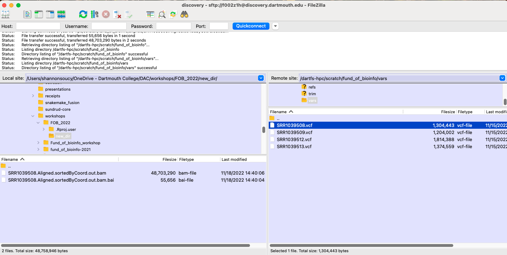
Install the Integrative Genomics Viewer (IGV)
We will be using the Integrative Genomics Viewer (IGV), a genome browser produced by researchers at the Broad Institute, to explore and visualize genomics data on Day 2.
You will need to download and install the IGV desktop application for your operating system before the workshop begins. The latest versions of IGV can be found at their downloads page. After installing IGV, try opening the application on your computer to confirm the installation was successful. Please ensure that the Human (hg38) genome is loaded in the IGV version you downloaded.
Setting up an R project
We will be using R-Studio to explore and analyze genomics data on day 3, therefore we ask that you have R and R-Studio installed prior to attending the workshop. You will need to be running at least version 3.6 to ensure all of the packages needed will run smoothly. The latest versions for R and R-Studio can be found here and here.
Next you will need to set up a new project in R-Studio for this workshop. Projects in R are like containers for various jobs that you will perform, the history of the project will be loaded when you open a new project. By using a project you can install all of the tools ahead of time and they will be there for you when you need them during the workshop. In R-Studio under File select New directory and then select New Project and name the project something you will remember (bioinfo_workshop).
Now that you have your project loaded, run the following code to install all of the packages we will be using during the workshop. For those of you that haven't used RStudio before we have made a video showing the successful installation of the R packages you will need using the commands below.
I bumbled the description of the code chunks with the nested loops in the video, so here is a better description for those that are interested:
There are two loops and each loop starts with an if statement. The first loop states "if biomaRt is not installed enter this loop" and the second one "if BioCManager is not installed enter this loop", when the condition is fulfilled (the package is not installed) the loop is entered and the function install.packages is used to install the package. Each loop is exited once the packages are installed and the package is loaded with the 'library' function to make the functions contained in the package available during the current session.
if (!any(rownames(installed.packages()) == "biomaRt")){
if (!requireNamespace("BiocManager", quietly = TRUE))
install.packages("BiocManager")
BiocManager::install("biomaRt")
}
library(biomaRt)
if (!any(rownames(installed.packages()) == "IRanges")){
if (!requireNamespace("BiocManager", quietly = TRUE))
install.packages("BiocManager")
BiocManager::install("IRanges")
}
library(IRanges)
if (!any(rownames(installed.packages()) == "GenomicRanges")){
if (!requireNamespace("BiocManager", quietly = TRUE))
install.packages("BiocManager")
BiocManager::install("GenomicRanges")
}
library(GenomicRanges)
if (!any(rownames(installed.packages()) == "Gviz")){
if (!requireNamespace("BiocManager", quietly = TRUE))
install.packages("BiocManager")
BiocManager::install("Gviz")
}
library(Gviz)
if (!any(rownames(installed.packages()) == "org.Hs.eg.db")){
if (!requireNamespace("BiocManager", quietly = TRUE))
install.packages("BiocManager")
BiocManager::install("org.Hs.eg.db")
}
library(org.Hs.eg.db)
if (!any(rownames(installed.packages()) == "EnsDb.Hsapiens.v86")){
if (!requireNamespace("BiocManager", quietly = TRUE))
install.packages("BiocManager")
BiocManager::install("EnsDb.Hsapiens.v86")
}
library(EnsDb.Hsapiens.v86)
if (!any(rownames(installed.packages()) == "GenomicFeatures")){
if (!requireNamespace("BiocManager", quietly = TRUE))
install.packages("BiocManager")
BiocManager::install("GenomicFeatures")
}
library(GenomicFeatures)
if (!any(rownames(installed.packages()) == "VariantAnnotation")){
if (!requireNamespace("BiocManager", quietly = TRUE))
install.packages("BiocManager")
BiocManager::install("VariantAnnotation")
}
library(VariantAnnotation)
if (!any(rownames(installed.packages()) == "TxDb.Hsapiens.UCSC.hg38.knownGene")){
if (!requireNamespace("BiocManager", quietly = TRUE))
install.packages("BiocManager")
BiocManager::install("TxDb.Hsapiens.UCSC.hg38.knownGene")
}
library(TxDb.Hsapiens.UCSC.hg38.knownGene)
if (!any(rownames(installed.packages()) == "TxDb.Mmusculus.UCSC.mm10.knownGene")){
if (!requireNamespace("BiocManager", quietly = TRUE))
install.packages("BiocManager")
BiocManager::install("TxDb.Mmusculus.UCSC.mm10.knownGene")
}
library(TxDb.Mmusculus.UCSC.mm10.knownGene)
if (!any(rownames(installed.packages()) == "BSgenome")){
if (!requireNamespace("BiocManager", quietly = TRUE))
install.packages("BiocManager")
BiocManager::install("BSgenome")
}
library(TxDb.Mmusculus.UCSC.mm10.knownGene)
if (!any(rownames(installed.packages()) == "ChIPseeker")){
if (!requireNamespace("BiocManager", quietly = TRUE))
install.packages("BiocManager")
BiocManager::install("ChIPseeker")
}
library(ChIPseeker)
BiocManager::install("BSgenome.Mmusculus.UCSC.mm10")
BiocManager::install("BSgenome.Mmusculus.UCSC.mm10.masked")
sessionInfo()
When installing R packages using the code chunk above a lot of red text prints to the screen, most of the text are messages about the packages and dependencies being installed. However some of these messages could be errors indicating a package was not installed. It is good practice to read through these messages, however a faster way to identify if all the software you need is installed is to run the following code. This code first creates a list of the packages you need called pkg.list, next we loop through the list (more on this on Day 2) to check if each package was successfully installed. If the package is NOT installed the name of the package will print to your screen and you can find the install command in the code chunk above and re-run that code chunk.
pkg.list<-c("biomaRt","IRanges","GenomicRanges","Gviz","org.Hs.eg.db","EnsDb.Hsapiens.v86","GenomicFeatures","VariantAnnotation","TxDb.Hsapiens.UCSC.hg38.knownGene","TxDb.Mmusculus.UCSC.mm10.knownGene","BSgenome","ChIPseeker","BSgenome.Mmusculus.UCSC.mm10","BSgenome.Mmusculus.UCSC.mm10.masked")
# loop to check which packages are NOT installed
for(i in 1:length(pkg.list)) {
if (!any(rownames(installed.packages()) == pkg.list[i])){
print (pkg.list[i])
}
}
# If a package name is printed to the screen you must install that package before continuing with the workshop.
Downloading the data
The commands that you will be following can be found in markdown (.md) files where there is a brief description of each command and how it is applied to the data and what it does followed by an example command that you can copy and paste into the terminal window. Day 1 and 2 will be using the terminal window on your local machine, with an open ssh connection to discovery, as we will be running bash code. For some of day 2 and most of day 3 you will be using RStudio on your local machine to run the commands in the markdown files (.md) located in this GitHub repo.
In your terminal window on your local machine navigate to where you want to download the files needed for this workshop.
On Wednesday before you log onto the first zoom session we will make the workshop materials public and you should download those to your local machine (preferably in the same location as you downloaded the setup materials) with the following command:
git clone https://github.com/Dartmouth-Data-Analytics-Core/Bioinformatics_workshop-2024/
If you run this command before Wednesday morning you may not download the most up to date lessons and your materials may not be identical to those that are presented in the workshop.
If you have issues with any part of the installation and setup, please reach out to us directly DataAnalyticsCore@groups.dartmouth.edu.
Schedule
Bioinformatics_workshop
Schedule
We will try our best to stick to this schedule, although it is a best guess. We may (likely) deviate from this depending on how we are doing for time as we progress. We understand that you may have other commitments and may not be able to be present 100% of the time.
Please let us know if you expect to be absent from any sessions, so that we know to move forward without you.
We have designed the schedule so that breaks are essentially built into the break out rooms, so you should feel free to take time during those sessions to stretch your legs and take a break.
Day1
- 12:00-12:30 - Intro to workshop.
- 12:30-1:30 - Intro. to bioinformatics (lecture, Dr. Owen Wilkins)
- 1:45-2:30 - The UNIX shell/Bash
- 2:45-3:30 - Installing and managing software
- 3:45-4:45 - Intro. to next-generation sequencing (lecture, Dr. Fred Kolling)
Day2
- 12:00-12:10 - Day 1 recap & questions
- 12:10-1:10 - Intro. to NGS data analysis-I (FASTQ files)
- 1:25-2:25 - Intro. to NGS data analysis-II (BAM/SAM files)
- 2:40-3:40 - Intro. to NGS data analysis-III (IGV + counts/VCF files)
- 4:00-5:00 - Intro. to NGS data analysis-IV (Bed/WIG files)
Day3
- 12:00-12:10 - Day 2 recap & questions
- 12:10-1:00 - Basics of R programming
- 1:10-2:00 - Genomics with R & Bioconductor I (working with genomic regions)
- 2:10-3:00 - Genomics with R & Bioconductor II (genome annotation)
- 3:10-3:50 - Introduction to statistical inference for bioinformatics I
- 3:50-4:30 - Introduction to statistical inference for bioinformatics II
- 4:30-5:00 - Wrap-up, closing remarks, & questions
Cheat Sheets
Cheat Sheets
UNIX
Linux Command Line Cheat Sheet
Short-refcard
R programming
Base R
Advanced R
Data import (readr)
Data transformation with ggplot2
Data visualization
Regular expressions
Strings
RStudio
Conda
Day 1
Shell Basics
Unix/Linux Shell basics
The Unix/Linux 'Shell' describes a program that takes commands from an input (eg. your keyboard) and passes them to an operating system that will execute them. In contrast to a Graphical User Interface (GUI) the Shell is simultaneously a command line interface (CLI) and a programming language that allows you to perform tasks on your system.
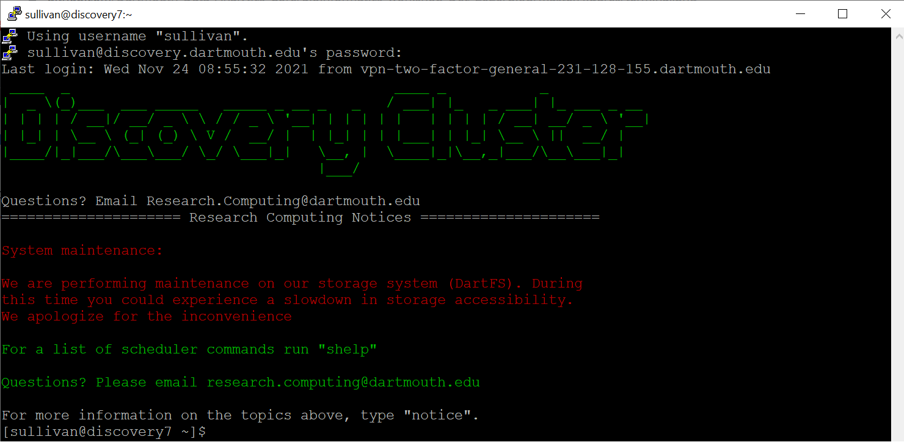
Interacting with a system through the Shell has many advantages over a GUI. The Shell allows you to quickly and easily navigate through directories on your computer, make, copy and search files in a systematic way, and construct pipelines that will execute complex tasks on big datasets.
Importantly, the Shell allows us to do each of these in the context of Bioinformatics, and Bioinformatics software.
Why learn to use a Shell?
Learning to use a Shell can be challenging, however it is a key skill in bioinformatics, as it is the primary way in which we interface with a lot of bioinformatics software and file types.
Some bioinformatics software provides GUIs that enable users to execute tasks with programs that you would otherwise execute using the Shell. While such software can be powerful in the right context, they can also make it very easy to perform tasks in bioinformatics incorrectly, and should therefore be treated with caution.
The Bash shell
The absolute basics
There are different types of Unix shells, however the most popular is Bash (the Bourne Again Shell), which is also the most common on Linux systems. Since the majority of participants will be using the Bash shell, and this is the default shell used on Dartmouth's high performance computing system (which we will be using), this lesson will introduce the Shell through using the Bash shell, however most, if not all, content should be transferable to other Unix shells.
Use the Cheat Sheet in the GitHub repo to help you learn commands and available options.
Accessing the (bash) shell:
- On a Mac or Linux system, the Terminal application provides access to the shell. There are also applications that you can download that provide customizations not present in the Terminal application, such as iTerm2.
- On a Windows system, you can use an application such as MobaXterm or PuTTY.

When you open your terminal application you will be presented with the command prompt $ when you are able to input commands. If the terminal is busy and cannot currently accept new commands, you will not be presented with the prompt.
When the prompt is shown, you can enter commands by typing them in after the prompt. Commands are typically composed of three components:
- the name of the command itself
- any flags or options you wish to run the command with (not always required)
- a file or directory to act on (sometimes implicit)
In the above example, we are asking the Shell to pass the mkdir command to the operating system (for making directories) with the -p option (which lets us make parent and sub directories at the same time) and the argument detailing what directory we want the command to make.
Manual pages for specific commands can be accessed using the man command.
man mkdir
The shell provides us with commands that allow us to list files in our current working directory, as well as change the current working directory to another location. For example:
# 'ls' command lists files in our current working directory
ls
# run ls with the '-a' option to include hidden files
ls -a
# The pwd command shows you your current working directory
pwd
# cd allows you to change your current working directory ('.' means current directory)
cd .
# '..' tells the shell to move your current directory up one directory
cd ..
# check you directory again
pwd
# now go back down the tree. Replace the directory name with your own.
cd OwenW/
pwd
To go back down the directory structure, we specified a directory that was in our current working directory (cd). This is called a relative path, since it is relative to our current directory and will only work if our current directory is relative to the directory we are trying to reach.
Relative paths are contrasted to absolute paths which always starts with a '/' and will start at the root (highest level) of the directory tree, and work from wherever you are in the directory substructure. For example:
ls /Users/OwenW/
By default, your terminal application will start your current directory as your home directory (more on that later). No matter where you are, you can always get back to your home directory using the tilde ~ with the cd command.
cd ~
Another useful command is echo which will evaluate and print characters provided to it.
echo "words words words"
We can use the redirect command (>) to redirect the output of commands like echo into a file. As an example, lets save the important note we made above to a text file.
echo "words words words" > mynotes.txt
Log on to discovery cluster
Many of the higher level commands for working with NGS data will require a lot of memory and computing power, more than most laptops can handle efficiently.
The discovery cluster is a resource hosted by Dartmouth's Research Computing team. This cluster enables you to execute high level commands without using the memory and computing power on your local machine (more on this soon). Let's log onto the discovery cluster now. We will use a secure shell command ssh to log onto the discovery cluster.
# Establish the secure shell connection
ssh netID@discovery7.dartmouth.edu
# Enter your password at the prompt (when you type no characters will show up to preserve privacy)
netID@discovery7.dartmouth.edu's password:
# You're in!
(base) [netID@discovery7 ~]$
The commands that you just executed locally in your terminal window work the same way when you are logged into discovery. It is always useful to orient yourself when you're working on an HPC so that you know where the output of all of the commands you run will end up. Let's run our first command to get your location.
# Check your location on the cluster
pwd
You should see something like /dartfs-hpc/rc/home/h/netID displayed in response to your command. Initially when you log on you will always be directed to your home directory (the address or path listed above). Your home directory by default will have 50GB of storage space to begin with, if you are running something that requires more storage space it is possible to extend that limit temporarily with the /dartfs-hpc/scratch/ drive. This is where we will store all of the files you will be working with today. Directories and files hosted on the /dartfs-hpc/scratch/ drive will only be kept for 45 days, you will receive a notification from Research Computing before the data is deleted.
Start a new directory
Let's start by making a folder, or directory, to store all of the work you do today. It's often a useful practice to give directories informative names, for example 240313_YOURINITIALS_fob, (ex. Owen's 240313_omw_fob, Shannon's 240313_sms_fob, Tim's 240313_sullivan_fob). At a glance I could tell that this directory contains data from March 13, 2024 pertaining to an RNAseq workshop. Notice I chose a title with no spaces. The 'space' is a special character in UNIX, and special characters need to be escaped with the \ and so 240313_abc_fob would look like 240313\ abc\ fob with escape characters.
File names with spaces become unwieldy to type out so most programmers will replace spaces with _, ., or - in their filenames to keep everything neat.
# Navigate to scratch so you can make your own directory there
cd /dartfs-hpc/scratch/
# Make the directory. Replace 'sms' with your own username.
mkdir 240313_sms_fob/
# Change to the newly-created directory.
# replace sms with your initials
cd 240313_sms_fob
# Check your location on the cluster
pwd
# List the contents of your directory
ls
As expected, the new directory that you created is empty there are no files.
Customize your environment
What is an alias
What is a .bash_profile
This can be a real time saver to save alias for frequently accessed work directories.
Add the following definitions to your .bash_profile using the nano text editor.
nano ~/.bash_profile
This opens your .bash_profile where you can copy the following definitions and add them to the bottom of the file, do not forget to edit the path of the FOB definition to include your own initials.
# define the location for the workshop resources we provide
RESOURCE="/dartfs/rc/nosnapshots/G/GMBSR_refs/fobwrkshp/"
# define the location where you will be working during the workshop
# replace 'sms' with your own initials
FOB="/dartfs-hpc/scratch/240313_sms_fob"
Next use the ctrl + X keys to close the file, type Y to save your changes. Now let's reload your .bash_profile to customize your session and check that our definitions are working as expected.
source ~/.bash_profile
echo $FOB
echo $RESOURCE
Viewing the contents of files
Lets copy a file from the resource directory we created for this workshop to the directory you just created. This file (all_counts.txt) provides raw read counts for an RNA-seq experiment, with genes in rows and samples in columns.
#it is prudent to run the 'pwd' command before running the 'cp' command so you know where your files will be copied to
pwd
# copy the file from the resource directory to the $FOB directory you just created
cp $RESOURCE/all_counts.txt $FOB
The shell provides us with commands to view the contents of files in defined ways. The cat command for example (which stands for concatenate) will print the entire contents of a file to the terminal. This can be useful for smaller files, but as you will see with larger files can quickly fill the terminal with more lines of data than it can display.
cat all_counts.txt
When working with larger files, which we are usually doing in bioinformatics, you may not wish to print the whole file as it would overrun your terminal. Other commands exist that allow you to explore file contents with more control.
- more shows you as much of the file as can be shown in the size of the terminal screen you have open, and you can continue to "scroll" through the rest of the file by using the space bar
- less is a similar command to more, and has advantages such as not persisting in the terminal, and being searchable
- head will print the first 10 lines by default, but this number can be controlled with the -n option
- tail will print the final 10 lines of a file, and can also be controlled with the -n option
We will use a large text file to show the utility of these commands, as well as other commands in the subsequent parts of this lesson.
# Show the first 10 lines of the all_counts.txt file
head -n 10 all_counts.txt
# Show the last 20 lines of the all_counts.txt file
tail -n 20 all_counts.txt
# Use the word count (wc) command with the lines option (-l) to show how many lines (rows) are in the dataset
wc -l all_counts.txt
Renaming and removing files
Sometimes you will need to reorganize your directories or rename a file, which can be achieved with the mv command. Let's start by copying the all_counts.txt file from the rnaseq_workshp directory to your home directory.
# Copy the all_counts.txt file to your home directory
cp all_counts.txt ~/all_counts.txt
Now let's rename the copy of the all_counts.txt file that we just created.
# Rename the copied all_counts.txt file
mv ~/all_counts.txt ~/all_counts.copy.txt
You can also use the mv command to move a file to a new location. Let's move the all_counts.copy.txt from your home directory into your rnaseq_workshp directory.
# Move the all_counts.copy.txt into your rnaseq_workshp directory
# use pwd to check that you are in your own directory first
mv ~/all_counts.copy.txt ./
#check the contents of your rnaseq_workshp directory
ls
Copying the all_counts.copy.txt file was just an exercise to show you how the tools work, in practice you will want to keep your directories as neat as possible as you accumulate a lot of files. Let's remove the all_counts.copy.txt file with the rm command.
# For the sake of being careful, let's first list the details file to be removed
ls -l all_counts.copy.txt
# Remove the all_counts.copy.txt file
rm all_counts.copy.txt
You will notice that before the file was deleted you were asked if you were sure you wanted this file deleted. You want to be careful not to remove files that you did not create if you are working in shared directories. If you want to bypass this checkpoint, you can use the -f flag with rm -f to force the removal of a file, but be careful with this, as there is no Trash equivalent in the shell.
Manipulating file contents
Some commands enable you to manipulate and subset files based on specific parameters. One useful example is the cut command, which allows you to 'cut' a file based on the options you select, such as the -f option, which corresponds to fields (columns). We could use cut to obtain read counts for only the first 5 samples in all_counts.txt.
# Look at only the counts from the first five columns
cut -f 1,2,3,4,5 all_counts.txt
To prevent all rows being printed to our console, we could combine the cut command with the head command using a 'pipe', specified by a '|'. Pipes send the output an initial command to a subsequent command, all in the same line, to allow the output of the first command to be used as the input to the second.
# List only the first 20 lines of only samples SRR1039508 (col 2) and SRR1039523 (col 17)
cut -f 1,2,17 all_counts.txt | head -n 20
Similarly to how we used the pipe operator (|) above, we could use the redirect operator(>) to send the output of the cut command to create a new counts file, that only contains the columns 1 (gene IDs), and samples in columns 2 and 17.
# Print the counts from SRR1039508 and SRR1039523 to a new file
cut -f 1,2,17 all_counts.txt > all_counts_sub.txt
# look at head of this new file
head all_counts_sub.txt
Pattern matching with grep
Often we will want to pull a specific piece of information from a large file, let's say that we were interested in the read counts for a specific gene, ALDH3B1 (Ensembl ID: ENSG00000006534). We can use the grep command to search for this ID, or any other character string we are interested in, in our counts matrix.
# Get the count data for ENSG00000006534 (ALDH3B1) from all_counts.txt
grep "ENSG00000006534" all_counts.txt
grep is a pattern recognition tool that searches in files for a character string we can define. We can define the entire character string, as we did above, or combine regular characters with special characters (or 'wildcards') to search for specific types of matches. Some commonly used special characters are included in the table below.
| Operator | Effect |
|---|---|
| * | wildcard stands for any number of anything |
| ^ | start of the line |
| $ | end of the line |
| [0-9] or \d | any number (0123456789) |
| [a-z] | any lowercase letter |
| [A-Z] | any uppercase letter |
| \t | a tab |
These regular expressions can be used with any of the tools that you have learned thus far, so if we wanted to list all of the files in our directory that end in .txt we could use the following command.
# List all files that end in .txt
ls *.txt
We can even enhance the power of these regular expressions by specifying how many times we expect to see the regular expression with quantifiers.
| Quantifier | Operation |
|---|---|
| X* | 0 or more repetitions of X |
| X+ | 1 or more repetitions of X |
| X? | 0 or 1 instances of X |
Now let's use some of these regular expressions in a grep command to see their utility. Let's use regular expressions to see how many genes have zero reads counted for the first four samples. The flag -P indicates that we will be using perl-style regular expressions in the pattern we are searching for, you can use grep --h to learn more about available flags for the grep command.
# Count the number of genes with no reads in the first four samples
grep -P "^ENSG[0-9]*\t0\t0\t0\t0\t" all_counts.txt| wc -l
# Count the number of genes with no reads expressed in any of the samples
grep -P "^ENSG[0-9]*\t0\t0\t0\t0\t0\t0\t0\t0\t0\t0\t0\t0\t0\t0\t0\t0$" all_counts.txt| wc -l
As we move through the subsequent lessons, we will introduce more complex bash commands in order to manipulate common bioinformatics file types. If you are ever confused about what a command does, remember you can always use
manto check out the manual page (or Google it). It you are confused about how commands are used in conjunction with each other, it can also be helpful to break them down and run parts individually, in order to understand what the constituent parts do.
Further learning
- Check out the Bash/Unix cheat sheet links in the GitHub directory, and try out a few other commands on the
all_counts.txtfile. Use themancommand to learn more about these commands and how they should be used.
Installing & Managing Software
Installing and managing bioinformatics software using a CLI
Introduction
Bioinformatics software can be installed and managed in a number of ways. It is important to be keep track of software versions so that you can report what was used for specific analyses/projects such that those analyses can be repeated by another user.
Depending on the software to be installed, it may be available in one of the following formats:
- Pre-installed on your system (eg. Linux core utilities)
- Full package and environment management tools (eg. Conda)
- Pre-compiled binary executable
- Source code to be compiled
- Virtual machine images (eg. Docker, Singularity)
- Language-specific package managers (eg. R/Bioconductor, Python/pip)
In this lesson, we will introduce the major ways bioinformatics packages can be installed and managed through a command line interface.
What is software
Before we discuss how to access software, it is important to understand the basics of compute resources. This may seem pedantic to some of you, but we want to make sure everyone is starting with the same background. The hardware of a system is the available memory and processing power of a compute resource. Software are a set of instructions, written in a coding language, for manipulating data using the available hardware. Software can further be categorized into system software, which interfaces directly with the hardware of the compute system, an example of this would be your operating system and application software, which interfaces with the system software to leverage the hardware compute resources. All of the commands and software we will discuss in this workshop fall into the application category.
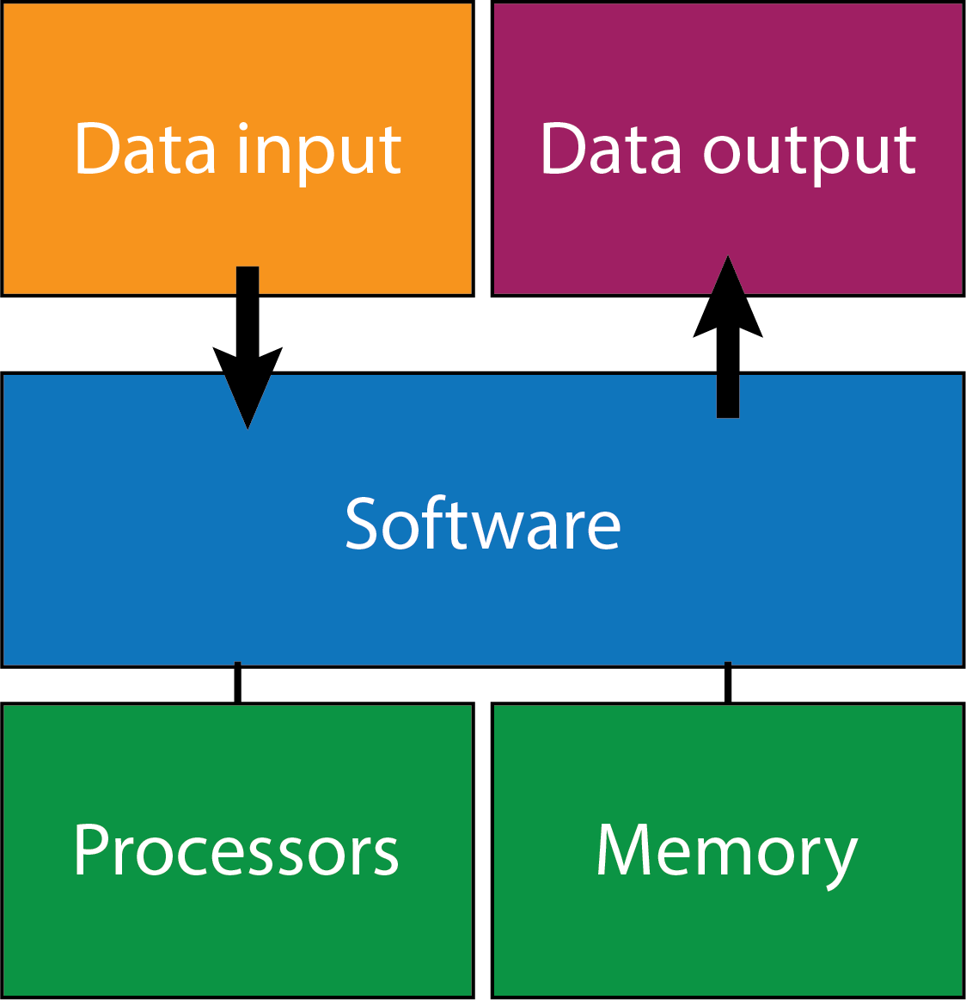
As seen in the previous lesson, Linux systems will have many core utilities (software) for navigating the file system, creating, editing and removing files, and many more. In addition to these core utilities, there are many environmental variables already defined for you, one of these variables is $PATH which is defined by a list of absolute paths where software pre-installed on the system exists. Let's take a look at the variable $PATH
# look at the definition of $PATH with echo
# Use the path so the output from the first command is the input of the second command
# Use the 'tr' command to transform colons (:) to new lines (\n) so that each path is on a new line
echo $PATH | tr ":" "\n"
You will notice many of the directory names end in bin which standards for binary, a common directory name to store executables (programs, software, commands, etc.).
Your $PATH definition may look different from the instructors, as we have added paths to our $PATH variable as we've either created or installed programs. These programs are now available to us as executables as the $PATH variable is set by the .bash_profile at the start of each new session.
Below is a toy example of how you would add a new executables directory to your $PATH variable:
export PATH="~/location/of/new/executables:$PATH"
In the command above we are re-defining the $PATH variable by adding a new path ~/location/of/new/executables to the front of the existing definition of $PATH and separating the new path from the previous definition by a colon :.
Many of the commands we worked with in the previous lesson can be found in /usr/bin. A command for finding where a program lives in the $PATH is the which command. This can be useful for debugging environment issues as they arise when trying to use or install new software. Check where the executable for the echo command is located. The which command :
which echo
What does it mean for software to be installed?
To run software on a Linux command line, the software must both exist, and be accessible by a relative or absolute path. When you do not provide a path to the software it is assumed that the software can be found in one of the locations defined in the $PATH variable. Let's demonstrate what happens when we remove these paths from the $PATH variable.
# List the contents of the current directory
ls
#See where ls software is installed
which ls
#Save your path to retrieve later
PATH_BACKUP=$PATH
#Empty your PATH variable
PATH=
echo $PATH
#Try these commands
ls
cat all_counts.txt
#Note that the software is no longer accessible "ls: No such file"
#It's possible to call them directly, as they all exist
/usr/bin/ls
/usr/bin/cat all_counts.txt
#Re-establish your PATH variable
PATH=$PATH_BACKUP
echo $PATH
pwd
Accessing software from executable files
When we defined software earlier we discussed two major types of software, applications and system software. The code written by programmers (usually C or C++ for bioinformatics software) is referred to as source code. In order to ensure that a piece of software is accessible to many different users and systems, programmers will compile the source code. Compiling source code involves translating the source coding language to a target operating system or server architecture. Once the source code has been compiled it is executable.
Some developers will pre-compile releases of their software for several operating systems and make them available for download. If a pre-compiled executable is available for the Linux system we are using (for Discovery, our OS is CentOS 7), this can be a painless way to install software. It only requires downloading the executable file to a directory and running it. For example, the following code uses the wget command to download a binary, precompiled for Linux, of the bowtie2 aligner.
# download the executable file
wget https://github.com/BenLangmead/bowtie2/releases/download/v2.4.2/bowtie2-2.4.2-linux-x86_64.zip
# unzip the executable file
unzip bowtie2-2.4.2-linux-x86_64.zip
# move into the directory with the executable
cd bowtie2-2.4.2-linux-x86_64/
# look at the contents of the directory
ls
# run the executable to look at the help menu
./bowtie2 --help
Programs written in Java are frequently distributed as JAR files, which are similar to pre-compiled binaries in that only a single file is required to download and install the software. The JAR file is then run using the java -jar command. For example, the following will download the "picard" set of genomics tools written in Java, and run it to output the help menu.
#download the jar file
wget https://github.com/broadinstitute/picard/releases/download/2.23.9/picard.jar
# run the executable with the java software to see the help menu
/opt/java/jdk1.8.0_66/bin/java -jar picard.jar -h
Source code to be compiled
Not all software is available via a pre-compiled executable, these files must be compiled from source code. As mentioned previously, for Bioinformatics software this will usually be C or C++ code, and source code will be distributed with a "makefile", which can be compiled by the user with the following commands.
The --prefix="/path/to/install" defines the directory where the software will be installed. It is a good idea to use a path that exists in your $PATH variable, or at least to add the new path to your $PATH variable with the commands we learned above.
./configure --prefix="/path/to/install"
make
make install
With package managers becoming more widespread, you should only rarely need to install software by compiling source code.
Conda - Full package and environment management
Conda is an open-source package and environment manager that runs on Windows, MacOS and Linux. Conda allows you to install and update software packages as well as organize them efficiently into environments that you can switch between to manage software collections and versions.
Notice that in this section we have moved from discussing software to software packages. Often you will find that a program is written to leverage many other pieces of software, called dependencies. So one piece of software may combine data manipulation techniques from 5 other pieces of software to generate a unique output, these are the dependencies of the first piece of software. It is often the case that each of the 5 dependencies have their own dependencies, so that even though you're interfacing with the command structure for a single piece of software you're actually leveraging instructions for data manipulation from many pieces of software. To add even more complexity there are often multiple versions of software and dependencies each need to be a specific version to function as part of the software you're interested in using. This is where software package managers like Conda really shine.
Conda allows you to create a virtually unlimited number of software environments that can be used for specific analyses, and therefore presents efficient and reproducible way to manage your software across multiple projects. When you create a conda environment you specify the software you'd like to install, and as part of the installation all of the correct versions of any dependencies will also be installed in the same environment.
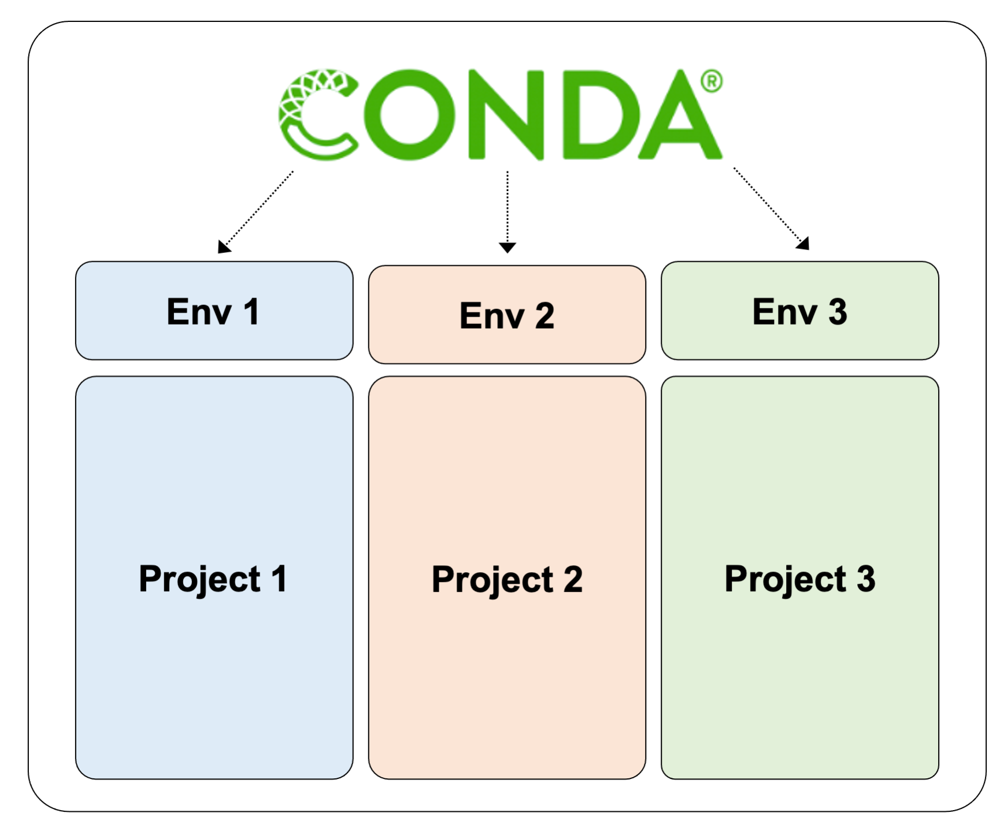
To create a new environment you need to specify the name of the environment with the -n flag as well as the software to be installed. You can specify the version of the software to be installed with the = or omitting this will install the latest version available. For example, to create a new environment called env1 that uses python 3.7.1:
conda create -n env1 python=3.7.1
Once a conda environment has been created, you will need to activate it with the conda activate env1 command. After activating it, you will see the name of the environment appear in parentheses to the left of your command prompt.
When you are inside your conda environment you can see all of the installed software in your environment using the conda list command.
To see a list of the conda environments available to load you can use the conda env list command.
Once your conda environment is activated, you can install new software by running conda install. For example, if we wanted to install samtools, we would run conda install -c bioconda samtools=1.9. bioconda refers to the specific 'channel' that samtools will be installed from. Conda, and its parent distribution Anaconda, are organized into channels that contain specific collections of software. bioconda contains a lot software for analyzing biological data. If no channel is specified the software will be downloaded from the default channel.
The easiest way to identify the install details for a specific package is to search for it on the conda website. The image below shows an example of the page for the bioconda distribution of samtools (available here).
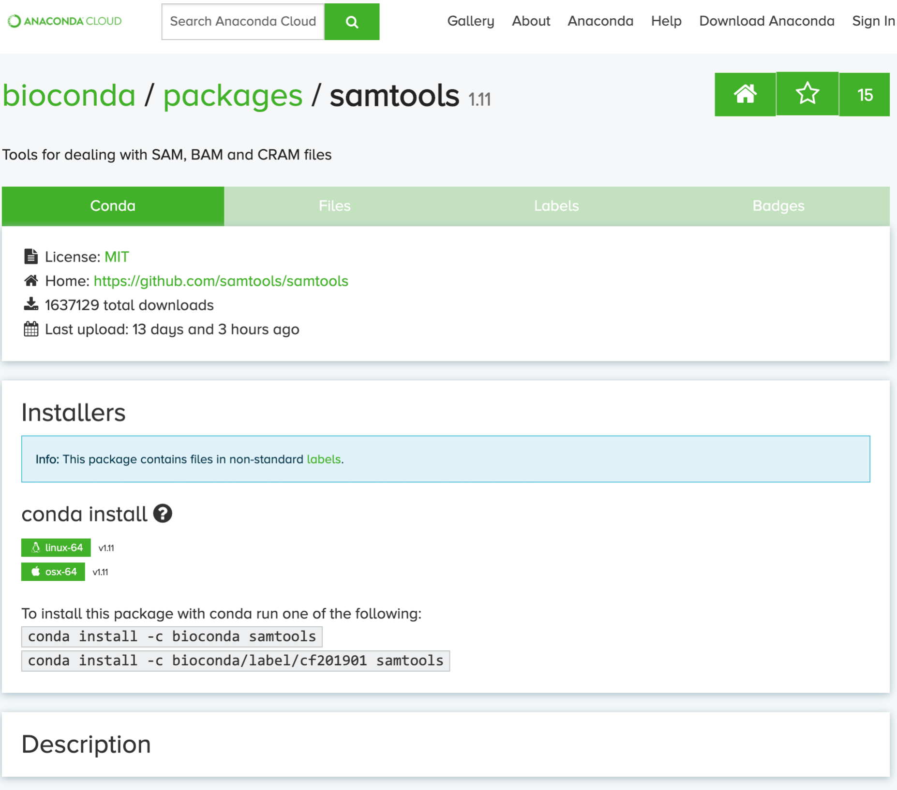
When you are finished with your environment, or if you wish to switch to a different environment, you can simply run conda deactivate and you will be returned to your original software environment.
In order to use conda on the discovery cluster we will need to establish the tool in our current session as well make it available in subsequent sessions by placing the command in our .bash_profile. Copy the command source /optnfs/common/miniconda3/etc/profile.d/conda.sh to your .bash_profile with the nano text editor.
nano ~/.bash_profile
# copy this line to the file : source /optnfs/common/miniconda3/etc/profile.d/conda.sh
# use ctrl+x to exit the editor, then type "Y" to save the changes you made, then press Enter write the changes to .bash_profile
# load the .bash_profile for this session
source ~/.bash_profile
Next you will have to run the following command to create a .conda/ directory in your home directory. This directory will store all of your personal conda environments, including the one we are about to build for this workshop. Notice that by giving two arguments to the mkdir command we are making two directories simultaneously with one command.
cd ~
mkdir -p .conda/pkgs/cache .conda/envs
Another way to create a conda environment is to use a .yml file to specify the software you would like installed in your environment. The file environment.yml is specified with the -f flag in the conda env create command.
cat /dartfs/rc/nosnapshots/G/GMBSR_refs/fobwrkshp/environment.yml
You can see we have specified a name for the environment, and the channel to use for the downloads in the environment.yml file rather than using the -c and -n flags. The number of packages being installed should indicate why conda environments are so useful, imagine having to load all of these packages individually it is much easier to load them with a single command in a conda environment. The command below is how you could use this file to build a conda environment located in the directory you just created (.conda/envs). This command takes a while to execute so in the interest of time we have created this environment for you.
### Do not run this command. We have already created the environment in an accessible location. ###
conda env create -f /dartfs/rc/nosnapshots/G/GMBSR_refs/fobwrkshp/environment.yml
Activate the conda environment we created for you with the following command:
# Load conda environment
conda activate /dartfs/rc/nosnapshots/G/GMBSR_refs/envs/bioinfo
# Check your PATH compared to before activating, note the additional binaries folder
echo $PATH| tr ":" "\n"
This should change the word at the beginning of your prompt from (base) to the name of the conda environment that you just loaded (bioinfo).
Conda is an excellent way to install and manage software for bioinformatics, since typical programs used in bioinformatics require a large number of dependency packages, and we often want/need to use different versions for different projects.
Research computing provides an introduction to using Conda on the Dartmouth computing infrastructure (link here), which describes how to best make use of Conda on Dartmouth's HPC systems.
Containerized software environments (eg. Docker, Singularity)
How VM images differ from conda environments
While package managers like Conda distribute software and all of it's dependencies you are responsible for ensuring that the software you download will run on the OS system your compute resources use. Containerized software environments allow software to be distributed along with an entire Linux environment, because of this you will never run into issues with application and system software incompatibilities. Another advantage of containers is that they are constructed to execute a specific analysis and thus are distributed with any configuration files needed to leverage all software inside the container. To replicate the analysis, you only need to provide a path to input and output files.
However, one disadvantage of containers is that they can raise security issues when working with high performance computing clusters such as discovery. Docker cannot currently be used on discovery, and singularity images that can be currently used are somewhat limited.
Language-specific package managers
Package managers for specific programming languages aim to maintain a central location for packages and libraries, and to simplify their installation. This allows software to be installed using a single command, rather than having to search the internet for each piece of software and download/install it separately.
In Python, packages are available in PyPI. To install Python packages from PyPI (from within the bash shell):
# Install matplotlib from PyPI
pip install matplotlib
For R, packages are available from two major sources:
- CRAN - A large diverse collection of R packages currently approaching 17,000 in total
- Bioconductor - a specific collection of packages specifically geared toward facilitating bioinformatic data analysis in R
We will learn more about installing bioconductor packages on day 3 of the workshop.
Breakout room exercises
You might find this site helpful for completing the following exercises
-
Deactivate the conda environment you are currently in
-
Create a new conda environment named test_env load the software package
bwa -
Activate the
test_envconda environment and list the software in your new environment -
Do you see more than just bwa? Why might that be?
-
Install the latest version of
Rinto your new environment -
Deactivate your environment
-
List the conda environments you have available
-
Download the pre-compiled bowtie2 file
- Look at the options available for running bowtie2 with the
--helpflag
Day 2
Intro to NGS Data Analysis I
Working with NGS data Part I
Learning objectives:
- Understand the FASTQ file format and the formatting sequence information it stores
- Learn how to perform basic operations on FASTQ files in the command-line
#log on to a compute node if not already on one:
srun --nodes=1 --ntasks-per-node=1 --mem-per-cpu=4GB --cpus-per-task=1 --time=08:00:00 --partition=preempt1 --account=DAC --pty /bin/bash
source ~/.bash_profile
# activate the wokrshop conda environment
conda activate /dartfs/rc/nosnapshots/G/GMBSR_refs/envs/bioinfo
#create a variable for the resource directory
RESOURCE="/dartfs/rc/nosnapshots/G/GMBSR_refs/fobwrkshp/"
Raw NGS data, FASTQ file format
FASTQ files are a workhorse file format of bioinformatics, and contain sequence reads generated in next-generation sequencing (NGS) experiments. We often refer to FASTQ files as the 'raw' data for an NGS experiment, although these are technically the BCL image files captured by the sequencer and are used to synthesize the FASTQ files.
FASTQ files contain four lines per sequence record:
Four rows exist for each record in a FASTQ file:
- Line 1: Header line that stores information about the read (always starts with an @), such as the instrument ID, flowcell ID, lane on flowcell, file number, cluster coordinates, sample barcode, etc.
- Line 2: The sequence of bases called
- Line 3: Usually just a + and sometimes followed by the read information in line 1
- Line 4: Individual base qualities (must be same length as line 2)
Here is what the first record of an example FASTQ file looks like
@SRR1039508.1 HWI-ST177:290:C0TECACXX:1:1101:1225:2130 length=63
CATTGCTGATACCAANNNNNNNNGCATTCCTCAAGGTCTTCCTCCTTCCCTTACGGAATTACA
+
HJJJJJJJJJJJJJJ########00?GHIJJJJJJJIJJJJJJJJJJJJJJJJJHHHFFFFFD
Quality scores, also known as Phred scores, on line 4 represent the probability the associated base call is incorrect, which are defined by the below formula for current Illumina machines:
Q = base quality
P = probability of incorrect base call
Q = -10 x log10(P)
or
P = 10^-Q/10
Intuitively, this means that a base with a Phred score (Q-score) of 10 has a 1 in 10 chance of being an incorrectly called base, or 90% chance of being the correct base. Likewise, a score of 20 has a 1 in 100 chance (99% accuracy), 30 a 1 in 1000 chance (99.9%) and 40 a 1 in 10,000 chance (99.99%).
However, the quality scores, 4th line, are clearly not probabilities in the FASTQ file. Instead, quality scores are encoded by a character that is associated with an ASCII (American Standard Code for Information Interchange) characters. ASCII codes provide a convenient way of representing a number with a character.
In FASTQ files, Q-score is linked to a specific ASCII character by adding 33 to the Phred-score, and matching the resulting number with its ASCII character according to the standard code. This ensures quality scores only take up 1 byte per value, reducing the file size. The full table used for ASCII character to Q-score conversion is available here.
Consider the first base call in our sequence example above, the C has a quality score encoded by an H, which corresponds to a Q-score of 39 (this information is in the linked table), meaning this is a good quality base call.
Generally, you can see this would be a good quality read if not for the stretch of #s indicating a Q-score of 2. Looking at the FASTQ record, you can see these correspond to a string of N calls, which are bases that the sequencer was not able to make a base call for. Stretches of Ns' are generally not useful for your analysis.
Paired-end reads:
If you sequenced paired-end reads, you will have two FASTQ files:
- ..._R1.fastq - contains the forward reads
- ..._R2.fastq- contains the reverse reads
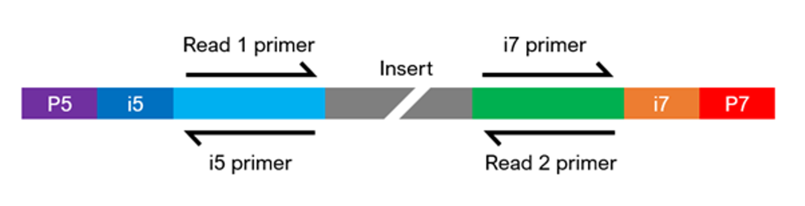
Many bioinformatics softwares will recognize that such files are paired-end, and the reads in the forward file correspond to the reads in the reverse file, although you often have to specify the names of both files to these tools.
It is critical that the R1 and R2 files have the same number of records in both files. If one has more records than the other, which can sometimes happen if there was an issue in the demultiplexing process, you will experience problems using these files as paired-end reads in downstream analyses.
Working with FASTQ files at the command line
To demonstrate how FASTQ files can be explored from the command line environment, we will be using an example set of FASTQ files generated in an RNA-seq study of human airway cell line and their reaction to glucocorticoids (described in Himes et al, 2014, PloS One).
Raw sequence data was obtained from the Sequence Read Archive (SRA) under project accession SRP033351, using the SRA toolkit (SRA). The FASTQ files are stored in /dartfs/rc/nosnapshots/G/GMBSR_refs/fobwrkshp/raw_fastq_files/. To speed up computations in the workshop, these FASTQ files have been subset to only contain reads that align to chromosome 20.
# lets have a look at the project directory containing the reduced raw FASTQs
ls -lah $RESOURCE/raw_subset_fastq/
# lets have a look at the project directory containing the full raw FASTQs
ls -lah $RESOURCE/raw_full_fastq/
Since these are paired-end reads each sample has a file for read 1 (SRRXXX_1) and a file for read 2 (SRRXXX_2). All of the files are gzipped in order to reduce the disk space they require, which is important as you can see that the full files are all 1GB or more (you need a lot of space to process RNA-seq, or other-NGS data).
Given the size of these files, if everyone were to copy them to their home directory, this would take up a very large amount of disk space. Instead you will create a symbolic link or symlink to the data in the scratch drive with the command ln -s. This command is similar to cp in that it accepts a source file and destination path as the arguments.
# move into your fundamentals_of_bioinformatics directory
# check that it worked by running the pwd command. You should be in your own directory on /dartfs-hpc/scratch.
cd $FOB
# lets keep our data organized and make a folder for these raw fastq files
mkdir raw
cd raw
# Create a symlink to the data directory in the scratch drive
ln -s $RESOURCE/raw_subset_fastq/*fastq.gz ./
# Check that your command worked
ls -lah
Any modifications made to the original files in /dartfs/rc/nosnapshots/G/GMBSR_refs/fobwrkshp/raw_subset_fastq/ will also be seen in the symlink files. Moving the original files or deleting the original files will cause the symlinks to malfunction.
Basic operations
Generally you won't need to go looking within an individual FASTQ file, but for our purposes it is useful to explore them at the command line to help better understand their contents. Being able to work with FASTQ files at the command line can also be a valuable skill for troubleshooting problems that come up in your analyses.
Due to gzip compression of FASTQ files we have to unzip when we want to work with them. We can do this with the zcat command and a pipe (|). zcat works similar to cat but operates on zipped files, FASTQ files are very large and so we will use head to limit the output to the first ten lines.
Use zcat and head to have a look at the first few records in our FASTQ file.
# unzip and view first few lines of FASTQ file
zcat SRR1039508_1.chr20.fastq.gz | head
zcat SRR1039508_2.chr20.fastq.gz | head
How many records do we have in total? (don't forget to divide by 4..)
zcat SRR1039508_1.chr20.fastq.gz | wc -l
zcat SRR1039508_2.chr20.fastq.gz | wc -l
Remember, paired-end reads should have the same number of records!
What if we want to count how many adapter sequences exist in the FASTQ file?
To do this, we would need to print all the sequence lines of each FASTQ entry, then using the pipe we can search the sequences for the adapter sequence.
To print all the sequence lines (2nd line) of each FASTQ entry, we can use a command called sed, short for stream editor which allows you to streamline edits to text that are redirected to the command. You can find a tutorial on using sed here. The sed command often accepts a 'script' as an argument indicating the edits that should be made, the script argument is indicated by the text between single quotes.
Within the sed command we want to exercise fine grained control on how the program prints lines to the screen. First we will use sed with the 'p' argument in the script to indicate we want the output from the sed script (the parts in apostrophes) to be printed, and the -n option to tell sed we want to run the command in silent mode. We specify '2~4p' as we want sed to print line 2, then skip forward 4. We can then pipe these results to the head command, we can get the sequence line of the first 10 entries in the FASTQ file.
zcat SRR1039508_1.chr20.fastq.gz | sed -n '2~4p' | head
Building on this approach, we can apply this code to the first 10,000 entries of the FASTQ file, and add the grep command to search for the adapter sequence in the output. We use the -o option for grep, to print only the portion of the line that matches the character string.
# Pipe the sequence line from the first 10000 FASTQ records to grep to search for our (pretend) adapter sequence
zcat SRR1039508_1.chr20.fastq.gz | sed -n '2~4p' | head -n 10000 | grep -o "ATGGGA"
Continuing to build our command, we can pipe the output of the grep command to the wc -l command to count the number of times this match was recovered.
# Count how many times in the first 10000 FASTQ our (pretend) adapter sequence occurs
zcat SRR1039508_1.chr20.fastq.gz | sed -n '2~4p' | head -n 10000 | grep -o "ATGGGA" | wc -l
Just to break down this fairly complex command into a simpler format:
1. zcat SRR1039508_1.chr20.fastq.gz prints the contents of the file to the screen
2. sed -n '2~4p' prints the second line and skips four lines and prints the line again
3. head -n 10000 limits the output to the first 10000 sequence lines
4. grep -o "ATGGGA" looks for our adapter pretend adapter sequence in the first 10000 reads and prints the pattern to the screen when found
5. wc -l counts the number of lines that are printed to the screen
By adjusting just a couple of these steps we can instead count all of the instances of individual DNA bases (A,T,C,G) called by the sequencer in this sample. Here we use the sort command to sort the bases printed by grep and then use the uniq command with the -c option to count up the unique elements.
zcat SRR1039508_1.chr20.fastq.gzprints the contents of the file to the screensed -n '2~4p'prints the second line and skips four lines and prints the line againhead -n 10000limits the output to the first 10000 sequence linesgrep -o .looks for any single pattern (A, T, C, G, N) and prints it on a separate linesortsorts the bases alphabeticallyuniq -ccounts the instances of each unique element
# Determine the G/C content of the first 10000 reads
zcat SRR1039508_1.chr20.fastq.gz | sed -n '2~4p' | head -10000 | grep -o . | sort | uniq -c
Now we have the frequency of each nucleotide from the first 10,000 records. A quick and easy program to get GC content, (you can see that there is around 52% GC content just by comparing the A/T count to the GC count). GC content is used in basic quality control of sequence from FASTQs to check for potential contamination of the sequencing library. We just used this code to check 1 sample, but what if we want to know for our 4 samples or 100 samples?
For & while loops
Loops allow us repeat operations over a defined variable or set of files. Essentially, you need to tell BASH what you want to loop over, and what operation you want it to do to each item.
Similar to how we set variables in our environment, here we use the variable i, set in the conditions of the loop, to reference all the elements to be looped over in the operation using $i in the for loop example below. The syntax of a for loop are essentially for CONDITION; do CODE;done, with the conditions and code punctuated by a semicolon.
# loop over numbers 1:10, printing them as we go
for i in {1..10}; do echo "$i"; done
This loop essentially states for i in the list of numbers from 1 to 10, do print $i to the screen using the echo command, finish the loop done when you get to the bottom of my list (10).
Alternatively, if you do not know how many times you might need to run a loop, using a while loop may be useful, as it will continue the loop until the Boolean (logical) specified in the first line evaluates to false. An example would be looping over all of the files in your directory to perform a specific task. e.g.
ls *.fastq.gz | while read x; do
# tell me what the shell is doing
echo $x is being processed...
# unzip w/ zcat and print head of file
zcat $x | head -n 4
# print 2 lines to for ease of viewing
echo -e "\n\n"
done
This loop is a bit more complex and you will notice each new line of code within the loop ends in ; \ to indicate that even though the codes starts on a new line (for readability) we are still entering commands to be executed within the loop. In this loop we are saying:
ls *.fastq.gzlist all the files in the current directory ending in .fastq.gzwhile read x; doas long as there are still files in the list save the filename as $xecho $x is being processed..;print the sample name to the screenzcat $x|head -n 4zcat the file and print the first entryecho -e "\n\n" ;print two new lines to separate the output from the previous file (the -e flag enables interpretation of\)
Perhaps we want to check how many of the first 10000 reads in each file contain the start codon ATG. We can do this by searching for matches and counting how many times it was found, and repeating this process for each sample using a while loop.
ls *.fastq.gz | while read x; do
echo $x
zcat $x | sed -n '2~4p' | head -n 10000 | grep -o "ATG" | wc -l
done
We could use one of these loops to perform the nucleotide counting task that we performed on a single sample above, but apply it to all of our samples in a single command.
ls *.fastq.gz | while read x; do
echo -e "\n"
echo processing sample $x
zcat $x | sed -n '2~4p' | head -10000 | grep -o . | sort | uniq -c
done
Scripting in bash
Reproducability is an important topic in data analytics. As you saw above many of the operations performed are repetatively applied to several samples and loops are a useful way to automate this process, but once we write some useful code we want to save it to use later. This way we aren't reinventing the wheel and we can share the program we just wrote with other lab members, or apply it to another dataset at a later date.
One way to do this would be to write this series of commands into a Bash script, that can be executed at the command line, passing the files you would like to be operated on to the script. Generally the suffix of a script indicates the language the script is written in, for BASH scripts we use *.sh, for python we use *.py, for perl we use *.pl, and for R we use *.R.
Lets create a script to count nucleotide frequencies:
nano count_nt.sh
The first thing we need to add to our script (and this is true of any script) is called a shebang, this line indicates the coding language used in the body of the script. The BASH shebang is #!/bin/bash.
Next we add our program to the script. As in the loops we use the $ to specify the input variable to the script. $1 represents the variable that we want to be used in the first argument of the script. Here, we only need to provide the file name, so we only have 1 $, but if we wanted to create more variables to expand the functionality of our script, we would do this using $2, $3, etc.
Copy the following code into the nano editor file you just opened and use the ctrl+x command to close the file and save the changes you made.
#!/bin/bash
echo processing sample "$1"
zcat $1 | sed -n '2~4p' | head -n 10000 | grep -o . | sort | uniq -c
Now run the script, specifying the a FASTQ file as variable 1 ($1)
# have a quick look at our script
cat count_nt.sh
# now run it with bash - which again indicates that the code is in the BASH language
bash count_nt.sh SRR1039508_1.chr20.fastq.gz
If we wanted to run on multiple samples we can use our while loop again to do this for all the FASTQs in our directory
ls *.fastq.gz | while read x; do
bash count_nt.sh $x
done
What if we wanted to write the output into a file instead of printing to the screen? We could save the output to a file that we can look at, save to review later, and document our findings. The >> redirects the output that would print to the screen to a file.
# create the text file you want to write to
touch out.txt
# run the loop
ls *.fastq.gz | while read x; do
bash count_nt.sh $x >> out.txt
done
# view the file
cat out.txt
These example programs run fairly quickly, but stringing together multiple commands in a bash script is common and these programs can take much longer to run. In these cases we might want to close our computer and go and do some other stuff while our program is running.
We can do this using nohup which allows us to run a series of commands in the background, but disconnects the process from the shell you initially submit it through, so you are free to close this shell and the process will continue to run until completion.
# run your GC content program using the executable you just made
nohup bash count_ATGC.sh SRR1039508_1.chr20.fastq.gz &
# print the result
cat nohup.out
Quality control of FASTQ files
While the value of these exercises may not be immediately clear, you can imagine that if we wrote some nice programs like we did above, and grouped them together with other programs doing complimentary tasks, we would make a nice bioinformatics software package. Fortunately, people have already started doing this, and there are various collections of tools that perform specific tasks on FASTQ files.
One excellent tool that is specifically designed assess quality of FASTQ file is FastQC. FastQC is composed of a number of analysis modules that calculate QC metrics from FASTQ files and summarize the results into an HTML report, that can be opened in a web browser.
Checking quality of raw NGS data is a key step that should be done before you start doing any other downstream analysis. In addition to identifying poor quality samples, the quality control assessment may dictate how you analyze your data downstream.
Lets have a look at some example QC reports from the FastQC documentation:
Run FASTQC on our data and move the results to a new directory.
# specify the -t option for 4 threads to make it run faster
fastqc -t 1 *.fastq.gz
ls -lah
Note: FastQC does not use the entire dataset, just the first few thousand reads in the FASTQ file, therefore there could be some bias introduced by this, although we assume there isn't since entries are placed into FASTQ files randomly.
Opening and evaluating an individual HTML file for each FASTQ file is tedious and slow. Luckily, someone built a tool to coalate various types of analytic reports. MultiQC searches a specified directory (and subdirectories) for log files that it recognizes and synthesizes these into its own browsable, sharable, interactive .html report that can be opened in a web-browser. MultiQC recognizes files from a very wide range of bioinformatics tools (including FastQC), and allows us to compare QC metrics generated by various tools across all samples so that we can analyze our experiment as a whole.
Lets run MultiQC on our FastQC files:
multiqc .
To view this html file we will need to move data from dsicovery onto your LOCAL MACHINE. To start open a new terminal environment and use the pwd command to figure out where you are and navigate to where you want to write the file, I would recommend the Downloads directory.
The command looks intimidating but the syntax is similar to previous commands we have used in that it accepts two arguments; first the path to the source file and second the path where the file should be written (or copied).
# open a new terminal environment and check your path
pwd
# navigate to Downloads directory (ON YOUR LOCAL MACHINE)
cd Downloads/ # you may need to adjust this path depending on the organization of your machine
# use secure copy (scp) to download the files to your local machine -
# EDIT THE COMMAND BELOW to include your netID and your initials, and paste this command into the terminal
scp NETID@discovery7.dartmouth.edu:/dartfs-hpc/scratch/YOUR_DIRECTORY/raw/multiqc_report.html ./
You can find the MultiQC report run on the complete dataset across all samples in the dataset in the Github repository, under QC-reports. Let's open it and explore our QC data. If the scp command did not work for you there is a copy of the multiqc report in the Github repo you downloaded under Day-1/data/multiqc_report.html.
Break out exercises
-
Run through the commands above (section labeled Quality Control of FASTQ files) to generate a quality report for each sample and coallate the results into a single file.
-
Download the report you generated to your local machine and look at the QC metrics. How does our data compare to the good/bad example reports?
-
Would you make any adjustments to the flags used when running the FastQC tool?
- higher or lower quality threshold?
- leave off the quality filter?
-
adjust the minimum read size threshold?
-
Create a bash script to record code for checking the quality of fastq files.
Optional lesson: Trimming An additional QC step one could perform on raw FASTQ data is to trim the sequences to remove bits of sequences we are not interested in, or were not called confidently by the sequencer. This step is optional in most analysis, although should be based on an empirical decision that leverages the QC assessment of raw FASTQs using a quality report like the one we just generated with FASTQC/MultiQC. For example, if we see we have a large number of adapter sequences in our data, or a high proportion of low-quality bases near our read ends, we may wish to trim our raw reads. Otherwise, we could skip this step in the analysis. Notably, some read mappers account for mismatches or low quality bases at the end of reads in a process called soft-clipping, where these bases are masked from being included in the alignment, but are technically still part of the sequence read in the FASTQ. If you are using an aligner that performs soft-clipping, you could consider omitting read trimming of FASTQ files.
Intro to NGS Data Analysis II
Working with NGS data Part II
# IF YOU'RE JUST LOGGING ONTO DISCOVERY
#log on to a compute node if not already on one:
srun --nodes=1 --ntasks-per-node=1 --mem-per-cpu=4GB --cpus-per-task=1 --time=08:00:00 --partition=preempt1 --account=DAC --pty /bin/bash
source ~/.bash_profile
# activate the wokrshop conda environment
conda activate /dartfs/rc/nosnapshots/G/GMBSR_refs/envs/bioinfo
#check that your aliases are defined
echo $FOB
echo $RESOURCE
Alignment files (BAM/SAM/CRAM formats)
Learning objectives:
- Understand the major principles behind short-read alignment
- Learn how alignment data is stored in SAM/BAM format
- Learn how to perform basic operations on BAM files using
Samtools - Perform an alignment with
STAR
Principles of read mapping for RNA-seq
For NGS experiments, the goal of read mapping is to find an alignment that describes the most likely location in the reference genome where that read originated from. This is generally determined by reducing the information in the reference and query (read to be mapped) into smaller strings and looking for the position in the reference with the highest number of matching smaller strings. This same process is also used in de novo genome assembly, local alignments (BLAST or BLAT), and global alignments.
Although we won't go into the theory here, aligning reads to reference genomes involves mapping to identify the most likely position of the read in the reference genome, followed by the alignment, which describes the base-by-base relationship between the read and the reference.
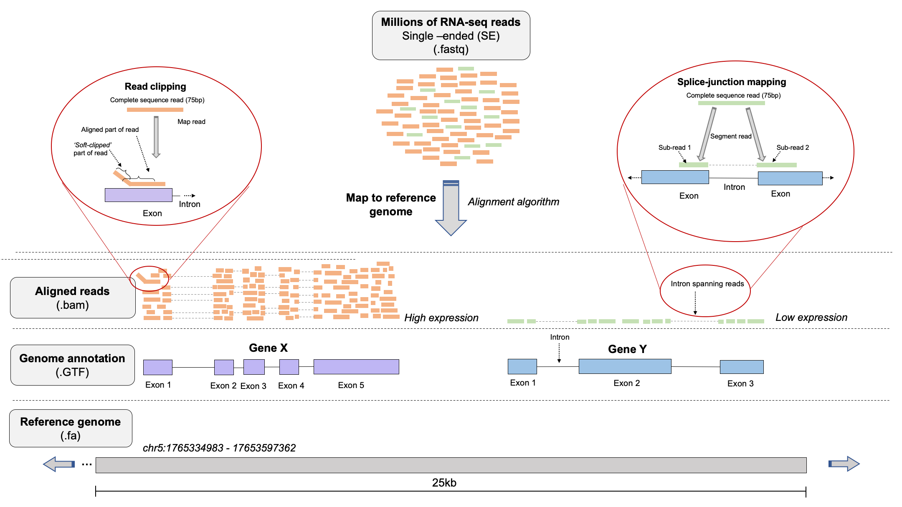
Challenges of aligning millions of short reads to a reference genome involve:
- Mismatches introduced by genetic variation and sequencing errors
- Repetitive sequences in genomes (e.g. start and end of chromosomes)
- For Eukaryotic genomes the presence of introns in reference genomes, meaning aligners must be able to consider splice-junctions
- For Prokaryotic genomes the presence of mobile genetic elements or recombination hotspots
It is important when selecting an aligner to select one appropriate for your experiment. Different aligners generally have different properties and applications. For example, some aligners are splice-aware while others are not. Splice-aware aligners can generate alignments that span intronic regions and therefore account for splicing, e.g. STAR and HISAT2. If your dataset is prokaryotic (non-splicosomal) you would not want to use a splice-aware aligner, and instead using an aligner that is not designed to map across intronic regions such as bwa-mem or bowtie2.
What is a reference genome?
Reference genomes are more of a concept, not a reality. A reference genome (or reference assembly) is an idealized representation of the genome of particular organism, generated through de novo genome assembly of sequencing reads from one or several individuals. In NGS analysis, we commonly use reference genomes as a scaffold upon which to construct alignments of sequencing reads via read mapping.
Reference genomes have proven a powerful tool that allows us to appropriately address many scientific questions, as well as providing the scientific community a standardized coordinate system for that is used for specific genome builds. For example, the permanent start coordinate for the human gene CDK9 in reference genome GRCh38/p.13 is chr9:127,786,034.
New genome builds are produced when significant improvements have been made to the sequence, warranting release of an updated sequence with a new coordinate system. For example, genome coordinates are different between GRCh38 and GRCh37. Individual genome builds are sometimes updated through patches, for example, when a previously ambiguous sequence becomes available.
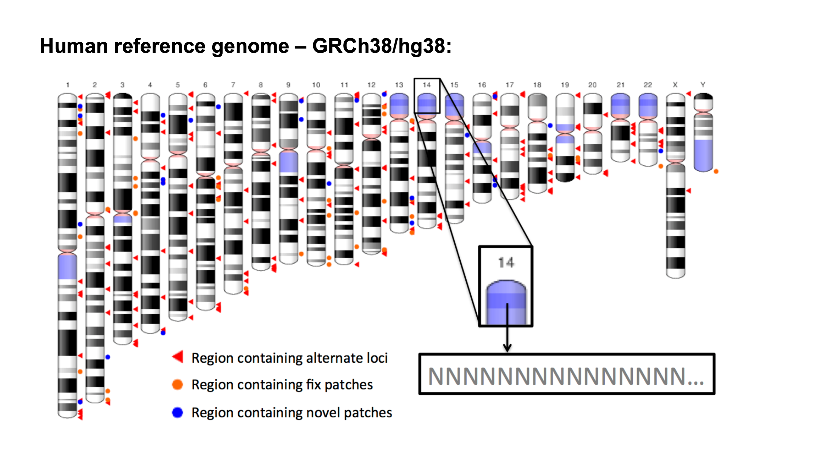
Image Credit: Broad Institute
Reference genomes are generally distributed in FASTA file format, with separate entries for each chromosome/contig in the assembly. Use the code below to explore an a recent version of the human reference genome GRCh38/hg38.
# print head of FASTA file
head $RESOURCE/refs/Homo_sapiens.GRCh38.dna.primary_assembly.fa
# print tail of FASTA file
tail $RESOURCE/refs/Homo_sapiens.GRCh38.dna.primary_assembly.fa
# print only header lines for each FASTA record
grep ">" $RESOURCE/refs/Homo_sapiens.GRCh38.dna.primary_assembly.fa
Limitations of reference genomes
There are a number imitations to using reference genomes:
- do not account for genetic variation, as they are composed of one linear sequence
- short-read sequencing technology has been used to generate some references, which can lead to inaccuracies or gaps in the assembly of regions that are challenging to assemble (e.g. repetitive regions)
- some assemblies, such as the human reference, do not contain so-called non-reference unique insertions (NUIs), which are unique sequences found in multiple individuals but not in the reference
These limitations have resulted in productive discussion and research around the concepts and utilities of reference genomes, prompting some alternative reference styles to be suggested. See Wong et al, Nat. Comm. 2020 and Ballouz et al, Genom. Biol. 2019](https://genomebiology.biomedcentral.com/articles/10.1186/s13059-019-1774-4) for examples.
In recent years, long read sequencing technologies have allowed us to improve the quality and completeness of reference genomes.
Sources of reference genomes & genome annotations
Reference genomes are hosted on a number of different websites and often accompanied by genome annotations, which describe the gene/transcript coordinates for that genome. These annotations are the product specific pipelines utilized by large-scale genome annotation projects. RefSeq (NCBI), UCSC, and Ensembl all generate genome annotations based on specific annotation pipelines, and currently host annotations for a wide range of organisms.
Genome annotations are most commonly distributed using the GTF (Gene transfer format) file format. We will explore this format in more detail later in the lesson, however we can briefly look at an example annotation file for hg38:
# print head of GTF file
head $RESOURCE/refs/Homo_sapiens.GRCh38.97.chr20.gtf
# print tail of GTF file
tail $RESOURCE/refs/Homo_sapiens.GRCh38.97.chr20.gtf
# print all lines containing CDK9
grep "ESF1" $RESOURCE/refs/Homo_sapiens.GRCh38.97.chr20.gtf
The table below from the UCSC website highlights how different genome annotations produced by different annotation pipelines can be with respect to availability of transcript models for human genome build GRCh38/hg38 (as of March 2019).
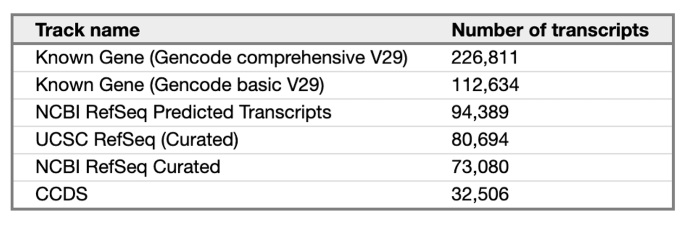
Several genome annotation project websites will also host current and archived versions of the reference genome sequence. For common genomes, the hosted reference genomes (and their sequences) are identical and come from the same source/submitter. For example, the human genome reference sequences hosted on NCBI, UCSC, and Ensembl all use the sequence provided by the Genome Reference Consortium (GRC) which provides genome assemblies for human, mouse, zebrafish and chicken.
Most reference genomes and genome annotations can be downloaded through ftp sites that allow you to download the FASTA and GTF files using the command line. While there are several ways you can download files from the command line, we used wget in the software lesson, here is an example using the rsync command. Similar to cp the syntax of rsync is rsync SOURCE DESTINATION.
Do not run this command - this is only an example
# example rsync command with the UCSC ftp site
# the -a option denotes archive mode, the -P option indicates you want to show the progress as files are downloaded
rsync -a -P rsync://hgdownload.soe.ucsc.edu/goldenPath/hg38/hg38Patch11/ ./
This is one example, but generally you should follow instructions on downloading references from the website/center hosting them on the ftp site.
This is a great example of a command that is useful to run with nohup during an interactive session as these downloads can take a long time.
General concepts for read alignment
Read clipping:
Aligners are capable of 'clipping' reads from sequence ends if they do not improve the quality of an alignment that exists for the rest of the sequence.
There are two type of clipping:
- Soft-clipping: bases at 5' and 3' ends of the read will be kept in the read sequence in the BAM file, but are NOT part of the alignment
- Hard-clipping: bases at 5' and 3' ends of the read will be removed from the BAM file altogether and are NOT part of the alignment
Such clipping is commonly used by aligners to get rid of sequence contamination, e.g. adapter sequences or polyA tails from mRNAs, so that it does not affect the alignment. This is why you do not necessarily need to be very aggressive in read trimming during the pre-processing steps. Clipping can be very advantageous, but also can potentially cause some issues, read more here.
Splicing:
As discussed above, numerous aligners exist, consisting of both splice-aware and splice-unaware aligners. Splice-aware aligners, such as STAR and HISAT2 will produce alignments spanning splice junctions, which is obviously an important characteristic of RNA-seq data that the aligner needs to be able to account for. Furthermore, if you provide coordinates of splice-junctions to aligners like STAR, it can improve the mapping over spliced regions and improve detection of novel splice-functions.
What input do I need for an alignment?
At minimum:
- FASTQ file(s)
- A reference genome (.fasta)
Optional:
- .gtf file for the reference genome that species the genomic feature annotation. As mentioned above, if you know where the splice-junctions in your genome are, you can give this to aligners such as STAR and they will use this information to improve the quality of mapping in these regions.

Alignment file formats
Read alignments for NGS data are stored in three major file formats: SAM (.sam), BAM (.bam), and CRAM (.cram).
- SAM (Sequence Alignment/Map) files are tab-delimited text formatted files that are human readable (should you dare to look inside).
- BAM files are a compressed, binary version of SAM files and are NOT human readable, but are much faster to parse and do complex operations with.
- CRAM files are compressed versions of the BAM format, and are not human readable, they are generally only used for storage purposes.
You can read all about the SAM/BAM/CRAM file format specification in the documentation here. As with FASTQ files, you may never need to actually look inside of a SAM/BAM file, but it is important to have an understanding of what information they contain.
Alignment files are composed of two basic sections:
- the header
- the alignments
All header lines start with the @ symbol. The mandatory flag @HD will come first in the header and can be followed by a number of additional flags that represent features of the alignments in the file (e.g. SO, indicating reads are sorted by coordinate).
The alignment section contains a number of 'slots' for each read alignment that describe key information about the alignment. 11 slots are mandatory, while others are optional and depend on the aligner used, and the settings used for mapping.

SAM/BAM/CRAM files can be viewed, queried, and manipulated using the Samtools software suite, which we will explore the usage of in more detail later in this lesson.
Notes on select SAM fields:
FLAG:
Encodes important information about the read, for example, is it a primary, secondary, or supplementary alignment. Since a single read will likely have a number of properties that we want to 'flag', SAM files use a special way of encoding the FLAG field to pack as much information as possible into a single number. While we won't go into detail on this here, SAM/BAM file use a bit-wise system to combine information across flags into a single integer.
I encourage you to go read more about FLAGs and how they are specified in the SAM/BAM documentation. The Broad institute also provides an excellent tool for decomposing SAM flags into the properties of the read that make up a specific FLAG value.
This command will provide basic information on FLAGs from samtools.
samtools flags
The values shown here relate to the hexadecimal system
MAPQ:
Corresponds to the quality of the mapping. These are calculated in the same way as the Phred scores Q = -10 x log10(P), although are generally considered to be a best guess form the aligner. A MAPQ of 255 is used where mapping quality is not available. Some aligners also use specific values to represent certain types of alignments, which may affect use of downstream tools, so it is worth understanding those that are specific to your aligner.
CIGAR:
An alphanumerical string that tells you information about the alignment. For relatively short reads, these are nice, but for long reads, they are a headache. Numbers correspond to number of bases, and letters correspond to features of those bases.
Letter key for CIGAR strings:
M = match or mismatch
S = soft clip
H = hard clip
I = insertion
D = deletion
N = skipping
So for example, alignment in row 3 of our SAM file example above (5S6M) would describe an alignment where 5 bases are soft-clipped, followed by 6 matching bases.
Generating alignments
Since the reads we have been working with were generated as part of a eukaryotic RNA-seq experiment, we need to use a splice aware aligner that can generate gapped alignments. STAR (Spliced Transcripts Alignment to a Reference) is a flexible and efficient short read aligner. We will use STAR as a general example of aligning short reads to a reference genome. Other short read aligners (e.g. bwa and bowtie/bowtie2) will use different syntax on the command line and you should carefully read the documentation for the aligner you plan to use.
Constructing a genome index
Short read aligners require you to create an index of your reference genome before you can conduct an alignment. The index is in principle similar to how one might index a book, so that specific items or information can be found more quickly. For the genome index, we are indexing the genome so that the aligner can narrow down where a read may map to and speed up mapping.
Index generation can be time consuming, so we are providing you with a pre-built genome index consisting of only chromosome 20 (hg38). Alignments will therefore only be generated for this chromosome. The code chunk below shows example usage of STAR to create a STAR index of hg38.
###### DO NOT RUN - EXAMPLE CODE CHUNK ONLY #######
STAR --runThreadN 16 \
--runMode genomeGenerate \
--genomeDir hg38_chr20_index \
--genomeFastaFiles Homo_sapiens.GRCh38.dna.primary_assembly.chr20.fa \
--sjdbGTFfile Homo_sapiens.GRCh38.97.chr20.gtf \
--genomeSAindexNbases 11
Option details:
- --runThreadN: no. of core/threads you want to use
- --runMode: the mode you want to run STAR in (for index generation, this should be genomeGenerate)
- --genomeDir: directory you want your genome to go to
- --genomeFastaFiles: path to genome .fasta
- --sjdbGTFfile: path to genome annotation in .gtf format
- --sjdbOverhang: default is 100, usually set to the readlength -1
You can find the pre-built index at /scratch/fund_of_bioinfo/refs/hg38_chr20_index/. Once you have generated an index, it is best not to do anything with it, except tell STAR where it is when you want to align reads.
Aligning the reads
We are ready to align the reads from the paired-end FASTQ files SRR1039508_1.trim.chr20.fastq.gz and SRR1039508_2.trim.chr20.fastq.gz.
# go to your home directory for the workshop
cd $FOB
# make a directory for aligned reads and enter it
mkdir align
cd align
# run splice aware alignment
STAR --genomeDir $RESOURCE/refs/hg38_chr20_index \
--readFilesIn $FOB/raw/SRR1039508_1.chr20.fastq.gz $FOB/raw/SRR1039508_2.chr20.fastq.gz \
--readFilesCommand zcat \
--sjdbGTFfile $RESOURCE/refs/Homo_sapiens.GRCh38.97.chr20.gtf \
--runThreadN 1 \
--outSAMtype SAM \
--outFilterType BySJout \
--outFileNamePrefix SRR1039508.
Option details:
- --genomeDir: the path to the directory with genome indices
- --readFilesIn: read files to map to reference alignment
- --readFilesCommand: uncompression command to apply to read files
- --sjdbGTFfile: the path to the annotation file that includes coordinates of splice-junctions
- --runThreadN: number of threads to use in the run
- --outSAMtype: (SAM/BAM unsorted/ BAM SortedByCoordinate)
- --outFilterType: how mapped reads will be filtered (normal/BySJout)
- --outFileNamePrefix: prefix for outfiles generated in the run, notice that this ends in "." so that the suffix of the outfiles is separated from the prefix
NOTE: It usually makes sense to set
outSAMtypetoBAM SortedByCoordinate, so that I do not need to convert the default SAM file output by STAR to BAM, then sort it. However, since we want to look inside the file at the alignments, we are creating a SAM first, and will convert to a BAM afterwards.
As with most aligning, there are many options that can be set to control how read mapping is performed and define properties of alignments that can be generated. The settings you need to use depend you your data type and analysis workflow. Always read the documentation for the aligner you are using in detail.
Alignment output
Once the alignment has finished, you should have a number of new files in your directory. These are composed of:
- Aligned.out.sam - your alignment file
- Log.out - the log of the STAR run
- Log.final.out - the summary file of the mapping statistics
- Log.progress.out - a summary file that is updated with key mapping statistics as the run progresses
- SJ.out.tab - high-confidence splice-functions
There are a number of ways that alignment quality can be assessed, many of them depending on your data type (e.g. RNA-seq, ChIP-seq), and you should always do a detailed post-alignment QC analysis. Regardless of data type, the most important alignment QC metric is generally the percentage of uniquely mapping reads. For STAR alignments, this metric is included in the Log.final.out file.
cat SRR1039508.Log.final.out
Generate alignments for multiple samples
It would be tedious (and error prone) to repeat the code we used above to perform read mapping for multiple samples. Instead we will use a while loop to capture iterate the alignment process over each of our samples. Before we run this loop it's worth breaking down what each line is doing:
ls $FOB/raw/*_1.chr20.fastq.gz |while read x; dolist the forward read files and iterate through each sample. Since we don't want this loop to run twice for each sample (remember reads are paired) we are only specifying the forward read in our regular expression.sample=`echo "$x`save the file name to the variable sample, you will notice unlike our previous loops we don't want the echo statement to print to the screen instead we want the output of the command to be saved to our new variable$sampleto do this we use the backticks`which tells shell to evaluate the command inside the backticks and then return the result to the line of code. This is similar to how parentheses are used in mathematic equations.sample=`echo "$sample" | cut -d"/" -f3`use thecutcommand to split the path on the/character and isolate the filename only, which is in the fourth fieldsample=`echo "$sample" | cut -d"_" -f1`use thecutcommand to split the filename on the_character to get only the sample name, which is the first fieldecho processing "$sample"print the sample name to the screen- run the STAR command, here we use the
$samplevariable that we created in steps 1-3 within our command to indicate the FASTQ files to use for mapping and the prefix. You will notice that in the flag where we are indicating the path to the trimmed FASTQ files I use the curly braces${sample}but not for the variable$FOBat the beginning of the path. When a variable should be interpretted in the middle of a string you need to indicate that to BASH with the curly braces. samtools index $sample.Aligned.sortedByCoord.out.bam;index the aligned file that is produced by STARdonefinish the loop
ls $FOB/raw/*_1.chr20.fastq.gz | while read x; do
# save the file name
sample=`echo "$x"`
# get everything in file name before "/" (to remove '$FOB/raw/')
sample=`echo "$sample" | cut -d"/" -f6`
# get everything in file name before "_" e.g. "SRR1039508"
sample=`echo "$sample" | cut -d"_" -f1`
echo processing "$sample"
# run STAR for each sample
STAR --genomeDir $RESOURCE/refs/hg38_chr20_index \
--readFilesIn $FOB/raw/${sample}_1.chr20.fastq.gz $FOB/raw/${sample}_2.chr20.fastq.gz \
--readFilesCommand zcat \
--sjdbGTFfile $RESOURCE/refs/Homo_sapiens.GRCh38.97.chr20.gtf \
--runThreadN 4 \
--outSAMtype BAM SortedByCoordinate \
--outFilterType BySJout \
--outFileNamePrefix $sample.
#index the BAMs for each sample
samtools index $sample.Aligned.sortedByCoord.out.bam;
done
Note that I change --outSAMtype to BAM sortedByCoord so that we don't have to convert SAM to BAM and run sort.
View the STAR alignment reports quickly:
ls *Log.final.out | while read x; do
echo Printing $x
cat $x
done
Working with SAM/BAM files
Samtools is an extensive software suite that provides tools for working with alignment files. We will use Samtools to explore our alignments, and demonstrate some common tasks that can be performed using this software. While our alignments were generated from RNA-seq reads, the samtools usage examples below will be applicable to analysis of any NGS data type. As we mentioned previously Samtools is a software suite, meaning there are many commands that each accept different arguments and flags to perform an operation on an alignment file. Lets have a look at the commands available.
# View the commands available in the Samtools software suite
samtools --help
Samtools viewing
You can see that all of the available commands are organized into categories for indexing, editing, file operations, statistics, and viewing. Lets start with the viewing function by using samtools with the view command and -H flag to view the header line of a SAM file.
samtools view -H SRR1039508.Aligned.sortedByCoord.out.bam | head
view can also be used to print the first few alignments.
samtools view SRR1039508.Aligned.sortedByCoord.out.bam | head
Samtools statistics
Another useful thing we might want to do with our BAM file is to count how many alignments have specific FLAG types (unique alignments, secondary, unmapped, properly paired). We discussed FLAG types above and as a reminder here is a link to an excellent tool for decoding FLAG types. Using the flagstat command will provide a summary of the alignment types in the file.
samtools flagstat SRR1039508.Aligned.sortedByCoord.out.bam
We can modify the view command with the -F flag to filter out specific types of alignments. For example, you might want to produce a new BAM file with only primary alignments (no secondary alignment), you can filter for only primary alignments with the FLAG 256:
# use -F option in view to filter out reads that were unmapped
samtools view -F 256 SRR1039508.Aligned.sortedByCoord.out.bam -o SRR1039508.Aligned.out.sorted.primary.bam
# check flagstats of new file
samtools flagstat SRR1039508.Aligned.out.sorted.primary.bam
# count number of reads in new file and old file
samtools view -c SRR1039508.Aligned.out.sorted.primary.bam
samtools view -c SRR1039508.Aligned.sortedByCoord.out.bam
# count reads with specific flag
### Note: using lower case -f retains alignments with flag specified, upper case -F filters out alignments with that flag
samtools view -c -f 256 SRR1039508.Aligned.out.sorted.primary.bam
samtools view -c -f 256 SRR1039508.Aligned.sortedByCoord.out.bam
Break out room exercises
-
Convert the SAM file to a BAM file
-
Convert the SAM file to a CRAM file
-
How much space does each file take up?
-
What is the best way to store the aligned file to minimize the space constraints?
If you got lost, or didn't have enough time to finish the commands before we move to the next session, you can copy the files needed for the next step with the following command.
# go to your scratch directory (e.g. $FOB)
#make a directory to store aligned files
mkdir -p $FOB/align
# copy files
cp $RESOURCE/align/* $FOB/align/
Intro to NGS Data Analysis III
Working with NGS data Part III
# IF YOU'RE JUST LOGGING ONTO DISCOVERY
#log on to a compute node if not already on one:
srun --nodes=1 --ntasks-per-node=1 --mem-per-cpu=4GB --cpus-per-task=1 --time=08:00:00 --partition=preempt1 --account=DAC --pty /bin/bash
source ~/.bash_profile
# activate the wokrshop conda environment
conda activate /dartfs/rc/nosnapshots/G/GMBSR_refs/envs/bioinfo
#check that your aliases are defined
echo $FOB
echo $RESOURCE
####################
## If you got lost or missed the last session you can copy all of the files we built in the alignment section with the following commands.
#make a directory to store aligned files
mkdir -p $FOB/align
# copy files
cp $RESOURCE/align/* $FOB/align/
Learning Objectives:
- Understand the concept of read quantification/counting and the downstream applications this is useful for
- Learn how to perform a simple read count quantification using htseq-count
- Understand why raw read counts must undergo normalization before making any inferences on the data
- Understand the basic premise of variant calling from NGS read alignments
- Learn how to generate putative variant calls with FreeBayes and explore the results using IGV
Introduction
After generating read alignments to your genome of interest, there are several downstream analysis tasks that can be performed to represent the final reduced representation of the dataset. How we use the read alignments to generate the reduced representation of the dataset is dependent on the hypothesis we are testing. Two very common tasks that are performed on alignments are read quantification and variant calling.
Visually inspecting alignments:
- It is good practice to take a look at your alignments before moving onto further analysis steps, you may be able to identify issues with read mapping before you get confusing results with downstream analysis. For example maybe you indicated your data was stranded but it is not, this would be easily caught when visualizing alignments.
Read quantification:
- Often referred to as read counting, several NGS applications require us to count reads overlapping specific features to extract insights. For example, in RNA-seq, the number of reads overlapping each gene is used to infer expression level.
Variant Calling:
- In WGS/WES experiments, we are usually interested in identifying genetic variants that are present in a sequenced sample, but not in the reference genome that the sample was aligned to.
Visualizing alignments with IGV
Alignments can be visualized using genome browser software such as the Integrative Genomics Viewer (IGV), allowing you to interactively explore alignments to a reference genome and how they overlap with genome annotation (e.g. gene models). This is an extremely useful way to visualize NGS data, and also allows you to review the evidence supporting downstream analysis results generated from aligned reads (e.g. variant calls).
The figure below shows some example alignments for paired-end mouse RNA-seq data visualized using the IGV.
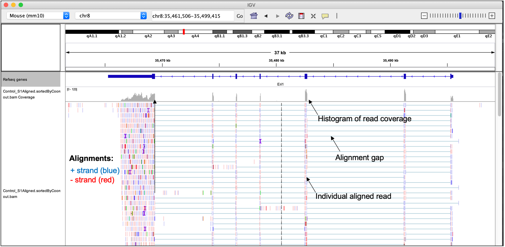
Note how the alignments pile up over the exons, which makes sense since these are RNA-seq data where only the transcriptome was sequenced. In these data we expect to see gaps that span the intronic regions. If we had not used a gapped aligner such as STAR, we would have failed to generate many of these alignments. If these data were whole genome assembly we would expect more even coverage of most locations in the genome.
IGV supports a wide-range of genomic file formats that contain data ranging from simple genomic regions, to complex alignments and signal tracks. File types supported by IGV include:
.BAM - alignments
.GTF/GFF - genomic features
.VCF - variant call format
.BED - genomic regions
* .BIGWIG - signal tracks
We will cover the utilization of some of the other file types in another lesson, but the range of file formats supported by IGV means it is able to facilitate exploration and visualization of virtually all types of genomics data generated from diverse experimental procedures, for example:
Reference genomes and annotations
The IGV server also hosts a number of reference genomes and annotations, meaning you do not need to load your own genome from a file for many model organisms. You can view the list of hosted genomes on their website here. IGV also provide access to data from large consortia-scale projects such as ENCODE, 1000 Genomes, and The Cancer Genome Atlas (TCGA).
If your genome is not included in the available set through the IGV server, you can load genomes directly into IGV using Genomes > Load Genome from file. To visualize gene/transcript annotation for your genome, a GTF/GFF file containing gene, transcript, exon and UTR coordinates for that genome can be loaded using File > Load From File. IGV will automatically separate out the sequences in different entries of the FASTA file.
How do we use IGV?
IGV can be installed and run locally on MacOS, Linux and Windows as a Java desktop application (which is how we will use it today). You should have all downloaded and installed the Desktop version of IGV for the operating system you are working on.
There is now also an IGV web-app that does not use Java and only needs an internet browser, although is generally slower than if you run the Desktop version.
Note: This is by no means a comprehensive guide to IGV. Far more functionality exists than we have discussed here, which can be explored in more detail on their website and using the IGV User Guide.
The IGV user interface (UI) and basic navigation
The layout of the IGV desktop application is relatively simple and easy to use after you familiarize yourself with the layout of the user interface.
Some of the main UI features include:
* Currently loaded genome - Shown in top left. Drop down menu allows you to toggle between pre-packaged genomes or access those available from the IGV server. Genomes can also be loaded using the File tab.
-
Current chromosome/contig - Name of the chromosome, contig, or other sequence type currently being shown. Can be changed using drop down menu.
-
Current region of chromosome/contig - Coordinates in the form chr:start-end can be copied and pasted here directly to navigate to a region. Gene names can also be used (dependent upon the loaded annotation).
-
Zoom bar - Zoom in and out of the currently shown region
-
Schematic of currently loaded chromosome or contig - A red box indicates location of the region you are currently viewing. Full width of current region is shown below, with a scale bar indicating specific coordinates. Both can be used to navigate directly.
-
Gene track - Shows gene included in currently loaded annotation (Refseq genes in example). Right click track for additional formatting options. Features included in annotation are indicated by thickness (introns, exons, UTRs). Gene orientation is shown with arrows pointing right for FWD/+, left for REV/- strand.
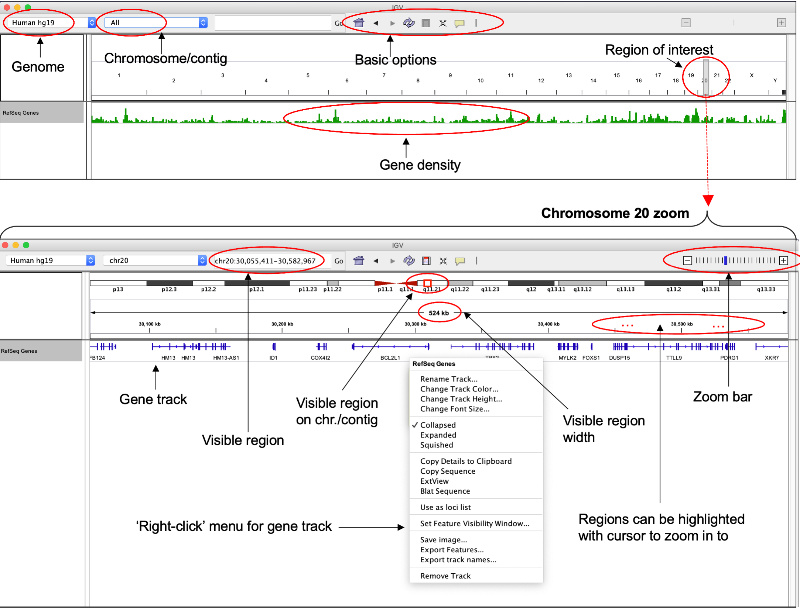
IGV allows you to customize how tracks are presented, and can be modified using Preferences found under the Viewtab. Tweaking preference can be useful in a number of ways:
Modifying the window size that IGV will start to load reads at
Changing the types of reads that are masked from viewing (e.g. supplemental reads)
Allowing soft-clipped bases to be shown
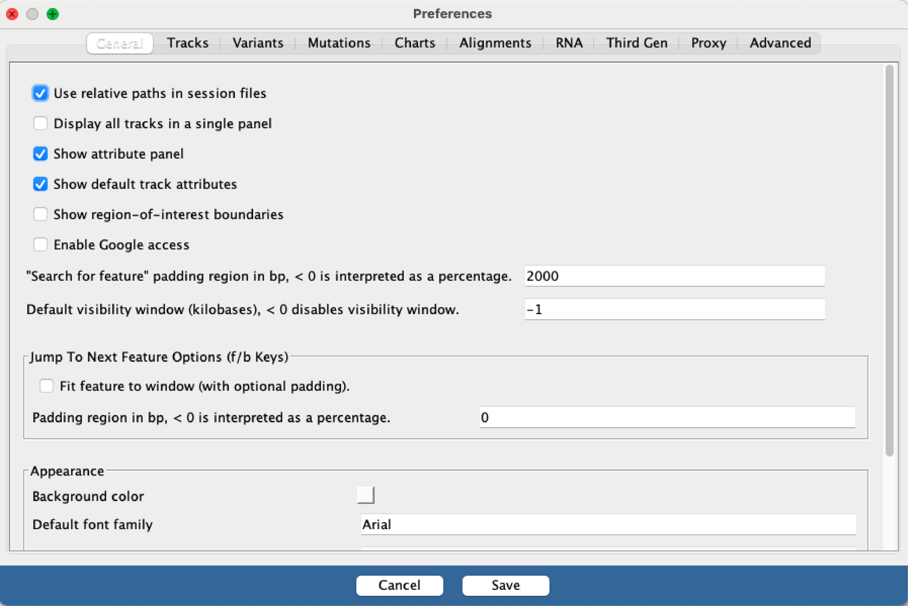
Working with BAM files (alignments) in IGV
BAM files can be loaded using the File tab and selecting Load from file. We will use an example BAM file that contains a small number of alignments on chromosome 20 (to reduce file size) of hg19, generated from low pass whole-genome sequencing of an individual in the 1000 Genomes Project
Load this file in now (located in your github repo directory Day-2/data/HG00099.chrom20-sub.low_coverage.bam.)
Important note: The index file (ending in .bai) needs to be in the same directory as the BAM file for IGV to load it. BAM files are typically very big and the index creates an efficient index, like you would find in the back of a book, that helps us navigate through the file quickly. We created an index file earlier in the lesson with the samtools index command.
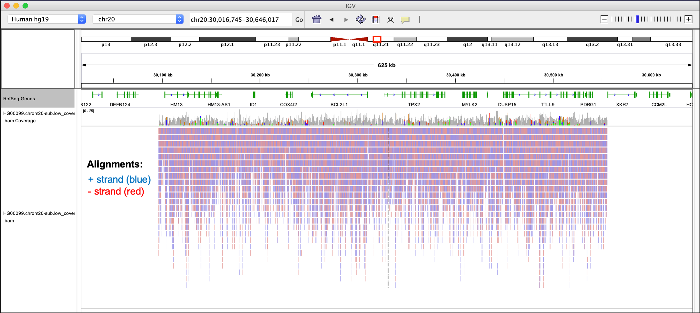
You can see a large number of reads shown in red and blue. Reads aligning to the FWD strand of the reference are shown in red. Reads aligning to the reverse strand are shown in blue.
A read coverage bar is automatically show above the alignments. The coverage track is a histogram that shows the number of reads covering each base in the visible region.
Zoom in closer to view the MYLK2 gene.
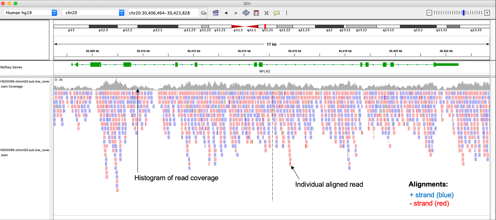
Now we have zoomed in closer, we can see more detail about the reads (e.g. direction indicated by their arrowhead) and the gene features they cover. Since this is WGS data, it makes sense for alignments to cover exons, introns, UTRs, and intergenic regions. Remember the distribution of the data is determined by the experiment.
To gain more information on specific reads, hover over a single read. Some of this information may look familiar based on our discussions of the BAM file format.
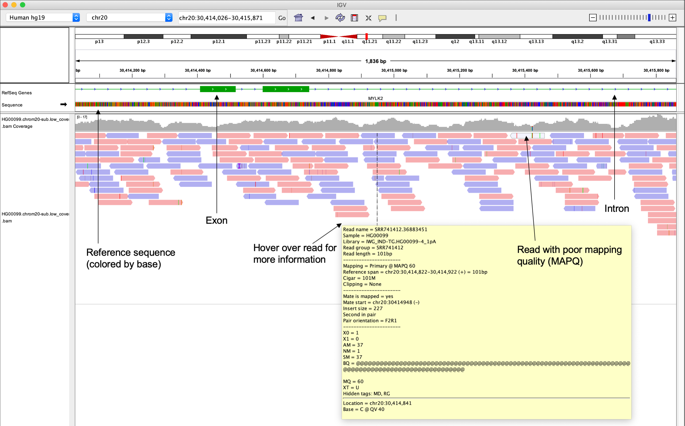
You can also see some features on specific reads are highlighted. IGV uses colors within reads to highlight features of individual bases. For example, IGV will highlight bases that are mismatched compared the reference. Such bases could represent genetic variants.
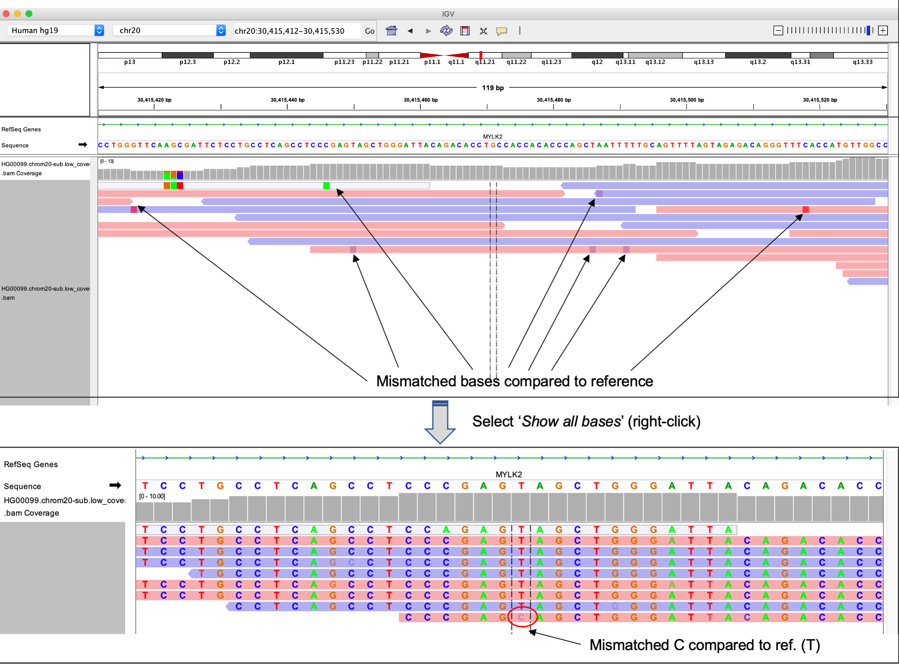
If you right click in the alignment track, you will see a number of options appear for changing how the alignments are displayed. One useful option is View reads as pairs. Provided your data are paired-end, R1 and R2 reads will be connected by a thin gray line, representing a region that exists in the genome, but was not captured by either end of the paired end sequencing, either because the fragment length was larger than the read lengths or because the read spans and intron or long deletion.
Another useful alignment viewing option available from this menu is changing how reads are colored. By default, read are colored according to the strand they are aligned to, which is useful in several contexts, for example, when working with stranded RNA-seq data, however other coloring schemes can be selected, e.g.
- by read group
- by library
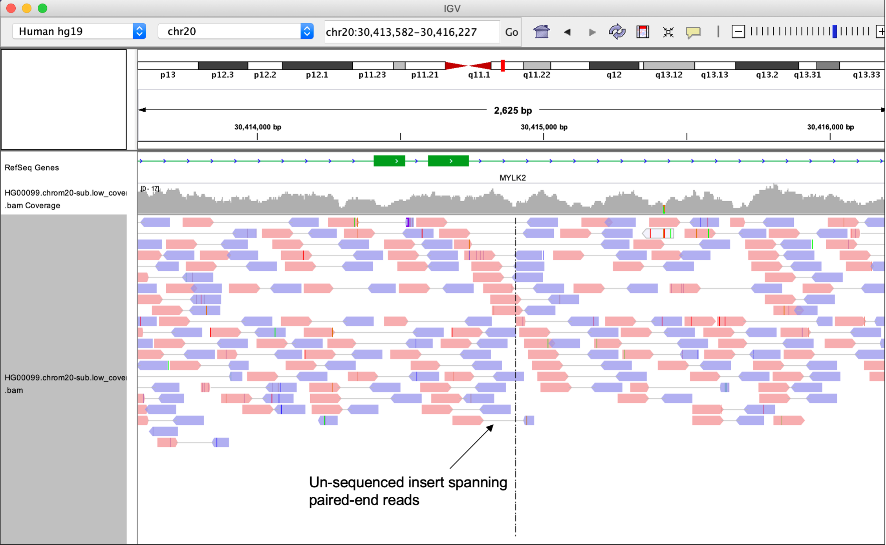
Insertions and deletions are also highlighted using a purple I (for insertions) or a horizontal black line (for deletions).
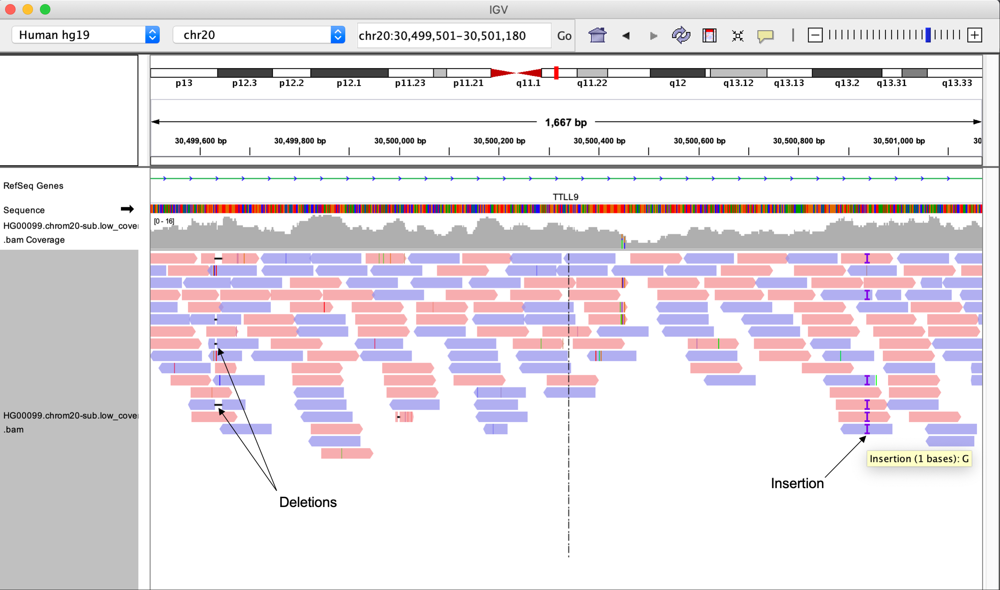
You can start to appreciate how IGV helps identify features of our data, e.g. potential variants. This information could help to inform subsequent analyses.
Note: This lesson is only designed to serve as an introduction to IGV. The complete functionality is described on in the IGV User Guide. I encourage you to visit and explore the user guide after completing this tutorial.
If you use IGV in your publications, you should at cite at least the original publication (found here).
Other genome browsers do exist and have various strengths/weaknesses. For example, the UCSC Genome Broswer, is an excellent web-based tool that allows you to perform many of the same visualizations that you would using IGV using your own data, and also provides access to a large collection of hosted datasets. The major advantage of IGV is the ease and speed with which it allows you to explore your own data, which can be slower to explore using a web-based tool.
Part 2: Read count quantification
For most downstream analyses in RNA-seq, especially differential expression, we want to know how many reads aligned to a specific feature, as this tells us about the feature's expression level, so we can compare expression between samples. Inherently, this means that we want to make these data count-based, so that we can use statistical models to compare these counts between experimental conditions of interest.
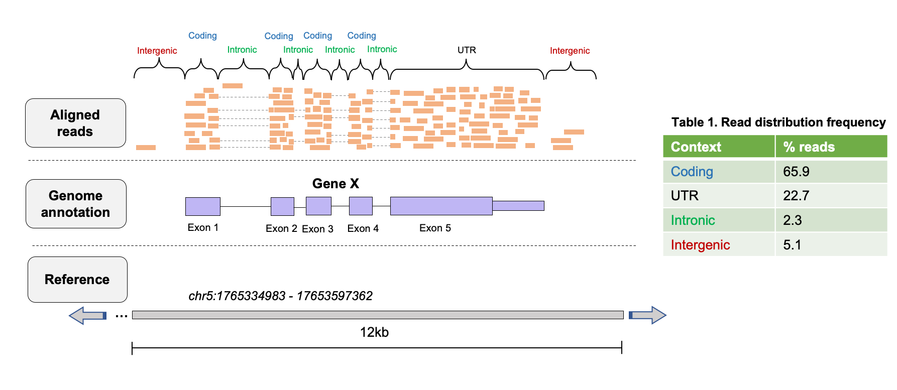
Read quantification methods generally require two inputs:
- an alignment file (.bam)
- a set of features over which to count (e.g. GTF/GFF).
Recall that a GTF/GFF file is used to store genome annotation data, therefore contains the coordinates over all of the exons that we want to count reads.
The most simplistic methods (e.g. htseq-count, featureCounts) use a specific set of rules to count the number of reads overlapping specific features. These are a good choice if your data is less complex, e.g. 3'-end data. More complex methods or read quantification such as RSEM, determine the probability that a read should be counted for a particular feature, this is helpful if you're interested in something like differences in isoform expression data.
Here we will demonstrate gene level quantification with htseq-count to quantify reads for the alignments we created in the previous lesson. Some important options in htseq-count include:
Feature type (-t):
Specifies the feature in your GTF file you want to count over (3rd column). The default is exon. However, this can be changed to any feature in your GTF file, so theoretically can be used to count any feature you have annotated.
Strandedness (-s):
Specifies if reads in your experiment come from a stranded (yes) or unstranded (no) library type. It is critical to set this correctly, as incorrect selection will result in needlessly throwing away 50% of your reads.
# go to your scratch dir
cd $FOB
# make a new directory to store your data in
mkdir counts
cd counts
# quantify reads that map to exons (default)
htseq-count \
-f bam \
-s no \
-r pos \
-t exon \
$FOB/align/SRR1039508.Aligned.sortedByCoord.out.bam \
$RESOURCE/refs/Homo_sapiens.GRCh38.97.chr20.gtf > SRR1039508.htseq-counts
Have a look at the resulting file.
# how many lines
wc -l SRR1039508.htseq-counts
# first few rows
head SRR1039508.htseq-counts
# importantly, lets check the last few rows as these contain some important info
tail -n 12 SRR1039508.htseq-counts
This process can be repeated for each sample in your dataset, and the resulting files compiled to generate a matrix of raw read counts that serve as input to downstream analysis (e.g. differential expression or binding analysis).
ls $FOB/align/*.Aligned.sortedByCoord.out.bam | while read x; do
# save the file name
sample=`echo "$x"`
# get everything in file name before "/" (to remove '$FOB/alignment/')
sample=`echo "$sample" | cut -d"/" -f6`
# get everything in file name before "." e.g. "SRR1039508"
sample=`echo "$sample" | cut -d"." -f1`
echo processing "$sample"
# quantify reads that map to exons (default)
htseq-count \
-f bam \
-s no \
-r pos \
-t exon \
$FOB/align/$sample.Aligned.sortedByCoord.out.bam \
$RESOURCE/refs/Homo_sapiens.GRCh38.97.chr20.gtf > $sample.htseq-counts;
done
Sources of variation in RNAseq counts data
In an RNAseq experiment like this one, the ultimate goal is to find out if there are genes whose expression level varies by conditions in your samples. The output from HTseq-count contains raw gene counts which cannot be compared within or between samples. This is due to many sources of variation within the counts that should be accounted for with normalization before counts are compared.
Gene length:
For comparisons within a sample it is important to normalize for gene length. If gene X is 1000bp long and gene Y is 2000bp long, we would expect that gene Y will recruit twice the reads in the dataset, purely due to the extra bp that represent the gene. If we didn't normalize for gene length and compared raw counts we might incorrectly assume that gene Y was expressed twice as much as gene X. This type of normalization is not needed for single end datasets, as reads are only mapped to the 3' end of the gene and counts will not be affected by gene length.
Library size:
For comparisons between samples it is important to normalize for library size. If sample A has 10 million reads and sample B has 30 million reads and we want to compare the expression of gene X between samples we should first normalize for sequencing depth, else we may incorrectly assume that the expression of gene X in sample B is three times higher than in sample A.
Library composition:
The presence of differentially expressed genes between samples causes the number of reads for other genes in those samples to be skewed. For example, lets assume two samples 1 & 2 and genes X, Y, & Z. Each sample has a library size of 10 million reads but gene Y is differentially expressed between the two samples, with much higher expression in sample 1. The high expression of gene Y in sample 1 leaves fewer reads available to map to genes X and Z, resulting in a low read counts in sample 1 relative to sample 2. The cause of the difference in expression levels of genes X and Z is the increased recruitment of reads to gene Y in sample 1.
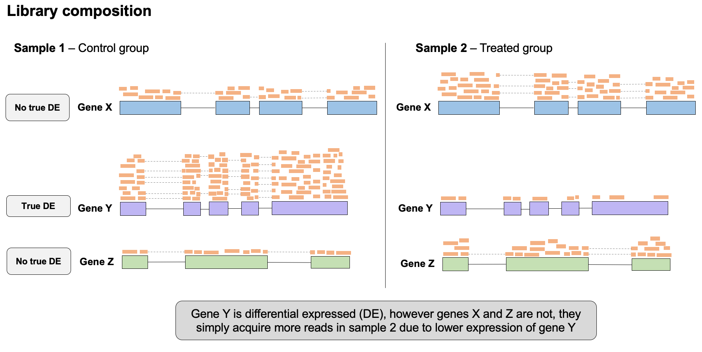
Such library composition effects must also be accounted for during normalization to avoid falsely interpreting compositional effects as true differential expression findings. If samples you wish to compare are very distinct in their gene expression profiles, such as comparing drug-treated samples vs untreated samples, compositional effects may be large, therefore effectively correcting for these effects becomes critical for appropriate interpretation.
Normalization methods
It is beyond the scope of this workshop to discuss the mathematical formulas that are used to normalize RNAseq counts data, but below is a table describing common methods for normalizing data and what source of variation each method accounts for. We cover data normalization methods in more detail in our summer workshop series RNAseq Data Analysis*.
| Method | Name | Accounts for | Appropriate comparisons |
|---|---|---|---|
| CPM | Counts per million | Depth | - Between-sample - Within experimental group |
| TPM | Transcripts per million | Depth & feature length | - Between- and within-sample - Within experimental group |
| RPKM/FPKM | Reads/fragments per kilobase of exon per million |
Depth & feature length | - Within-sample |
| RLE (DESeq2) | Median of ratios | Depth & library composition | Between sample |
| TMM (edgeR) | Trimmed mean of M-values | Depth & library composition | Between sample |
Part 3: Variant calling
Following an experiment such as Whole Genome Sequencing (WGS) or Exome Sequencing (WES) and subsequent read alignment, a common next step is variant calling. Genomic variants are locations in the sequenced samples where the sequenced reads differ from the reference genome to which they have been aligned.
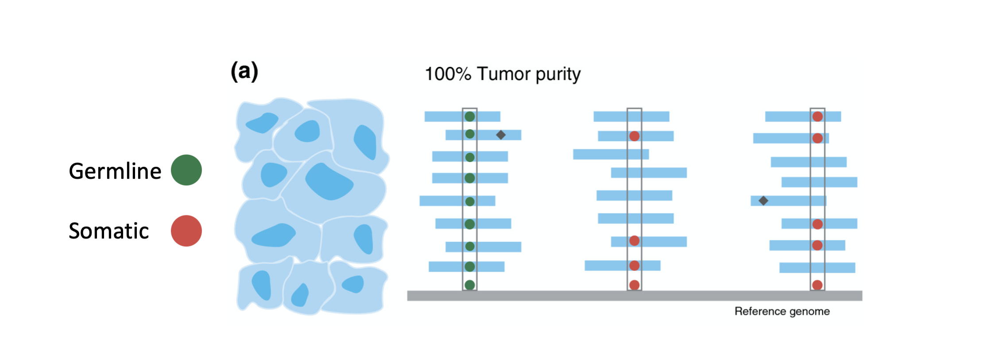
Common software for variant calling includes Genome Analysis Toolkit, Mutect, Freebayes, Varscan, and Strelka. The purpose of these softwares is to determine which variants are real, or which might be artifacts of sequencing error or alignment error, and output a score associated with that determination.
Any of these variant callers will require as input an aligned BAM file and a reference genome file. Some expected optional parameters might be a list of sites to mask (such as known repetitive sites in the genome or known germline variants in a population), the expected ploidy of the sequenced sample, or a GTF file for annotating the genome context of each variant.
Here we will demonstrate variant calling with FreeBayes a bayesian variant detector to call SNPs, indels, and structural variants on an alignment file. The simplest operation of freebayes requires a reference file in fasta format and an alignment file. Some additional options when running freebayes are:
Reference file (-f):
Specifies the fasta file to use as a reference.
Alignment file (-b):
Specifies the alignment file to use as input.
Output file (-v):
Specifies the name of the VCF output file.
Region (-r):
Specifies the region of the reference file to call variants, this argument accepts a chromosome name (chr20) or a chromosome name with positions (Chromosome20:10000-15000). You will need to make sure that the chromosome naming scheme matches with the name in the reference file (i.e. Chr20, chr20, or Chromosome20).
# go to your scratch dir
cd $FOB
# make a new directory to store your data in
mkdir vars
cd vars
#check the naming syntax of the reference file
grep ">" $RESOURCE/refs/Homo_sapiens.GRCh38.dna.primary_assembly.chr20.fa
# call variants on chromosome 20
freebayes \
-f $RESOURCE/refs/Homo_sapiens.GRCh38.dna.primary_assembly.chr20.fa \
-r 20 \
-v $FOB/vars/SRR1039508.vcf \
-b $FOB/align/SRR1039508.Aligned.sortedByCoord.out.bam
This command will fail with an error indicating terminate called after throwing an instance of 'std::out_of_range'. This is a known issue related to splice junctions in either the CIGAR string or the reference sequence (you can read about this error here). This issue exists in freebayes v0.9.20 but has been ammended in later releases of this software. Since we know the issue is rectified in later versions of this software one solution would be to update the version in our conda environment, however there are incompatibilities with the version of python as well as some python dependencies used by other software in this environment. This is an excellent demonstration of why multiple software environments are helpful. Let's exit our current conda environment and activate another one with the updated version of freebayes v1.9.2.
# check the version of freebayes available
freebayes --version
# exit current conda environment
conda deactivate
# activate new environment
conda activate /dartfs/rc/nosnapshots/G/GMBSR_refs/envs/variant_calling
# check the version of freebayes avaialbe
freebayes --version
# call variants on chromosome 20
freebayes \
-f $RESOURCE/refs/Homo_sapiens.GRCh38.dna.primary_assembly.chr20.fa \
-r 20 \
-v $FOB/vars/SRR1039508.vcf \
-b $FOB/align/SRR1039508.Aligned.sortedByCoord.out.bam
The standard file format output by variant callers is Variant Call Format, or VCF, which is a tabular format containing the genomic location of each variant and the level of evidence for it in each sample, as well as a header describing the construction of the file.
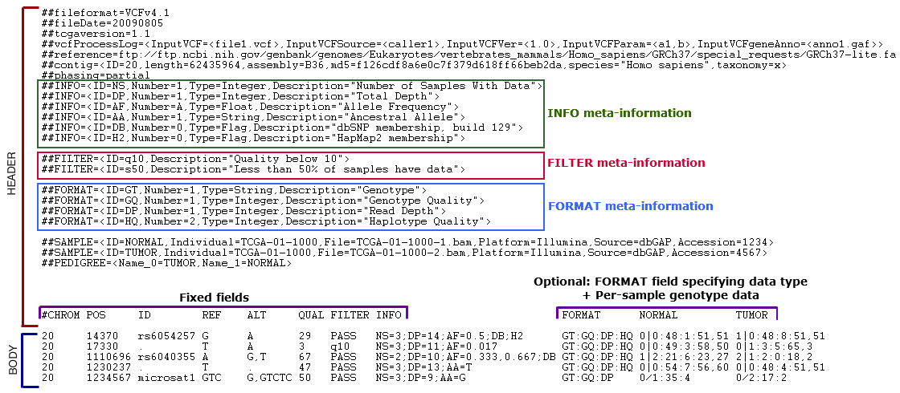
Have a look at the VCF file.
# how many lines
wc -l SRR1039508.vcf
# take a look at the header lines - lines all start with #
grep "^#" SRR1039508.vcf
# take a look at some of the variant calls
grep -v "^#" SRR1039508.vcf|head -n3
Of note are two fields of information that are particularly useful:
AF
indicates the alternate allele frequency in the dataset and can take on a value of 0, 0.5, or 1. The
DP
indicates the read depth at that site
You will notice the first three variants that we looked at all have an alternate allele frequency of 1, indicating full penetrance of the SNP, however the depth at each of these sites is between 2-3 reads. This isn't a SNP I would be particularly confident about reporting. Let's look for a SNP that we might have some confidence in by pulling any variant that has an alternate allele frequency of 1 and looking for a depth of more than 100 reads at that site.
# count the number of variants with a frequency of 1
grep -v "^#" SRR1039508.vcf|grep ";AF=1;"|wc -l
# pull out the depth field and count how many instances of each depth there are, sort by least frequent depth to most frequent depth
grep -v "^#" SRR1039508.vcf|grep ";AF=1;"|cut -d ";" -f8|sort |uniq -c|sort -n
You can see that in this dataset most of the SNPs called with and alternate allele frequency of 1 are in sites with very low coverage, though there are some site with hundreds of reads that represent the SNP call. Lets pull out the position of one of those SNPs on chromosome 20 and investigate the SNP further in IGV.
#pull out the position of the SNP with AF=1 and DP=425
grep -v "^#" SRR1039508.vcf|grep ";AF=1;"|grep "DP=425"|cut -f2
Using filezilla download the VCF file from your vars/ directory as well as the BAM file and indexed BAM file from your aligned/ directory to your local machine and load them both into the IGV.
Load the data into IGV using the File menu and selecting Load from File..., this will bring up the finder window and you can navigate to the directory that contains your data. You MUST have the indexed BAM file (ends in .bai) in the same directory as the BAM file for IGV to load the file. Load both the BAM file and the VCF file, once your data are in IGV you should see something like this (IGV version 2.15.2 default settings).
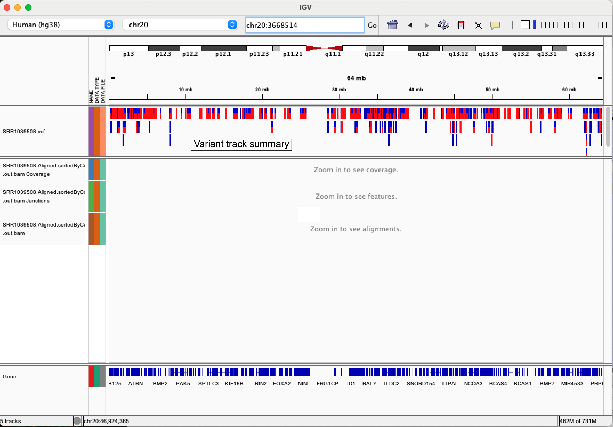
Next we need to navigate to the position of the alternate allele we want to verify, recall this SNP was at position 3668514. Type chr20:3668514 into the position window and hit enter. This will automatically center the position of interest on your screen. You can see that the alternate allele (G) is present in the ADDAM33 gene and all but one read at this position carry the SNP, thus it is very unlikely that this SNP is due to a sequencing error.
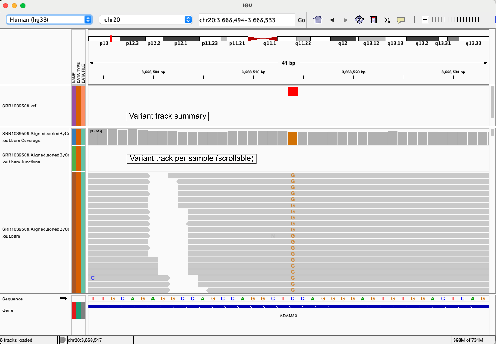
Now lets have a look at one of the lower confidence reads we saw at the top of the VCF file, position 274210. You can see that this region represents an intron in the C20orf96 gene, and that though all reads carry the SNP there are only 2 reads mapping here. This probably doesn't represent a SNP that is affecting the genotype of the cell.
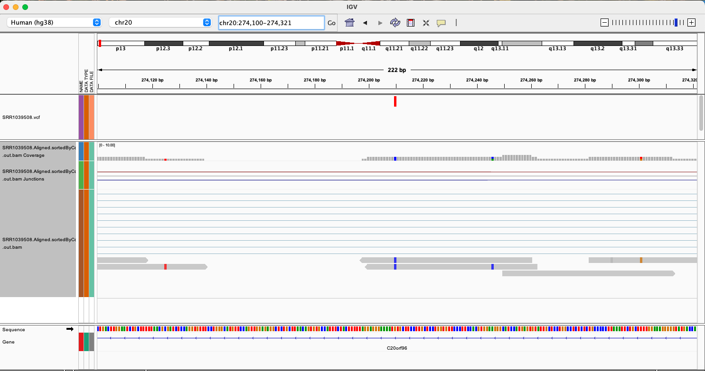
Other canonical applications of VCF data might include:
- Confirming all ALT reads are not strand-specific
- Mapping qualities and base qualities are consistent across reads representing the REF & ALT allele
- Variants are not called only at ends of reads
It isn't exactly surprising that there aren't many SNPs with high frequency and high coverage, these RNAseq data are from untreated airway smooth muscle donor cell lines. However the same analysis procedure applied to a cancer data or population genetics might be quite informative. The example VCF file (Day-2/data/1000G.chr20.sub.vcf.gz) contains all called variants across subjects in the 1000 Genomes project. All variants for chromosome 20 are summarized at the top of the variant track. This VCF file also includes subject-specific genotypes, represented here using the colors indicated in the figure below.
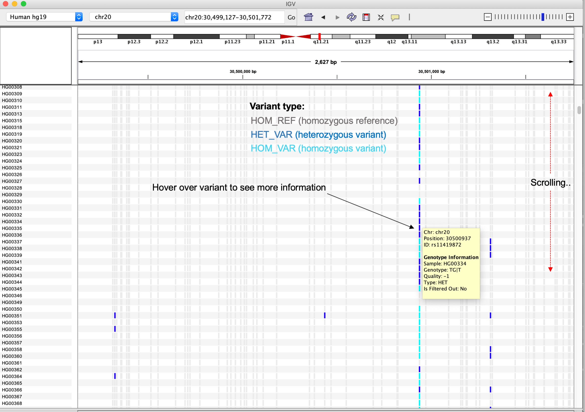
Once variant calling is performed and a confident set of variants is determined for each sample, some downstream analyses could include:
- comparing variants found in tumor vs. normal pairs
- variants found in resistant vs. non-resistant cell lines
- statistical analysis of the presence of variants in any case-control disease populations.
Breakout Room activities
-
Look at one of your alignments in the IGV, make sure to load the correct version of the genome for this annotation (hg38). Remember these data only have reads mapped to chromosome 20.
-
What happens if you load the older version of the human genome (hg19)? Does the distribution of the data make sense? Why?
-
Build a code loop for running variant calling on all 4 samples using the following framework
ls $FOB/align/*.Aligned.sortedByCoord.out.bam | while read x; do
# save the file name
sample=`echo "$x"`
# get everything in file name before "/" (to remove '$FOB/align/')
sample=`echo "$sample" | cut -d"/" -f6`
# get everything in file name before "." e.g. "SRR1039508"
sample=`echo "$sample" | cut -d"." -f1`
echo processing "$sample"
# call variants on chromosome 20
# remember to add flags for the reference, input BAM file, and output VCF file
# use the freebayes --help command to remind you what the flags each do
;
done
- Take a look at the VCF file for DEX treated sample SRR1039509. Are there more SNPs than in sample SRR1039508 (untreated)? Would you expect there to be?
Intro to NGS Data Analysis IV
Working with NGS data part IV
Introduction
Instead of sequencing all available DNA or RNA, we sometimes intentionally isolate specific subsets of DNA/RNA for sequencing analysis. For example, ChIP-seq is used to 'pull-down' the DNA associated with a specific DNA binding protein, allowing us to identify transcription factor binding sites, for example. Alternatively, ATAC-seq is used to isolate only the accessible regions of DNA, enabling us to identify the landscape of functionally active genomic regions in a sample.
Such methods also generate read alignments, however using these for read quantification or variant calling won't tell us which regions of the genome were isolated in the experiment. Instead, we perform an analytical procedure called peak calling, where we systematically scan the genome to agnostically identify regions containing read pile-ups that we call peaks. These peaks represent the regions of DNA/RNA isolated in the experiment.
Learning Objectives:
- Understand the basic principles of peak calling
- Familiarize yourself with the BED and BigWig file formats for storing genomics data
- Learn how to visualize peak calling results in IGV with the BED and BigWig file formats
Peak calling
As introduced above, peak calling algorithms use the aligned reads to scan through a reference genome and identify regions that contain large pile-ups of aligned reads. The regions where these pile-ups exist represent the regions of DNA that were isolated in your experiment. For example, in a ChIP-seq experiment, an antibody is used to obtain the DNA bound by a specific protein. Once this DNA is sequenced and aligned to a reference genome, the peak calling algorithm with reveal the locations of all DNA isolated in the experiment. The resulting peak regions can be used for a range of downstream analysis such as motif finding, gene ontology analysis, and unsupervised clustering.
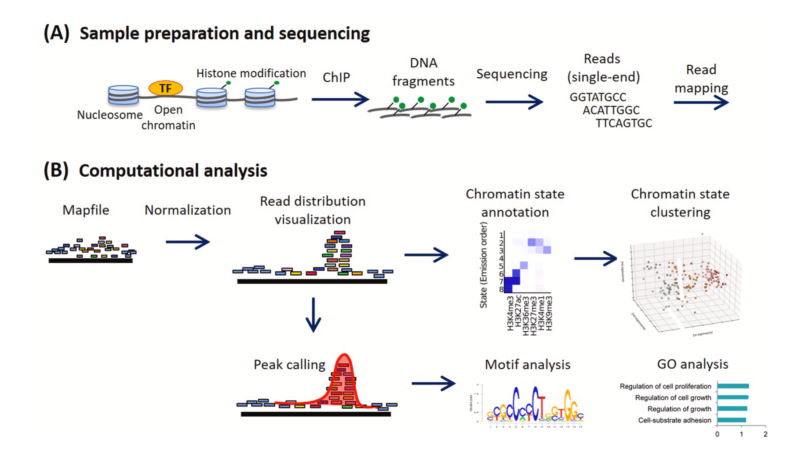
Adapted from Nakato & Sakata, Methods, 2020
In the below example of a ChIP-seq dataset, you can see all the alignments to specific region of chr11 in the mouse genome (reference mm10), as well as the peak calls identified by peak called MACS2. You can clearly see that the pileups in read density correlate with the called peak regions.
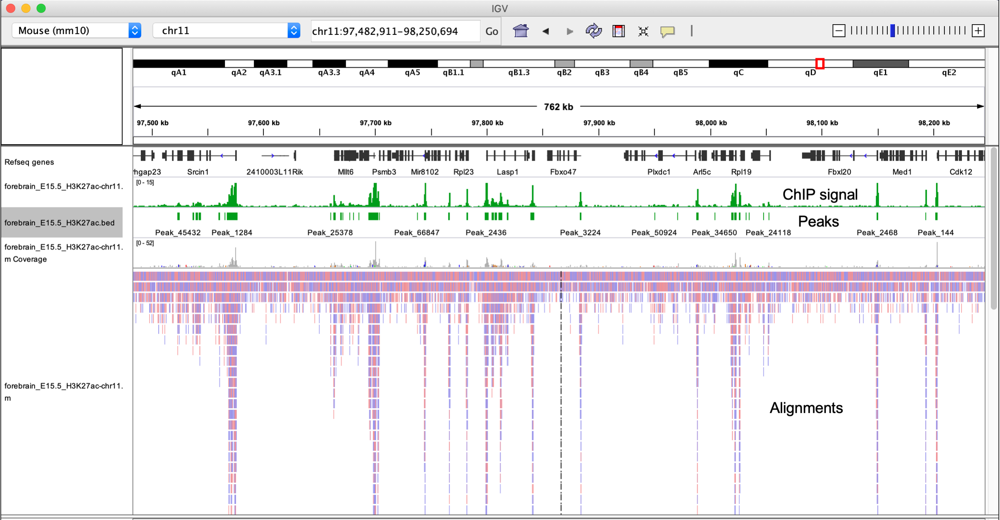
Alignments generated after mapping short reads from a ChIP-seq experiment to a reference genome generally show asymmetric distribution of reads on the +/- strand immediately around a binding site. By shifting these reads toward the middle, or extending them to the expected fragment length, we can generate a signal profile that is compared to the background signal from the control DNA sample using statistical models, ultimately assigning a probability value (P-value) to each peak.
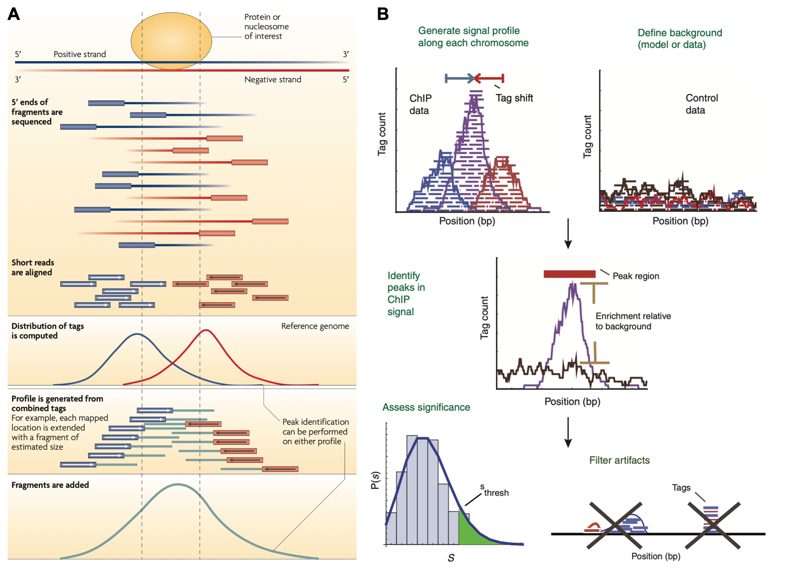
Part A has been adapted from Park, Nature Rev. Gen., 2009. Part B has been adapted from Pepke et al, Nature Methods, 2009.
While peak calling is typically associated with ChIP-seq, it is utilized in a growing number of genomic analysis workflows, especially in more recent years as the number of technologies being designed to profile various genomic features grows rapidly.
Below is an example a shell command line usage that you could use to call peaks with MACS2.
Do not run this is only an example
macs2 callpeak \
-t sample-1-chip.bam \
-c sample-1-input.bam \
-f BAM \
-g 1.3e+8 \
--outdir peaks
tdenotes the file containing enriched sequence tags/alignmentscdenotes the file containing control alignments, where no enrichment was performedfdescribes the file type of the inputsgis the total size of the genome--outdirthe file path you want results to be written to
The peaks generated by MACS2 and other peak callers are stored using the BED (Browser Extensible Data) file format. BED files are text files used to store coordinates of genomic regions, and can be visualized directly in genome browsers such as UCSC and IGV. Three fields (columns) are required in BED files:
- chrom
- chromStart
- chromEnd
Nine additional optional fields can be provided to include additional information in a bed file. Other 'flavors' of BED files exist, that utilize several of the standard BED file format fields, as well as additional custom fields. .narrowpeak files are an example, and are referred to as a BED6+4 file format, as they use the first six columns of standard BED files with an additional 4 custom columns.
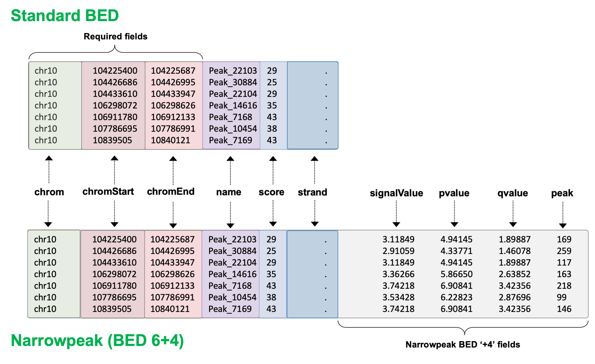
The UCSC website is an excellent resource for learning more about BED, narrowpeak, and other genomics file formats.
Lets briefly explore a BED file on the command line. We will use heart_E15.5_H3K9ac.bed located in Bioinformatics_workshop/Day-2/data/ :
# examine the head and tail of the file
head -n 10 heart_E15.5_H3K9ac.bed
tail -n 10 heart_E15.5_H3K9ac.bed
# count number of regions in the file
wc -l heart_E15.5_H3K9ac.bed
Note: The settings and options used to perform peak calling appropriately are dependent on the data you have (e.g. ChIP-seq, ATAC-seq, etc.) and the type of peak you are hoping to detect. TFs usually form narrow punctuate peaks but other marks, such as histone marks, typically form broader peaks, and can require different settings to accurately detect.
After a set of peak regions have been defined, read quantification can be performed over these regions, since these count data can be used as input to a differential binding analysis (ChIP-seq) or a differential accessibility analysis (ATAC-seq), to identify peaks unique to an experimental condition.
Visualizing signal of enriched sequence tags (alignments)
It is often useful to visualize extent of the signal in identified peak regions, to gain an idea of how enriched above background the signal in those regions was.
Visualization of signal track data is usually achieved by converting alignment files (.BAM format) into a bigWig file, an indexed binary file format used to store dense continuous data (i.e. signal).
bigWig files can be constructed from the wiggle (Wig) or bedGraph file formats, both of which are also used to store dense continuous data. bigWig, Wig, and bedGraph files formats are all described in more detail on the UCSC website.
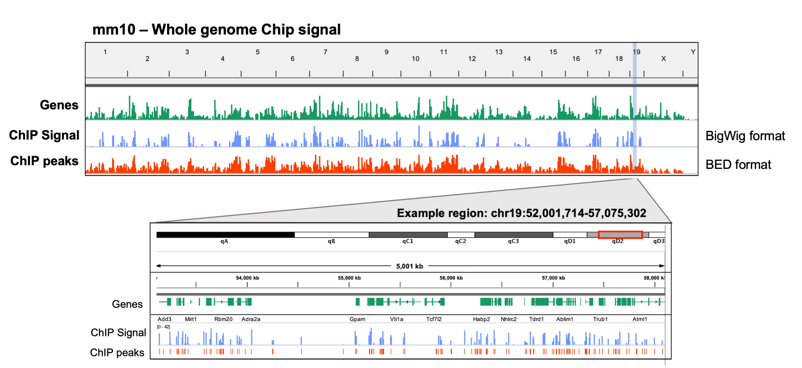
For the purposes of this workshop, we only need understand the idea behind of bigwig files and what they are used for. We hope to address their generation and use in more detail in future workshops.
Bigwig files can be used to evaluate signal across many genomic loci simultaneously. A common task is to plot signal directly upstream and downstream of called peaks. Consider the example below:
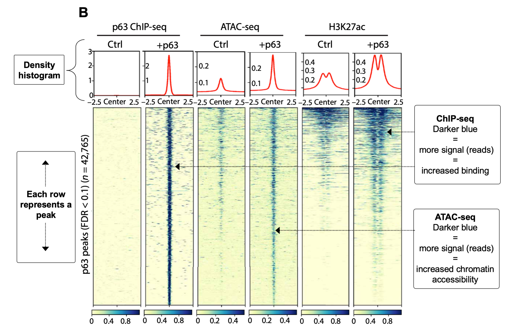
Adapted from Figure 1 of Lin-Shiao et al, 2019, Science Advances
Visualizing signal tracks and genomic regions with IGV
IGV also allows us to visualize a number of other genomic file types beyond BAM and VCF files. Very often in genomics experiments, we are interested in identifying regions of the genome that demonstrate increased signal compared to background. For example, DNA regions immunoprecipitated with a transcription-factor specific antibody in a ChIP-seq experiment.
In such experiments, we are usually interested in which regions show increased signal, which we call peaks and often store the genomic coordinates for these peaks in BED format.
We are also often in interested in how much signal these regions show in comparison to their surrounding regions, and commonly represent these data using the BigWig file format, often referred to as a signal track.
|:--:|
Lets read in some example ChIP-seq data (as shown in Figure 11) to demonstrate how you might go about exploring these types of data. We will use data from a recently published study of the dynamic regulatory landscape in the developing mouse (Gorkin et al, 2020).
In this study, the authors generate an atlas of the dynamic chromatin landscape at various time points during mouse embryonic development, conducting over 1100 ChIP-seq experiments and 132 ATAC-seq experiments spanning 72 stages of development across various tissues.
Figure 1A-B from Gorkin et al, 2020, Nature.
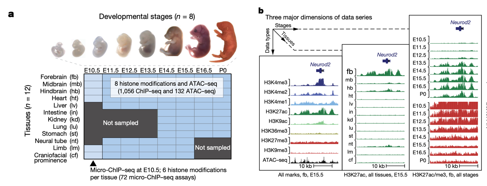
In particular, we will use the ChIP-seq data generated in immunoprecipitation experiments for several histone modifications, whose presence and absence can be used to infer the functional state of chromatin at specific loci (e.g. active transcription, enhancers, heterochromatin). These data have been downloaded and made available in this github repo, in: Bioinformatics_workshop/Day-2/data/.
Specifically, we will use ChIP-seq data for two histone modifications that are known to represent transcriptionally active chromatin regions:
* H3K27ac - Acetylation of lysine 27 of histone 3
* H3K9ac - Acetylation of lysine 9 of histone 3
Since this experiment uses an alignment generated against mouse reference mm10, we need to switch the genome selected in IGV before we load in any data. Then, load in the following files:
* forebrain_E15.5_H3K27ac-chr11.bw - ChIP signal
* forebrain_E15.5_H3K27ac.bed - Peak coordinates
* forebrain_E15.5_H3K27ac-chr11.bam - Read alignments
Peak regions for the BED file track clearly line up with the ChIP-signal track (.BigWig), and these regions also show high read densities, suggesting signal over the background level (as shown in Figure 11).
However, commonly in a ChIP-seq analysis, we are interested in comparing how TF binding sites or histone modifications change between samples. Let's load in some additional data so that we can compare chromatin states in the developing mouse forebrain to heart tissues. Start with the BED files:
* forebrain_E15.5_H3K27ac.bed
* forebrain_E15.5_H3K9ac.bed
* heart_E15.5_H3K27ac.bed
* heart_E15.5_H3K9ac.bed
Peaks called for each histone mark in either forebrain or heart tissue are now visible. Use the right click options to set the color of these tracks to aid in visualization. Can you see any regions where the chromatin marks differ between the groups?
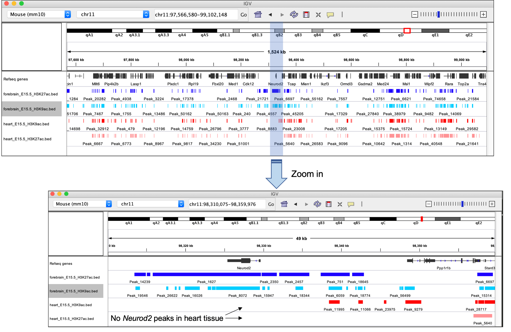
|:--:|
Now use the search bar to navigate to the Neurod2 gene. Clearly, the presence of peaks in forebrain tissues and the absence in heart suggests this region is only transcriptionally active in the developing forebrain.
However, without any information on the relative ChIP signal at these regions, we don't have any idea of how transcriptionally active this region is compared to others. For this, we need to load in the signal track data in BigWig format. Load these in from the same directory now.
Bigwig files to load:
* forebrain_E15.5_H3K27ac.bw
* forebrain_E15.5_H3K9ac.bw
* heart_E15.5_H3K27ac.bw
* heart_E15.5_H3K9ac.bw
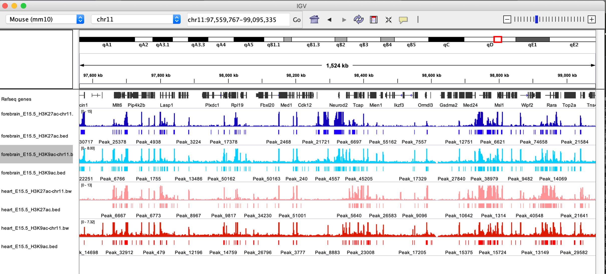
|:--:|
Note the differences in the scales shown at the top left of each signal track. To fairly compare differences between samples, we need to use the same scale. Highlight the signal tracks and right click to select the Autoscale option.
Setting signal tracks to be on the same scale is very important when comparing between them. It is also important to know how the data have been normalized, since values that have been normalized in different ways aren't comparable on the same scale anyway (make sure you know what you are looking at).
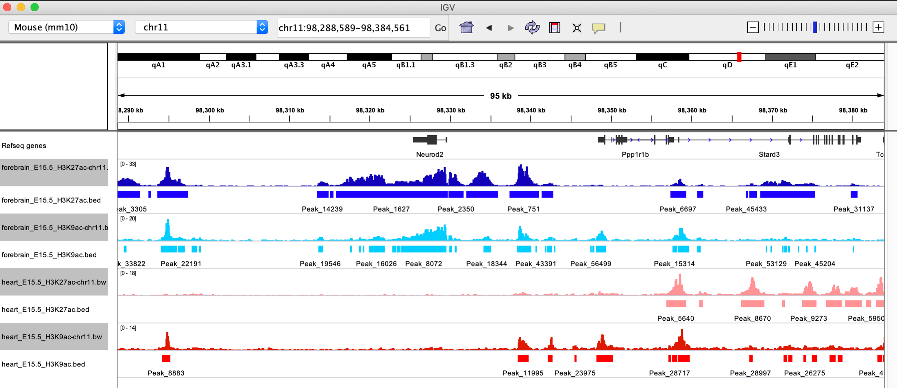
|:--:|
IGV can also be used to compare multiple regions simultaneously using the split view functionality. There are a number of ways the split view can be activated, but perhaps the easiest is using the search bar.
Enter the following into the search bar to activate split view:
Neurod2 Stat5b Top2a
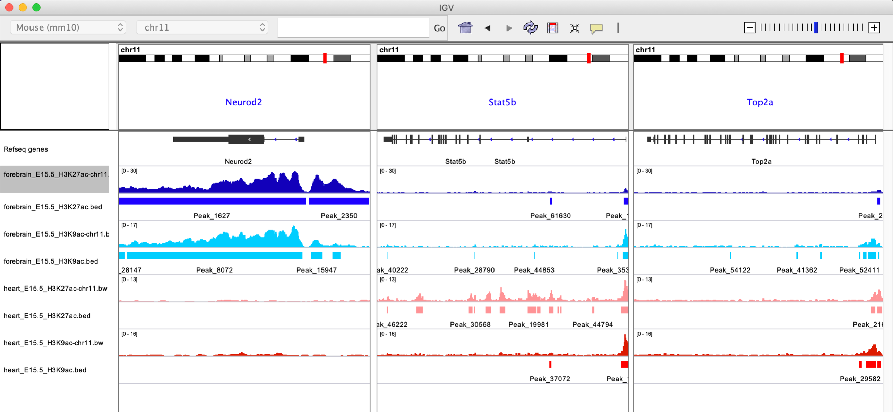
|:--:|
Split view has a number of useful applications, however it is especially useful when reviewing alignment evidence for complex structural variants or translocations (although we won't cover that today).
Saving and restoring sessions in IGV
We did a lot of work loading in all these data and setting everything up just how we want it. It would be a shame to have to do this every time we want to revisit these data. Fortunately, IGV allows you to save sessions, allowing you to re-load everything just as you had it before.
Try saving the current session using Save session... under the File tab.
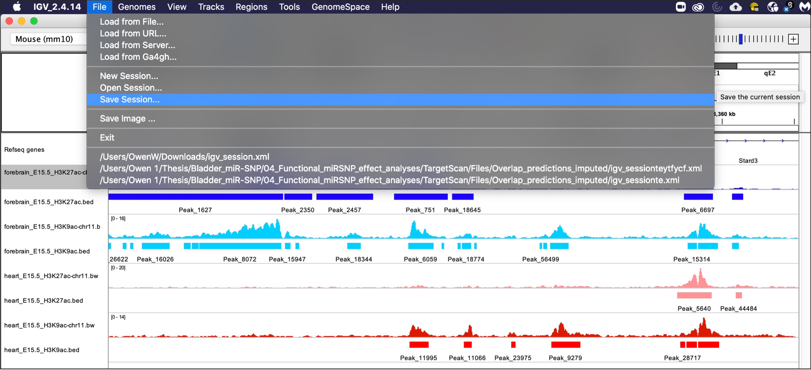
|:--:|
Optional: Trimming
Read pre-processing & trimming
An additional QC step one might perform on raw FASTQ data is to pre-process or trim the sequences to remove sequences that we are not interested in, or were not called confidently by the sequencer.
This step is optional in most analysis, although should be based on an empirical decision that leverages the QC assessment of raw FASTQs using a quality report like the one we just generated with FASTQC/MultiQC. For example, if we see we have a large number of adapter sequences in our data, or a high proportion of low-quality bases near our read ends, we may wish to trim our raw reads. Otherwise, we could skip this step in the analysis.
Notably, some read mappers account for mismatches or low quality bases at the end of reads in a process called soft-clipping, where these bases are masked from being included in the alignment, but are technically still part of the sequence read in the FASTQ. If you are using an aligner that performs soft-clipping, you could consider omitting read trimming of FASTQ files.
Motivation for read trimming: Downstream steps are more efficient
Several algorithms exist for trimming reads in FASTQ format. Generally, these algorithms work by looking for matches to the sequence you specify at the 5' and 3' end of a read. You can specify the minimum number of bases you would like to be considered a match, as the algorithm will trim partial matches to the sequence you specify. Examples of sequences you might want to remove include:
- adapter sequences
- polyA tails
- low quality bases
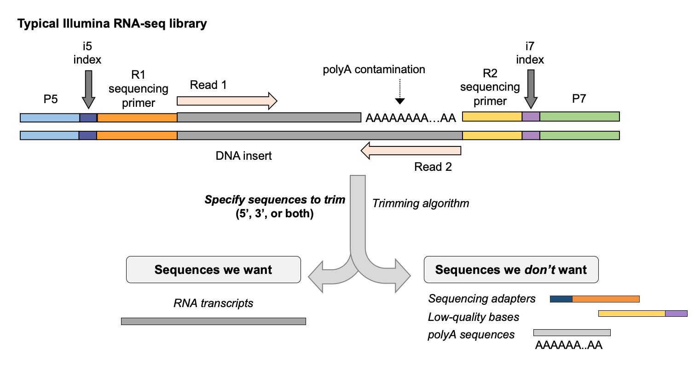
Read trimming with cutadapt
Cutadapt is a useful tool for cleaning up sequencing reads, allows for multiple adapters to be specified simultaneously, and has an array of options that can be tweaked to control its behavior.
Basic usage of cutadapt:
cutadapt -a ADAPTER -g ADAPT2 [options] -o output.fastq input.fastq.gz
aspecifies an adapter to trim from the 3' end of read 1gspecifies an adapter to trim from the 5' end of read 1ospecifies name of out file
For paired-end reads:
cutadapt -a ADAPT1 -g ADAPT2 [options] -o out1.fastq.gz -p out2.fastq input1.fastq.gz input2.fastq.gz
Capital letters are used to specify adapters for read 2.
If we wanted to trim polyA sequences, as we often do in RNA-seq, and save the output to a report called cutadapt.logout, we could use:
cutadapt -a 'A{76}' -o out.trimmed.fastq.gz input.fastq.gz > cutadapt.logout;
-a A{76} tells cutadapt to search for stretches of A bases at the end of reads, with a maximum length of the read length (76bp).
Since the polyA and adapter sequence contamination is relatively low for this dataset, we won't trim any specific sequences, although we will perform basic quality and length processing of the raw reads. Lets make a new directory and do this for do this for one sample.
mkdir -p $FOB/trim
cd $FOB/trim
cutadapt \
-o SRR1039508_1.trim.chr20.fastq.gz \
-p SRR1039508_2.trim.chr20.fastq.gz \
$FOB/raw/SRR1039508_1.chr20.fastq.gz $FOB/raw/SRR1039508_2.chr20.fastq.gz \
-m 1 -q 20 -j 4 > SRR1039508.cutadapt.report
-mremoves reads that are smaller than the minimum threshold-qquality threshold for trimming bases-jnumber of cores/threads to use
:memo: Note: The trailing slashes
\at the end of each line in thecutadaptcommand enable us to separate each flag with newlines for easier human readability, these can be removed and instead the command could be written in one single line, however for detailed commands this can be unweildy. For example without the trailing slashes to separate each flag the command above would look like this:cutadapt -o SRR1039508_1.trim.chr20.fastq.gz -p SRR1039508_2.trim.chr20.fastq.gz $FOB/raw/SRR1039508_1.chr20.fastq.gz $FOB/raw/SRR1039508_2.chr20.fastq.gz -m 1 -q 20 -j 4 > SRR1039508.cutadapt.report
You should now have a trimmed FASTQ file in this directory that can be used for an alignment. Lets look at the report that cutadapt generated.
cat SRR1039508.cutadapt.report
Now lets run this on multiple samples:
ls $FOB/raw/*.chr20.fastq.gz | while read x; do \
# save the file name
sample=`echo "$x"`
# get everything in file name after "/" and before "_" e.g. "SRR1039508"
sample=`echo "$sample" | cut -d"/" -f3 | cut -d"_" -f1`
echo processing "$sample"
# run cutadapt for each sample
cutadapt \
-o ${sample}_1.trim.chr20.fastq.gz \
-p ${sample}_2.trim.chr20.fastq.gz \
$FOB/raw/${sample}_1.chr20.fastq.gz $FOB/raw/${sample}_2.chr20.fastq.gz \
-m 1 -q 20 -j 4 > $sample.cutadapt.report
done
You should now have trimmed FASTQ files in this directory that we will use for the alignment. You should also be able to see and print each of your reports from cutadapt.
ls *cutadapt.report | while read x; do
echo -e "\n\n"
echo Printing $x
echo -e "\n"
cat $x
done
Additional note: For data generated at Dartmouth, since much of the data in the Genomics core is generated using an Illumina NextSeq 500, we also often use the --nextseq-trim option in cutadapt.
This option works in a similar way to the quality threshold option -q BUT ignores Q-scores for stretches of G bases, as some Illumina instruments, such as the NextSeq, generate strings of Gs when the sequencer 'falls off' the end of a fragment and dark cycles occur, and therefore provides more appropriate quality trimming for data generated on these instruments.
Optional: Visualizing Alignments with IGV
Visualizing alignments with IGV
Alignments can be visualized using genome browser software such as the Integrative Genomics Viewer (IGV), allowing you to interactively explore alignments to a reference genome and how they overlap with genome annotation (e.g. gene models). This is an extremely useful way to visualize NGS data, and also allows you to review the evidence supporting downstream analysis results generated from aligned reads (e.g. variant calls).
The figure below shows some example alignments for paired-end mouse RNA-seq data visualized using the IGV.
Note how the alignments pile up over the exons, which makes sense since these are RNA-seq data where only the transcriptome was sequenced. In these data we expect to see gaps that span the intronic regions. If we had not used a gapped aligner such as STAR, we would have failed to generate many of these alignments. If these data were whole genome assembly we would expect more even coverage of most locations in the genome.
IGV supports a wide-range of genomic file formats that contain data ranging from simple genomic regions, to complex alignments and signal tracks. File types supported by IGV include:
.BAM - alignments
.GTF/GFF - genomic features
.VCF - variant call format
.BED - genomic regions
* .BIGWIG - signal tracks
We will cover the utilization of some of the other file types in another lesson, but the range of file formats supported by IGV means it is able to facilitate exploration and visualization of virtually all types of genomics data generated from diverse experimental procedures, for example:
Reference genomes and annotations
The IGV server also hosts a number of reference genomes and annotations, meaning you do not need to load your own genome from a file for many model organisms. You can view the list of hosted genomes on their website here. IGV also provide access to data from large consortia-scale projects such as ENCODE, 1000 Genomes, and The Cancer Genome Atlas (TCGA).
If your genome is not included in the available set through the IGV server, you can load genomes directly into IGV using Genomes > Load Genome from file. To visualize gene/transcript annotation for your genome, a GTF/GFF file containing gene, transcript, exon and UTR coordinates for that genome can be loaded using File > Load From File. IGV will automatically separate out the sequences in different entries of the FASTA file.
How do we use IGV?
IGV can be installed and run locally on MacOS, Linux and Windows as a Java desktop application (which is how we will use it today). You should have all downloaded and installed the Desktop version of IGV for the operating system you are working on.
There is now also an IGV web-app that does not use Java and only needs an internet browser, although is generally slower than if you run the Desktop version.
Note: This is by no means a comprehensive guide to IGV. Far more functionality exists than we have discussed here, which can be explored in more detail on their website and using the IGV User Guide.
The IGV user interface (UI) and basic navigation
The layout of the IGV desktop application is relatively simple and easy to use after you familiarize yourself with the layout of the user interface.
Some of the main UI features include:
* Currently loaded genome - Shown in top left. Drop down menu allows you to toggle between pre-packaged genomes or access those available from the IGV server. Genomes can also be loaded using the File tab.
-
Current chromosome/contig - Name of the chromosome, contig, or other sequence type currently being shown. Can be changed using drop down menu.
-
Current region of chromosome/contig - Coordinates in the form chr:start-end can be copied and pasted here directly to navigate to a region. Gene names can also be used (dependent upon the loaded annotation).
-
Zoom bar - Zoom in and out of the currently shown region
-
Schematic of currently loaded chromosome or contig - A red box indicates location of the region you are currently viewing. Full width of current region is shown below, with a scale bar indicating specific coordinates. Both can be used to navigate directly.
-
Gene track - Shows gene included in currently loaded annotation (Refseq genes in example). Right click track for additional formatting options. Features included in annotation are indicated by thickness (introns, exons, UTRs). Gene orientation is shown with arrows pointing right for FWD/+, left for REV/- strand.
IGV allows you to customize how tracks are presented, and can be modified using Preferences found under the Viewtab. Tweaking preference can be useful in a number of ways:
Modifying the window size that IGV will start to load reads at
Changing the types of reads that are masked from viewing (e.g. supplemental reads)
Allowing soft-clipped bases to be shown
Working with BAM files (alignments) in IGV
BAM files can be loaded using the File tab and selecting Load from file. We will use an example BAM file that contains a small number of alignments on chromosome 20 (to reduce file size) of hg19, generated from low pass whole-genome sequencing of an individual in the 1000 Genomes Project
Load this file in now (located in your github repo directory Day-2/data/HG00099.chrom20-sub.low_coverage.bam.)
Important note: The index file (ending in .bai) needs to be in the same directory as the BAM file for IGV to load it. BAM files are typically very big and the index creates an efficient index, like you would find in the back of a book, that helps us navigate through the file quickly. We created an index file earlier in the lesson with the samtools index command.
You can see a large number of reads shown in red and blue. Reads aligning to the FWD strand of the reference are shown in red. Reads aligning to the reverse strand are shown in blue.
A read coverage bar is automatically show above the alignments. The coverage track is a histogram that shows the number of reads covering each base in the visible region.
Zoom in closer to view the MYLK2 gene.
Now we have zoomed in closer, we can see more detail about the reads (e.g. direction indicated by their arrowhead) and the gene features they cover. Since this is WGS data, it makes sense for alignments to cover exons, introns, UTRs, and intergenic regions. Remember the distribution of the data is determined by the experiment.
To gain more information on specific reads, hover over a single read. Some of this information may look familiar based on our discussions of the BAM file format.
You can also see some features on specific reads are highlighted. IGV uses colors within reads to highlight features of individual bases. For example, IGV will highlight bases that are mismatched compared the reference. Such bases could represent genetic variants.
If you right click in the alignment track, you will see a number of options appear for changing how the alignments are displayed. One useful option is View reads as pairs. Provided your data are paired-end, R1 and R2 reads will be connected by a thin gray line, representing a region that exists in the genome, but was not captured by either end of the paired end sequencing, either because the fragment length was larger than the read lengths or because the read spans and intron or long deletion.
Another useful alignment viewing option available from this menu is changing how reads are colored. By default, read are colored according to the strand they are aligned to, which is useful in several contexts, for example, when working with stranded RNA-seq data, however other coloring schemes can be selected, e.g.
- by read group
- by library
Insertions and deletions are also highlighted using a purple I (for insertions) or a horizontal black line (for deletions).
You can start to appreciate how IGV helps identify features of our data, e.g. potential variants. This information could help to inform subsequent analyses.
Note: This lesson is only designed to serve as an introduction to IGV. The complete functionality is described on in the IGV User Guide. I encourage you to visit and explore the user guide after completing this tutorial.
If you use IGV in your publications, you should at cite at least the original publication (found here).
Other genome browsers do exist and have various strengths/weaknesses. For example, the UCSC Genome Broswer, is an excellent web-based tool that allows you to perform many of the same visualizations that you would using IGV using your own data, and also provides access to a large collection of hosted datasets. The major advantage of IGV is the ease and speed with which it allows you to explore your own data, which can be slower to explore using a web-based tool.
Break out room exercises
-
Look at one of your alignments in the IGV, make sure to load the correct version of the genome for this annotation (hg38). Remember these data only have reads mapped to chromosome 20.
-
What happens if you load the older version of the human genome (hg19)? Does the distribution of the data make sense? Why?
Day 3
R: Install Packages
Setting up an R project
We will be using R-Studio to explore and analyze genomics data on day 3, therefore we ask that you have R and R-Studio installed prior to attending the workshop. You will need to be running at least version 3.6 to ensure all of the packages needed will run smoothly. The latest versions for R and R-Studio can be found here and here.
Next you will need to set up a new project in R-Studio for this workshop. Projects in R are like containers for various jobs that you will perform, the history of the project will be loaded when you open a new project. By using a project you can install all of the tools ahead of time and they will be there for you when you need them during the workshop. In R-Studio under File select New directory and then select New Project and name the project something you will remember (bioinfo_workshop).
Now that you have your project loaded, run the following code to install all of the packages we will be using during the workshop. For those of you that haven't used RStudio before we have made a video showing the successful installation of the R packages you will need using the commands below.
I bumbled the description of the code chunks with the nested loops in the video, so here is a better description for those that are interested:
There are two loops and each loop starts with an if statement. The first loop states "if biomaRt is not installed enter this loop" and the second one "if BioCManager is not installed enter this loop", when the condition is fulfilled (the package is not installed) the loop is entered and the function install.packages is used to install the package. Each loop is exited once the packages are installed and the package is loaded with the 'library' function to make the functions contained in the package available during the current session.
if (!any(rownames(installed.packages()) == "biomaRt")){
if (!requireNamespace("BiocManager", quietly = TRUE))
install.packages("BiocManager")
BiocManager::install("biomaRt")
}
library(biomaRt)
if (!any(rownames(installed.packages()) == "IRanges")){
if (!requireNamespace("BiocManager", quietly = TRUE))
install.packages("BiocManager")
BiocManager::install("IRanges")
}
library(IRanges)
if (!any(rownames(installed.packages()) == "GenomicRanges")){
if (!requireNamespace("BiocManager", quietly = TRUE))
install.packages("BiocManager")
BiocManager::install("GenomicRanges")
}
library(GenomicRanges)
if (!any(rownames(installed.packages()) == "Gviz")){
if (!requireNamespace("BiocManager", quietly = TRUE))
install.packages("BiocManager")
BiocManager::install("Gviz")
}
library(Gviz)
if (!any(rownames(installed.packages()) == "org.Hs.eg.db")){
if (!requireNamespace("BiocManager", quietly = TRUE))
install.packages("BiocManager")
BiocManager::install("org.Hs.eg.db")
}
library(org.Hs.eg.db)
if (!any(rownames(installed.packages()) == "EnsDb.Hsapiens.v86")){
if (!requireNamespace("BiocManager", quietly = TRUE))
install.packages("BiocManager")
BiocManager::install("EnsDb.Hsapiens.v86")
}
library(EnsDb.Hsapiens.v86)
if (!any(rownames(installed.packages()) == "GenomicFeatures")){
if (!requireNamespace("BiocManager", quietly = TRUE))
install.packages("BiocManager")
BiocManager::install("GenomicFeatures")
}
library(GenomicFeatures)
if (!any(rownames(installed.packages()) == "VariantAnnotation")){
if (!requireNamespace("BiocManager", quietly = TRUE))
install.packages("BiocManager")
BiocManager::install("VariantAnnotation")
}
library(VariantAnnotation)
if (!any(rownames(installed.packages()) == "TxDb.Hsapiens.UCSC.hg38.knownGene")){
if (!requireNamespace("BiocManager", quietly = TRUE))
install.packages("BiocManager")
BiocManager::install("TxDb.Hsapiens.UCSC.hg38.knownGene")
}
library(TxDb.Hsapiens.UCSC.hg38.knownGene)
if (!any(rownames(installed.packages()) == "TxDb.Mmusculus.UCSC.mm10.knownGene")){
if (!requireNamespace("BiocManager", quietly = TRUE))
install.packages("BiocManager")
BiocManager::install("TxDb.Mmusculus.UCSC.mm10.knownGene")
}
library(TxDb.Mmusculus.UCSC.mm10.knownGene)
if (!any(rownames(installed.packages()) == "BSgenome")){
if (!requireNamespace("BiocManager", quietly = TRUE))
install.packages("BiocManager")
BiocManager::install("BSgenome")
}
library(TxDb.Mmusculus.UCSC.mm10.knownGene)
if (!any(rownames(installed.packages()) == "ChIPseeker")){
if (!requireNamespace("BiocManager", quietly = TRUE))
install.packages("BiocManager")
BiocManager::install("ChIPseeker")
}
library(ChIPseeker)
BiocManager::install("BSgenome.Mmusculus.UCSC.mm10")
BiocManager::install("BSgenome.Mmusculus.UCSC.mm10.masked")
After all of the packages have been loaded run the following command
sessionInfo()
The output should look like this:
> sessionInfo()
R version 4.1.2 (2021-11-01)
Platform: x86_64-apple-darwin17.0 (64-bit)
Running under: macOS Monterey 12.6
Matrix products: default
LAPACK: /Library/Frameworks/R.framework/Versions/4.1/Resources/lib/libRlapack.dylib
locale:
[1] en_US.UTF-8/en_US.UTF-8/en_US.UTF-8/C/en_US.UTF-8/en_US.UTF-8
attached base packages:
[1] grid stats4 parallel stats graphics grDevices utils datasets methods base
other attached packages:
[1] ChIPseeker_1.28.3 TxDb.Mmusculus.UCSC.mm10.knownGene_3.10.0
[3] TxDb.Hsapiens.UCSC.hg38.knownGene_3.13.0 VariantAnnotation_1.38.0
[5] Rsamtools_2.8.0 Biostrings_2.60.2
[7] XVector_0.32.0 SummarizedExperiment_1.22.0
[9] MatrixGenerics_1.4.3 matrixStats_0.63.0
[11] EnsDb.Hsapiens.v86_2.99.0 ensembldb_2.16.4
[13] AnnotationFilter_1.16.0 GenomicFeatures_1.44.2
[15] org.Hs.eg.db_3.13.0 AnnotationDbi_1.54.1
[17] Biobase_2.52.0 Gviz_1.36.2
[19] GenomicRanges_1.44.0 GenomeInfoDb_1.28.4
[21] IRanges_2.26.0 S4Vectors_0.30.2
[23] BiocGenerics_0.38.0 biomaRt_2.48.3
loaded via a namespace (and not attached):
[1] shadowtext_0.1.2 backports_1.4.1
[3] fastmatch_1.1-3 Hmisc_4.7-0
[5] BiocFileCache_2.0.0 plyr_1.8.8
[7] igraph_1.3.5 lazyeval_0.2.2
[9] splines_4.1.2 BiocParallel_1.26.2
[11] ggplot2_3.4.0 digest_0.6.30
[13] yulab.utils_0.0.5 htmltools_0.5.3
[15] GOSemSim_2.18.1 viridis_0.6.2
[17] GO.db_3.13.0 fansi_1.0.3
[19] magrittr_2.0.3 checkmate_2.1.0
[21] memoise_2.0.1 BSgenome_1.60.0
[23] cluster_2.1.4 graphlayouts_0.8.3
[25] enrichplot_1.12.3 prettyunits_1.1.1
[27] jpeg_0.1-9 colorspace_2.0-3
[29] blob_1.2.3 rappdirs_0.3.3
[31] ggrepel_0.9.2 xfun_0.35
[33] dplyr_1.0.10 jsonlite_1.8.3
[35] crayon_1.5.2 RCurl_1.98-1.9
[37] scatterpie_0.1.8 TxDb.Hsapiens.UCSC.hg19.knownGene_3.2.2
[39] ape_5.6-2 survival_3.4-0
[41] glue_1.6.2 polyclip_1.10-4
[43] gtable_0.3.1 zlibbioc_1.38.0
[45] DelayedArray_0.18.0 scales_1.2.1
[47] DOSE_3.18.3 DBI_1.1.3
[49] Rcpp_1.0.9 plotrix_3.8-2
[51] viridisLite_0.4.1 progress_1.2.2
[53] htmlTable_2.4.1 tidytree_0.4.1
[55] gridGraphics_0.5-1 foreign_0.8-83
[57] bit_4.0.5 Formula_1.2-4
[59] htmlwidgets_1.5.4 httr_1.4.4
[61] fgsea_1.18.0 gplots_3.1.3
[63] RColorBrewer_1.1-3 ellipsis_0.3.2
[65] pkgconfig_2.0.3 XML_3.99-0.12
[67] farver_2.1.1 nnet_7.3-18
[69] dbplyr_2.2.1 deldir_1.0-6
[71] utf8_1.2.2 ggplotify_0.1.0
[73] reshape2_1.4.4 tidyselect_1.2.0
[75] rlang_1.0.6 munsell_0.5.0
[77] tools_4.1.2 cachem_1.0.6
[79] cli_3.4.1 generics_0.1.3
[81] RSQLite_2.2.18 stringr_1.4.1
[83] fastmap_1.1.0 yaml_2.3.6
[85] ggtree_3.0.4 knitr_1.41
[87] bit64_4.0.5 tidygraph_1.2.2
[89] caTools_1.18.2 purrr_0.3.5
[91] KEGGREST_1.32.0 ggraph_2.1.0
[93] nlme_3.1-160 aplot_0.1.8
[95] DO.db_2.9 xml2_1.3.3
[97] compiler_4.1.2 rstudioapi_0.14
[99] filelock_1.0.2 curl_4.3.3
[101] png_0.1-7 treeio_1.16.2
[103] tibble_3.1.8 tweenr_2.0.2
[105] stringi_1.7.8 lattice_0.20-45
[107] ProtGenerics_1.24.0 Matrix_1.5-1
[109] vctrs_0.5.1 pillar_1.8.1
[111] lifecycle_1.0.3 BiocManager_1.30.19
[113] cowplot_1.1.1 data.table_1.14.6
[115] bitops_1.0-7 patchwork_1.1.2
[117] qvalue_2.24.0 rtracklayer_1.52.1
[119] R6_2.5.1 BiocIO_1.2.0
[121] latticeExtra_0.6-30 KernSmooth_2.23-20
[123] gridExtra_2.3 dichromat_2.0-0.1
[125] gtools_3.9.3 boot_1.3-28
[127] MASS_7.3-58.1 assertthat_0.2.1
[129] rjson_0.2.21 GenomicAlignments_1.28.0
[131] GenomeInfoDbData_1.2.6 hms_1.1.2
[133] ggfun_0.0.8 rpart_4.1.19
[135] tidyr_1.2.1 biovizBase_1.40.0
[137] ggforce_0.4.1 base64enc_0.1-3
[139] interp_1.1-3 restfulr_0.0.15
Recap of R Programming
Introduction to R
Learning objectives:
- Learn the basic syntax and data types available in R.
- Learn about the RStudio environment.
- Learn to read and write files within R.
R is a free, open source programming language and statistical software environment, first released in 1993, that is used extensively in bioinformatics. Beyond the basic functionality included in R's standard distribution, an enormous number of packages designed to extend R's functionality for specific applications exist, representing one of R's core strengths.
R is also a very powerful way to create high quality graphics, using both functionality in base R as well as graphics specific packages, such as ggplot2. These packages provide a high level of user control, meaning almost all plotting features can be controlled. Importantly, numerous R packages provide functionality for generating bioinformatics specific visualizations.
Visit the R-Project homepage here.

Note: This is not a comprehensive introduction to R-programming, but rather a review of the basics to help get you started. In addition to the materials provided to you before the workshop, there are some links to more comprehensive tutorials for R in the 'cheat-sheets.md' in the parent directory of the workshop repository.
R is generally considered a functional programming language. Without going into detail, this essentially means that the way in which R performs tasks and solves problems is centered around functions.
Functions are specific pieces of code that take a defined input, perform an operation or series of operations on the input, and return an output, again in a defined format.
In R, the basic syntax of a function is as follows:
name_of_function(argument1 = value, argument2 = value, ...)
For example, the print() function will print the argument(s) provided to it as input to the R console as outputs. In the below code chunk, the input "Hello" is being provided to the print() function as input to its first argument.
print("Hello")
Manual/help pages for a specific function can be obtained using ?. To bring up the manual page for the print() function:
?print()
How do we use R?
There are several ways we can interface with R, including:
- the basic user interface
- running directly from a terminal-type application
- using a graphical user interface (GUI) or Integrated Development Environment (IDE)
While there are times when it is preferable to run R in one way over another, using a GUI or IDE is perhaps the most popular way to interface with R, with the most popular IDE being RStudio.
RStudio
RStudio is an IDE (Integrated Development Environment). An IDE is software built to consolidate different aspects of writing, executing, and evaluating computer code. Without an IDE, these aspects of programming would need to be performed in different applications, potentially reducing productivity.

Basic features of the RStudio IDE include:
- console for submitting code to
- syntax-highlighting editor used for writing R-scripts
- windows for environment management, data visualization, and debugging
- facilities for version control & project management

When using RStudio, you will generally want to generate your code using the scripting window first, and then use the options available to submit this code, or segments of it, directly to the console using the buttons at the top of the scripting window (or keyboard shortcuts!).
We will be using RStudio throughout the workshop, although will point out how and when you may wish to run R interactively (such as on an HPC).
Orienting yourself
As with working on the terminal, a good first step is to orient yourself. Let's see where you are on your local computer and reset this location to where you want to be with the getwd() and setwd() functions.
# Where are you on your local machine
getwd()
# Set working directory to the data folder in the github repository you downloaded - notice that the path needs to be in double quotes
setwd("your_path/RNA-seq-Differential-Expression-workshop-June-2022-master/data")
Basic data structures in R
Programming in R is achieved by assigning values to objects. Objects are specific data structures that take on a particular form defined by that object's class. The most fundamental and basic object class in R are vectors.
Vectors
Vectors can only hold one type of data (a property referred to as being atomic). In R, five basic object classes exist:
- numeric - real numbers (e.g. 33.3334)
- integer - whole numbers (e.g. 42)
- character - strings of characters (e.g. letters, words, sentences)
- logical - TRUE or FALSE (commonly called 'Boolean' values elsewhere)
- complex - numbers with real and imaginary parts.
Vectors can be created using the c() function (standing for combine), which concatenates its arguments together into a single vector. c() can be used in conjunction with the assignment operator <- which tells R you want to assign that vector to a specific variable.
# numeric
x <- c(1.63, 2.25, 3.83, 4.99)
# integer
x <- as.integer(c(1, 2, 3, 4))
# character
x <- as.character(c("a", "b", "c", "d"))
# logical
x <- c(TRUE, FALSE, TRUE, TRUE)
# mixed?
x <- c(1, "a")
Each object class has specific attributes, which we can extract using the appropriate accessor functions. For example, the class of an object is itself an attribute that can be obtained using the class() function:
class(x)
Another important attribute is length. For example, if we want to know how many elements are in a character string, we can use the length() function.
length(x)
Vectors can be combined or nested to create a single vector, or evaluated against each other:
# combine a vector and a nested vector
x <- c(1, 2, 3, 4, c(1, 2, 3, 4))
x
# multiply two integer vectors
y <- c(2, 2, 2, 2)
x * y
Even though vectors are atomic, they can be coerced from one class to another using functions written to modify their attributes. e.g.
x <- c(1, 2, 3, 4)
as.character(x)
x <- c(TRUE, FALSE, TRUE, TRUE)
as.numeric(x)
x <- c(1.63, 2.25, 3.83, 4.99)
as.integer(x)
Elements within vectors can be subset or indexed based on their position in that vector. Individual elements can also be assigned names, which can also be used to perform indexing.
# define a character vector
x <- c("a", "b", "c", "d")
# get elements 1 and 3
x[c(1,3)]
# get elements 1 to 3 using the ':' operator
x[c(1:3)]
# define a numeric vector
x <- c(1.63, 2.25, 3.83, 4.99)
# assign it names
names(x) <- c("gene 1", "gene 2", "gene 3", "gene 4")
# index for specific element
x["gene 1"]
Vectors can contain missing values, defined by NA and NaN. These elements can be identified with the functions is.na() or is.nan():
x <- c(1.63, NA, 3.83, 4.99)
x
x.na <- is.na(x)
x.na
# what object class is returned
class(x.na)
Operators
We introduced two operators in the examples above, the assignment operator <- and the sequence operator :. Operators are essentially symbols that tell R how you would like to relate the operands on either side of the symbol. In R, operators can be broadly categorized into assignment, arithmetic, relational, and logical.
The assignment operators are <- and = which both tell R to assign a vector to a some value. It is best to stick to one within a single project.
Below are the basic arithmetic, relational, and logical operators that are useful to know.
Arithmetic operators
| Operator | Effect |
|---|---|
| + | addition |
| - | subtraction |
| * | multiplication |
| / | division |
| ^ | exponentiation |
Some example usage of arithmetic operators:
# addition
1 + 2
# multiplication
2 * 3
# exponentiation
2^4
Relational operators
| Operator | Effect |
|---|---|
| < | less than |
| > | greater than |
| <= | less than or equal to |
| >= | greater than or equal to |
| == | equal to |
| != | Not equal to |
Some example usage of relational operators:
x <- c(1, 2, 3, 4)
# which elements are less than 3
x < 3
# which elements are less than or equal to 3
x <= 3
# define a character string
x <- c("a", "b", "c", "d", "a")
# which elements are equal to a
x == "a"
Logical operators
| Operator | Effect |
|---|---|
| ! | NOT |
| & | AND |
| | | OR |
Some example usage of logical operators:
x <- c(1, 2, 3, 4)
# which elements are NOT equal to 4
x != 4
# which could also be achieved with
!x == 4
# which elements are less than 2 or equal to 4
x < 2 | x ==4
# which elements are less than 2 AND equal to 4
x < 2 & x == 4
Note: When combining operators, operator precedence applies, such that operators with high precedence will be evaluated first. For example, in the above line, x < 2 will be evaluated before x == 4 as the < has greater precedence than ==. You can explore operator precedence in R using the man page returned by ?Syntax.
Relational and logical operators can be used to subset a vector based on the values returned by the operator, and the brackets, as we did above for specific elements.
x <- c(1, 2, 3, 4)
# subset x for values less than 3
x_sub <- x[x < 3]
x_sub
# define a character string
x <- c("a", "b", "c", "d", "a")
# subset x for elements equal to a
x[x == "a"]
Factors
Factors are a special instance of vectors where only predefined values, called levels can be included in the vector. Such vectors are useful when you know that elements of a vector should take on one of those predefined values.
Categorical data is often stored in vectors, making them a very important object class when you start doing any statistical modeling in R. For example, you might store subject sex for all the subjects in your study as a factor, with the levels male and female.
# make a character vector with only male or female as entries
x <- c("female", "female", "male", "female", "male")
# use factor() constructor function to generate the factor
x <- factor(x, levels = c("female", "male"))
# confirm the class and check the levels
class(x)
levels(x)
# use table() to count up all the instances of each level
table(x)
Lists
Sometimes, it may be desirable to store multiple vectors, or even vectors of different object classes, in the same R overall object. Lists are a special object class that permits objects with these attributes, making them distinct from atomic vectors.
In the same way that vectors and factors are constructed using c() and factors() respectively, lists are created using the list() constructor function.
x <- list(c(1.63, 2.25, 3.83, 4.99),
c(2.43, 8.31, 3.12, 7.25),
c(1.29, 3.23, 3.48, 0.23))
# the structure function str() can be useful to examine the composition of a list
str(x)
# confirm the length
length(x)
# lists can be subset using brackets
### subset for first element of list
x[[1]]
### subset for first element of first vector in list
x[[1]][1]
# lists elements can be given names using a character vector equal to list length
names(x) <- c("gene_1", "gene_2", "gene_3")
# names can also be used to subset a list
x[["gene_1"]]
# subsetting can also be achieved with the $ subsetting operator
x$gene_1
In our example list, all three vectors stored in the list are numeric, however as mentioned above, lists can store vectors of different classes.
x <- list(c(1.63, 2.25, 3.83, 4.99),
c(TRUE, FALSE, TRUE, TRUE),
c("a", "b", "c", "d"))
# use the structure function str()to examine the composition of the list
str(x)
Creating a Count Matrix
Once sequencing is completed on your experiment you will be provided a count matrix with sample names across the top of your text file and gene names down the left hand side. This file is used for downstream processing. Today, we will be creating a count matrix of our own to familiarize ourselves with vectors and data frames. We will begin by generating a matrix with 10 columns and 10 rows of random numbers between 0 and 10.
First we create a vector of numbers from 0 to 10:
num.vector <- c(0:10)
We have our computer randomly select 100 numbers from our num.vector and put it in a vector of size 100. You might notice the argument replace=TRUE. This tell the computer to sample from our num.vector with replacement, meaning each number can be chosen to be put in the count.vector more than once.
count.vector <- sample(num.vector, size = 100, replace = TRUE)
count.vector
We now create a matrix using our count.vector. We tell R that we want a matrix with 10 rows and 10 columns with the data in count.vector. byrow means that we are arranging the data row-wise instead of column-wise, which is the default in R.
count.matrix <- matrix(count.vector, ncol=10, nrow=10, byrow = TRUE)
count.matrix
Now that we have created a matrix of random whole numbers for our count matrix, we need to add sample names and genes. I mentioned previously that our sample names will be the column headers and the row names will be the gene names. Hence, we will be needing 10 sample names and 10 gene names for our dataset.
rownames(count.matrix) <- c("gene_1", "gene_2", "gene_3","gene_4","gene_5","gene_6","gene_7","gene_8","gene_9","gene_10")
colnames(count.matrix) <- c("subject_1", "subject_2", "subject_3", "subject_4","subject_5","subject_6","subject_7","subject_8","subject_9","subject_10")
count.matrix
Challenge: We can use a coding shortcut here! It's easy to make typos while writing out all the gene and sample names. Let's use the paste function to make things easier for us. Here we are telling R to make the first part of our name 'gene' and 'sample' respectively. Then, we are telling R to add the numbers 1 through 10 to the end of each sample or gene name.
rownames(count.matrix) <- paste('gene',1:10,sep='_')
colnames(count.matrix) <- paste('subject',1:10,sep='_')
count.matrix
You can access data in the matrix using the commands below.
# check the structure and dimensions with dim()
str(count.matrix)
dim(count.matrix)
# specific elements can be obtained through subsetting
### row 1
count.matrix[1,]
### column 2
count.matrix[,2]
### element 2 of row 3
count.matrix[3,2]
# check class of the object and one row
class(count.matrix)
class(count.matrix[1,])
Matrices are a very important object class for mathematical and statistical applications in R, so it is certainly worth exploring more complex matrix operations if you will be doing any more complex statistical analysis in R.
Data frames
Data frames are very efficient ways of storing tabular data in R. Like matrices, data frames have dimensionality and are organized into rows and columns, however data frames can store vectors of different object classes. Let's convert our matrix to a data frame in R.
count.df <- as.data.frame(count.matrix)
count.df
We can also directly create data frames in R. This is useful if we need to add information about our subjects like sex, race, age range, smoking status, etc. Let's create one of these data frames for our subjects here.
df <- data.frame(subject_id = c("subject_1", "subject_2", "subject_3", "subject_4","subject_5","subject_6","subject_7","subject_8","subject_9","subject_10"),
age = c(45, 83, 38, 23, 65, 40, 32, 89, 77, 53),
gender = c("female", "female", "male", "female", "female", "male", "female","male","male","male"),
status = c("case", "case", "control", "control","case","case","case","control","control","case"))
str(df)
Note that the default behavior of data.frame() in R version < 4.0 is to convert character strings to factors. If you want to prevent this behavior, you can set the StringsAsFactors argument as FALSE. In R versions > 4.0, the default behavior is StringsAsFactors==TRUE.
df <- data.frame(subject_id = c("subject_1", "subject_2", "subject_3", "subject_4","subject_5","subject_6","subject_7","subject_8","subject_9","subject_10"),
age = c(45, 83, 38, 23, 65, 40, 32, 89, 77, 53),
gender = c("female", "female", "male", "female", "female", "male", "female","male","male","male"),
status = c("case", "case", "control", "control","case","case","case","control","control","case"),
stringsAsFactors=FALSE)
str(df)
Data frames can be subset in similar ways to matrices using brackets or the $ subsetting operator. Columns/variables can also be added using the $ operator.
# get first row
df[1,]
# get first column
df[,1]
# get gender variable/column
df[, c("gender")]
# # get gender and status
df[, c("gender", "status")]
# get the gender variable with $
df$gender
# add a column for smoking status
df$smoking_status <- c("former", "none", "heavy", "none","none","heavy","heavy","heavy","former","former")
Relational (e.g. ==) and logical operators (e.g. !) can be used to interrogate specific variables in a data frame. The resulting logical can also be used to subset the data frame.
# obtain a logical indicating which subjects are female
df$gender == "female"
# use logical to subset the data frame for only female subjects (rows)
df2 <- df[df$gender == "female", ]
# check dimensions of the new data frame
dim(df2)
# use the LOGICAL NOT operator ! to obtain only male subjects
df[!df$gender == "female", ]
# this could obviously also be achieved with..
df[df$gender == "male", ]
Beyond the basic object classes
As we discussed, one of the major advantages of R is its enormous user base that are continuously developing and releasing packages. Implementing the additional functionality of these packages often requires more complex data object classes to be created, which are generally related in some way to one or more of the basic data structures in R that we have discussed.
The general approach used to create these novel classes is referred to as object-orientated programming (OOP). Although we will not go into any detail on OOP in this workshop, it is useful to know that several OOP methods are used to create classes in R.
The S4 OOP approach is perhaps the most relevant to this workshop, as it is heavily used by packages from the Bioconductor project, which we will be using on Day 3. S4 OOP provides a flexible approach to creating objects with multiple slots, each with defined names and object classes.
An example of a package that has used an S4 OOP approach to create objects of novel classes is the Bioconductor package GenomicRanges, which provides representation and query of genomic region data in R through object classes such as GRanges.
To efficiently represent genomic regions data, GRanges class objects, at least 3 key slots (each with their own associated class for that vector) will be needed:
- a chromosome slot: with class character (e.g. chr1)
- a start coordinate slot: with class integer (e.g. 338833)
- an end coordinate slot: with class integer (e.g. 338987)
Creating object classes in this way is desirable as it allows accessor functions to be created, which allow very simple interaction with the objects of this class. For example, simply using the chr() accessor function to easily extract all chromosome identities of the genomic regions in my GRanges object.
An excellent tutorial describing S4 classes and their use in the Bioconductor project is available here. While this is not a topic you need understand in great detail, it is worth understanding the basic principles.
Functions
Beyond the functions implemented in base R and packages that you install, R allows you to create user defined functions, which can perform any functionality that you can define.
Defining your own functions can be useful when you want to perform a specific set of tasks repeatedly on some input(s) and return a defined output. Furthermore, once defined functions become part of your global environment and are therefore preserved for future use they minimize the need for repetitive code.
Functions are created using function() with the assignment operator <-. The arguments you use in the function() command define the variables that those arguments will be assigned to when you call the function. The last line of the function defines what output is returned.
Let's define a basic function as an example.
# define the function that takes a single argument and returns a single argument
myfun <- function(x){
y <- x + 1
return(y)
}
# call the function
myfun(x = 10)
# assign the output to a new variable
var1 <- myfun(x = 10)
var1
Functions can have as many arguments as you specify. The names of these arguments are only assigned as variables within the function, however it is good practice to avoid using arguments with the same name as variables already existing in your global environment.
For example, if I already have a variable named x in my environment, I should avoid using x to define the name of the arguments to my function.
myfun2 <- function(num1, num2){
num3 <- num1 + num2
return(num3)
}
# call the function
myfun2(num1 = 10, num2 = 11)
Loops
Loops are used to iterate over a piece of code multiple times, and can therefore be used to achieve specific tasks. The most often used type of loop in R is the for() loop, which will evaluate the contents of the loop for all of the values provided to the for() function.
For example:
x <- c(1,2,3,4,5,6,7,8,9)
# define the loop, using [i] to define the elements of x used in each iteration
for(i in 1:length(x)){
print(x[i] * 10)
}
We may wish to save the output of each iteration of the loop to a new variable, which can be achieved using the following approach:
x <- c(1,2,3,4,5,6,7,8,9)
# create variable to save results to
y <- c()
# define and run the loop
for(i in 1:length(x)){
y[i] <- x[i] * 10
}
# print the new vector to console
y
Basic data visualization
R is a very powerful tool for visualization and provides a large amount of user control over the plotting attributes. Basic visualization in R is achieved using the plot() function.
# generate a set of random numbers to plot
x <- rnorm(1000, mean = 10, sd = 2)
y <- rnorm(1000, mean = 20, sd = 1)
# plot x against y to produce a scatter plot
plot(x, y)
# add labels, title, and color
plot(x, y,
main = "X vs. Y",
xlab = "X values",
ylab = "Y values",
col = "red")
R can also be easily used to generate histograms:
# generate a simple histogram for x
hist(x, col = "indianred")
# the breaks argument can be used to change how the intervals are broken up
hist(x, col = "indianred", breaks=10)
hist(x, col = "indianred", breaks=50)
hist(x, col = "indianred", breaks=100)
This is an extremely brief introduction to data visualization in R, however there are many excellent online resources for learning more about how to perform effective data visualization in R.
Visualization specific packages
There are a large number of packages designed specifically for visualization and are very useful in bioinformatic analyses. We won't cover these here since they are covered extensively elsewhere, but some useful visualization packages to be aware of include:
- ggplot2
- ggpubr
- ploty
Importantly, visualization implemented in these packages form the basis for some bioinformatics specific data visualization packages that we will explore later in the workshop.
Exporting Tabular Data
We may want to save our count matrix and metadata from the Matrices section to files we can later read back into R.
The major functions in base R that exist for writing tabular data to file are write.table() and write.csv(). Similarly to the read functions, write.table() provides a more generalized solution to writing data that requires you to specify the separator value.
In both functions, the first argument specifies the object in your global environment that you wish to write to file. The second argument defines the absolute or relative path to the location you wish to save this file.
setwd("your_path/RNA-seq-Differential-Expression-workshop-June-2022-master/data")
# write to tab delimited file using write.table
write.table(count.df, file = "count_df.txt", sep = "\t")
In contrast, read.csv() does not require you to set the delimitor value, and by default writes data to comma separated value files (.csv).
setwd("your_path/RNA-seq-Differential-Expression-workshop-June-2022-master/data")
write.csv(df, file = "metadata_df.csv")
Importing Tabular Data
Tabular data are often stored as text files where the individual fields containing data points are separated by punctuation points. Three functions exist in base R to facilitate reading in tabular data stored as text files.
read.table() - general function for reading in tabular data with various delimiters
read.csv() - used to read in comma separated values files, where commas are the delimiter
read.delim() - used to read in files in which the delimiters are tabs
Use read.table() to read in the count_df.txt. Since read.table() is a general function for loading in tabular data, we need to specify the correct separator/delimiter value using the sep argument. Tab delimited data is specified using \t in the sep argument.
setwd("your_path/RNA-seq-Differential-Expression-workshop-June-2022-master/data")
# check where we are
getwd()
# using read.table
count.df <- read.table(file = "count_df.txt",
sep = "\t", header = TRUE, stringsAsFactors = FALSE)
### Note 1: header accepts logical value indicating if the first row are column names (default FALSE)
### Note 2: we use stringsAsFactors
# check class, dimensions and structure
class(count.df); dim(count.df); str(count.df)
Now use read.delim(). An important difference between read.delim() and read.table() are the default setting for the sep and header arguments. By default in read.delim(), sep is set to \t and the header argument is set to TRUE, so we do not need to explicitly call those arguments.
setwd("your_path/RNA-seq-Differential-Expression-workshop-June-2022-master/data")
# using read.delim
count.df <- read.delim(file = "count_df.txt", stringsAsFactors=FALSE)
# check class, dimensions and structure
class(count.df); dim(count.df); str(count.df)
read.csv() is used in exactly the same way read.delim(), however the file specified must contain data separated by commas and have the extension .csv.
setwd("your_path/RNA-seq-Differential-Expression-workshop-June-2022-master/data")
meta_data <- read.csv(file = "metadata_df.csv",row.names=1)
meta_data
Let's read in some publicly available data from a real RNA-seq run. The paper and access to the data can be found at this link. This data was generated from synovial fluid collected from inflamed joints of patients with rheumatoid arthritis before and after treatment with a TNF-a blocker, a common treatment for this disease.
setwd("your_path/RNA-seq-Differential-Expression-workshop-June-2022-master/data")
example.df <- read.table(file = "GSE198520_Raw_gene_count_matrix.txt",
sep = "\t", header = TRUE, stringsAsFactors = FALSE)
head(example.df)
When datasets get very large, these base R functions can be quite slow. Although we do not have time to cover them here, the readr and data.table packages contain functions that introduce extremely fast ways of reading data into an R environment.
Save R objects to file
It is possible to save R objects to a file that maintains all of their attributes so that they can be easily loaded back into a new R session. This functionality is achieved using the save() and load() functions.
save() accepts the names of the R objects you wish to write to a file (which will have the extension .rdata) as the first arguments, and the file path where you wish to write this file under the file argument. For example:
# create some R objects
x <- c(1.63, 2.25, 3.83, 4.99)
y <- c(TRUE, FALSE, TRUE, TRUE)
z <- c("a", "b", "c", "d")
# check where we are
getwd()
# save all 3 objects to one file
save(x, y, z, file = "my_r_objects.rdata")
These objects can then be loaded back into your global environment using the load() function with the absolute or relative file path. The objects will appear in your new environment with exactly the same names as in your previous environment.
load(file = "my_r_objects.rdata")
Single R objects can be saved and restored in a similar way using the saveRDS() and readRDS() functions. Files saved using RDS must take on the .rds extension.
# save a single object to a specific file path
saveRDS(x, file = "my_r_object.rds")
# use the assignment operator to assign object to any variable you want
x <- readRDS(file = "my_r_object.rds")
# I changed my mind, I want the object to be assigned to variable `a` in my new env
a <- readRDS(file = "my_r_object.rds")
Genomics with R & Bioconductor I
Working with genomics data in R/Bioconductor - Part I
After performing initial analyses of NGS data using tools predominantly implemented through the UNIX shell, we often want to perform a set of downstream analytical tasks that add context to our experiment and help address our hypothesis. The R statistical programming environment, as well as the R-packages available through the Bioconductor project, provide a wide-range of functionality to perform these downstream analyses.
Examples of downstream analyses that can be performed through the R/Bioconductor framework:
- compare, query, and visualize genomic region data (e.g. peak calls)
- retrieve and apply data from numerous genome annotation databases
- obtain and efficiently analyze sequences from common reference genomes
- explore NGS data using a collection of bioinformatics-specific visualization packages
- perform advanced statistical modeling, such differential expression analysis
What is Bioconductor?
Bioconductor is a large collection of R-packages developed specifically for performing diverse analytical tasks on biological data. These packages are all free and open source, with new packages being added regularly. Bioconductor packages are especially noteworthy for their high level of integration with each other, providing a number of usage advantages as well as facilitating a streamlined development process.
Importantly, many Bioconductor packages exist for NGS and genomics-specific applications. Visit the Bioconductor website to get an idea for the range of software available.
The table below provides examples of some important BioConductor packages organized by their application/utility, and some more specific examples designed for analysis of specific data-types.
Important Bioconductor packages by application
| Applications | Packages |
|---|---|
| Data representation | IRanges, GenomicRanges, GenomicFeatures, BioStrings, BSGenome, SummarizedExperiment |
| File handling & manipulation | rtracklayer, BioStrings, ShortRead, Rsamtools |
| RNA-seq | DESeq2, edgeR, DEXSeq. EDAseq |
| ChIP-seq | ChIPseeker, ChIPpeakAnno, DiffBind, ChIPQC, TFBStools |
| DNA methylation | minfi, methylKit, ENmix, BiSeq, ELMER |
| Varaint analysis | VariantAnnotation, maftools, VariantFiltering, ensemblVEP |
| Metagenomics | decontam, philr, metavizr, BDMMAcorrect |
| Single-cell analysis | SingleCellExperiment, scater scran, SingleR, DropletUtils |
| Genomic visualiuzation | rtracklayer, ggbio, Gviz, clusterProfiler, genomation |
| Genomic annotation | GenomeInfoDB, TxDb, AnnotationHub, org.X.db, BioMart |
| Gene ontology analysis | GO.db, DO.db, rGREAT, fGSEA, clusterProfiler, GSVA |
Learning objectives:
In these lessons, we will focus on introducing you to the core set of Bioconductor packages, and how they can be used to perform common tasks in bioinformatics.
The primary topics we will cover include:
- analyzing genomic region data with Bioconductor
- retrieve and apply data from genome annotation databases
- biological sequence analysis and reference genomes in R
We will not be discussing R/Bioconductor packages developed to perform complex statistical analysis of specific genomics data types, for example using DESeq2 for differential expression analysis of RNA-seq, or DiffBind for differential binding analysis in ChIP-seq. Performing downstream statistical analysis of genomics data with packages such as DESeq2 and DiffBind requires a working understanding of R/Bioconductor as well as some fundamental statistical knowledge, which are unfortunately beyond the scope of this workshop.
Installing & loading Bioconductor packages
The Biocmanager package, and specifically its function BiocManager::install() is used to install Bioconductor packages, essentially replacing install.packages which is used for installing CRAN packages.
install.packages('BiocManager')
BiocManager::install()
Bioconductor packages can then be loaded like regular R-packages:
library(IRanges)
Working with genomic region data
Numerous NGS analyses result in a set of genomic regions of interest that you wish to assess in further downstream analysis. For example, coding regions in RNA-seq, transcription-factor binding sites in ChIP-seq, or accessible chromatin in ATAC-seq. Being able to store, query, and manipulate genomic regions is an extremely common and fundamental downstream analysis task of genomics data.
The IRanges and GenomicRanges form the core functionality for working with genomic region data in Bioconductor, with IRanges providing much of the basic functionality that is then extended specifically for genomics data by GenomicRanges. We will first discuss the basic methods implemented in IRanges before discussing the GenomicRanges package.
The IRanges package
In the below example, we have an example set of genomics regions from chromosome 1 of the human genome. These regions could be anything of interest, e.g. an NGS read, exon coordinates, TF peaks. IRanges uses a specific set of methods and object classes to efficiently store the integer data representing these regions.
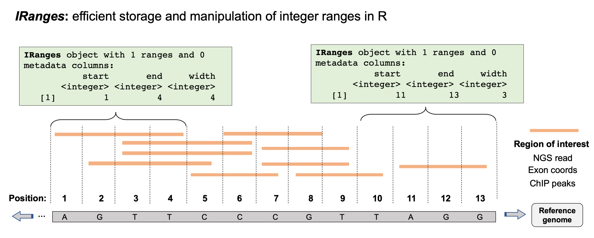
IRanges objects are generated using the IRanges() constructor function, which can then be printed to the console to show their start/end positions and width. We could generate IRanges class objects for two of the regions shown in the above example using the following code.
# 1st region
IRanges(start = c(1), width = 4)
# 2nd region
IRanges(start = c(11), width = 3)
IRanges objects can contain multiple regions, which we could have constructed for these regions like this:
ir <- IRanges(start = c(1,11), width = c(4, 3))
ir
IRanges provides a number of functions for operating on and manipulating regions stored in IRanges objects. For example, the functions shift(), narrow(), and resize() for adjusting start, end and width sizes of regions stored in these objects.
# shift all of the regions by a specified offset
shift(ir, 2)
# resize all regions to only the integer at the center of each region
resize(ir, fix="center", width=1)
Lets construct an IRanges class object that contains all of the integer regions shown in the figure above (normally, these regions would be defined by your data, so you wouldn't need to do this step).
ir <- IRanges(start = c(1,2,3,3,5,6,7,7,8,11),
width = c(4,4,4,4,3,3,3,3,3,3))
ir
The GenomicRanges package
The GenomicRanges package extends IRanges functionality to more explicitly facilitate analysis of genomic regions within the Bioconductor framework. GenomicRanges severs as a foundation for storing, querying, and manipulating genomic regions for other key Bioconductor packages. e.g. rtracklayer, BSGenome, GenomicAlignments).
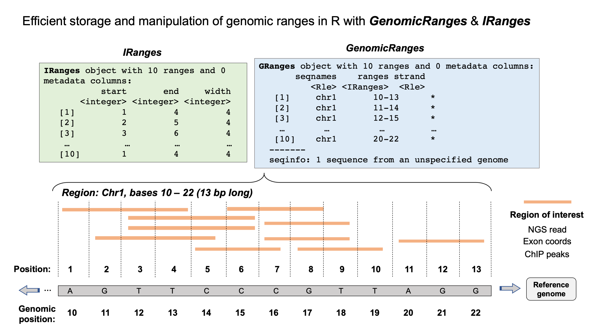
At the core of the package is the GRanges class, which is analogous to the IRanges class but specifies genomic ranges denoted by a start, and end on a specific sequence (e.g. a chromosome). Lets construct a GRanges object for the ranges shown in the figure.
gr <- GRanges(
seqnames = rep("chr1", 10),
ranges = IRanges(start = c(1,2,3,3,5,6,7,7,8,11), width = c(4,4,4,4,3,3,3,3,3,3)),
names = paste0("r", "-", seq(1,10)),
strand = c(rep("+", 2), rep("-", 3), rep("*", 3), rep("+", 2)),
score = rnorm(10,5,2))
gr
# return the region ranges only
granges(gr)
# return the strand info for all regions
strand(gr)
# return the region names
names(gr)
# extract the metadata columns
mcols(gr)
Now imagine that these regions all represent sequencing reads in an NGS experiment. A common analytical task to perform on these regions would be to ask what is the read coverage at each genomic position?
The coverage function provides a convenient way to address this question, by returning a vector that indicates the frequency of reads overlapping each of the genomic positions.
# calculate coverage of each base over this genomic region
coverage(gr)
# sum across all regions to get the total coverage for this genomic region
sum(coverage(gr))
# perhaps we are only interested in the regions on the + strand
sum(coverage(gr[strand(gr)=="+"]))
Expecting a regular numerical vector...? That might be manageable in our small example here, but imagine we need to store data across an entire genome. The object size would quickly become extremely large and require significant amounts of computational memory to handle.
Instead, GenomicRanges leverages a data compression approach called run-length encoding (RLE). RLE is an efficient form of data compression for vectors consisting of long runs of continuous data. Consider the example below:
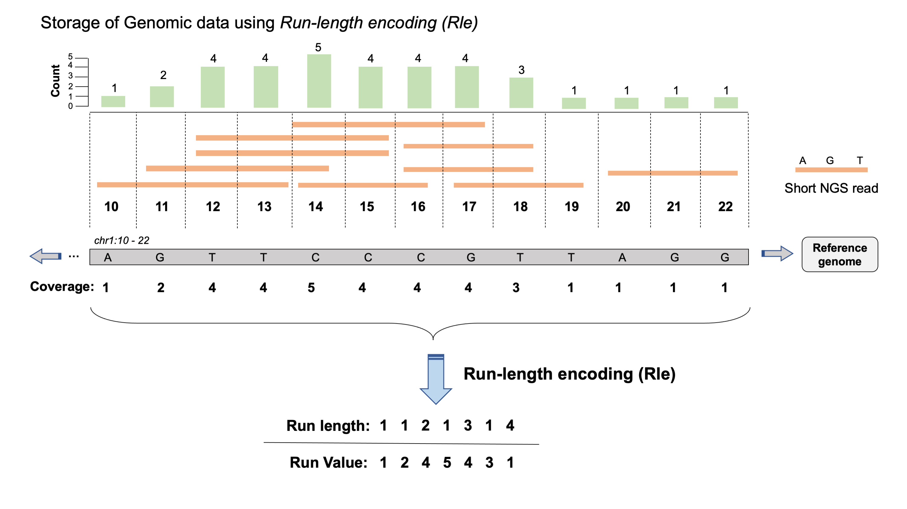
**RLE** is an especially efficient way of storing genomics data since there are often stretches of repeated values in the final data representation, and often long stretches of sequences are not considered in an experiment (e.g. non-coding regions in RNA-seq) so we shouldn't waste space storing information on those positions. RLE-style encoding is employed by the `bigWig` file format to allow efficient storage and access to signal track data. These points are illustrated in the example below in the context of a ChIP-seq experiment.
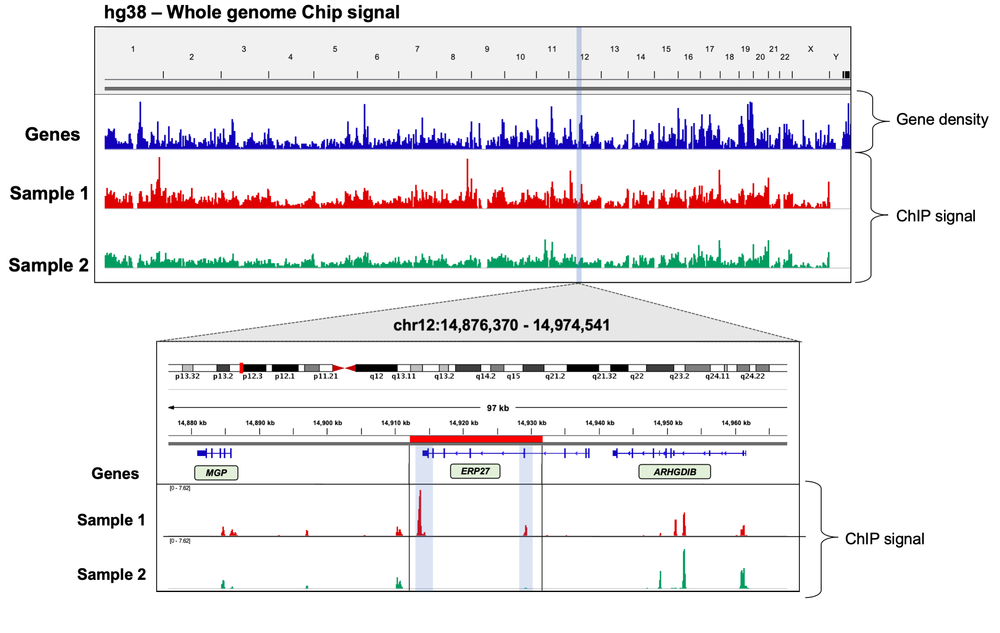
#### Manipulating *GRanges* objects *GRanges* objects can be indexed similar to regular objects in R, their intervals can be manipulated using the same functions introduced above for *IRanges* objects, and queried/manipulated using additional method functions available in the GenomicRanges package.# index GRange object for specific elements
gr[1]
# view the top X regions of interest
head(gr, n=5)
# view the top X regions with scores greater than a value of interest
head(gr[score(gr)>4], n=5)
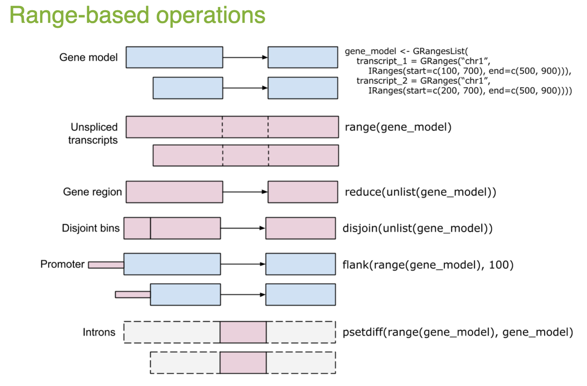
**Image source:** [GRanges tutorial](https://www.bioconductor.org/help/course-materials/2015/SeattleApr2015/B_GenomicRanges.html) Lets try a few out on our GRanges object:# shift all regions 5bp
shift(gr, 5)
# resize all regions by requiring them to be 5bp wide
resize(gr, 5)
# reduce the regions to one simplified set of non-overlapping regions
reduce(gr)
In particular, we will use ChIP-seq data generated in immunoprecipitation experiments for several histone modifications, whose presence and absence can be used to infer the functional state of chromatin at specific loci (e.g. active transcription, enhancers, heterochromatin). These data have been downloaded and made available in this github repo, in: `Bioinformatics_workshop/Day-3/data/`. The first analysis we will perform is a comparison of ChIP-seq peaks for two important chromatin marks in forebrain and heart tissues: - H3K27ac - acetylation at the 27th lysine residue of histone H3 - H3K9ac - acetylation at the 9th lysine residue of histone H3
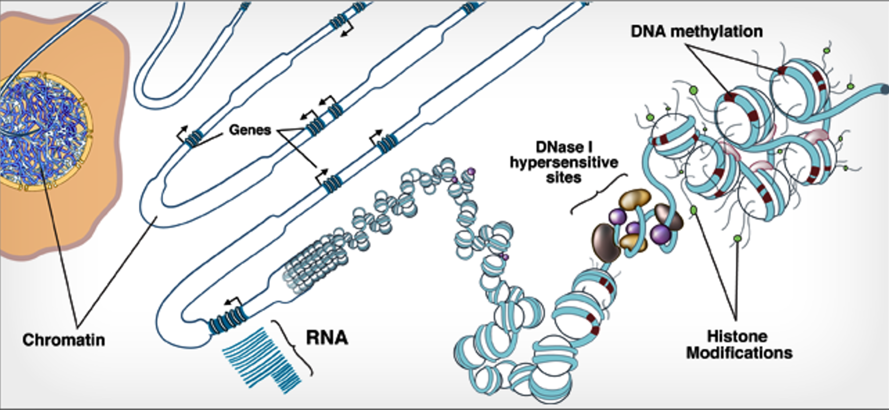
Image source: ENCODE project. Both H3K27ac and H3K9ac are found at regions of active chromatin, particularly enhancers, therefore by comparing their distribution across forebrain and heart tissues at a specific stage of development (we will use E15.5), we could gain insight into which regions of the mouse genome are important for tissue-specific development. To make things easier, we have downloaded the called peaks (in BED 6+4 format) for you from the [ENCODE website](https://www.encodeproject.org/), therefore the first thing we need to do is read these data into R. BED files can be read into R using the Bioconductor package `rtracklayer`.# we 1st need to establish a vector describing what the extra extended BED columns are
extraCols_narrowPeak <- c(signalValue = "numeric", pValue = "numeric",
qValue = "numeric", peak = "integer")
# Note: if we had a regular BED file (no extended fields) we could ignore the extraCols argument
# use the import() function to read in the peaks called in the forebrain H3K27ac ChIP-seq
fr_h3k27ac <- rtracklayer::import("forebrain_E15.5_H3K27ac.bed",
format = "BED",
extraCols = extraCols_narrowPeak,
genome = "mm10")
# do the same for the heart H3K27ac ChIP-seq peaks
ht_h3k27ac <- rtracklayer::import("heart_E15.5_H3K27ac.bed",
format = "BED",
extraCols = extraCols_narrowPeak,
genome = "mm10")
# print both GRanges objects to get an idea for their contents
fr_h3k27ac
ht_h3k27ac
# check their lengths
length(fr_h3k27ac)
length(ht_h3k27ac)
# use findOverlaps() to return matches of genomic ranges between a 'query' and a 'subject'
overlaps <- findOverlaps(query = fr_h3k27ac, subject = ht_h3k27ac)
overlaps
# subset the forebrain GRanges object for H3K27ac peaks that overlap with peaks in heart
fr_h3k27ac_ov1 <- fr_h3k27ac[queryHits(overlaps)]
fr_h3k27ac_ov1
# and vice versa for heart with forebrain
ht_h3k27ac_ov1 <- ht_h3k27ac[subjectHits(overlaps)]
ht_h3k27ac_ov1
# use these objects to calculate the % of overlapping peaks between
length(fr_h3k27ac_ov1)/length(fr_h3k27ac)*100
length(ht_h3k27ac_ov1)/length(ht_h3k27ac)*100
# we could directly subset for the overlapping peaks using subsetByOverlaps()
subsetByOverlaps(fr_h3k27ac, ht_h3k27ac)
# alternatively, we could get the H3K27ac peaks that are unique to each tissue
#### forebrain
fr_h3k27ac_uniq1 <- fr_h3k27ac[-queryHits(overlaps)]
fr_h3k27ac_uniq1
#### heart
fr_h3k27ac_uniq1 <- fr_h3k27ac[-queryHits(overlaps)]
fr_h3k27ac_uniq1
# forebrain H3K9ac ChIP-seq peaks
fr_h3k9ac <- rtracklayer::import("forebrain_E15.5_H3K9ac.bed",
format = "BED",
extraCols = extraCols_narrowPeak,
genome = "mm10")
# heart H3K9ac ChIP-seq peaks
ht_h3k9ac <- rtracklayer::import("heart_E15.5_H3K9ac.bed",
format = "BED",
extraCols = extraCols_narrowPeak,
genome = "mm10")
# combine with H3K27ac peak sets to make GrangesList objects
fr <- GRangesList("h3K27ac" = fr_h3k27ac, "h3K9ac" = fr_h3k9ac)
ht <- GRangesList("h3K27ac" = ht_h3k27ac, "h3K9ac" = ht_h3k9ac)
# have a look at them
fr
ht
# check their length
length(fr)
length(ht)
# explore individual elements of the list
fr[[1]]
fr[[2]]
length(fr[[1]])
length(fr[[2]])
library(Gviz)
# create an annotation track from the Granges object for H3K27ac
fr_h3k27ac_track <- AnnotationTrack(fr$h3K27ac, chromosome = "chr11", start = 98.2e6, end = 98.4e5,
name = "Forebrain - H3K27ac", stacking = "dense", col = "indianred", fill = "indianred")
# do the same for heart H3K27ac - this takes ~ 1 minute
hr_h3k27ac_track <- AnnotationTrack(ht$h3K27ac, chromosome = "chr11", start = 98.2e6, end = 98.4e5,
name = "Heart - H3K27ac", stacking = "dense", col = "cornflowerblue", fill = "cornflowerblue")
# create a genomic axis object to add to plot
gtrack <- GenomeAxisTrack()
# plot the tracks for this region
plotTracks(list(gtrack, fr_h3k27ac_track, hr_h3k27ac_track), from = 98200000, to = 98500000)
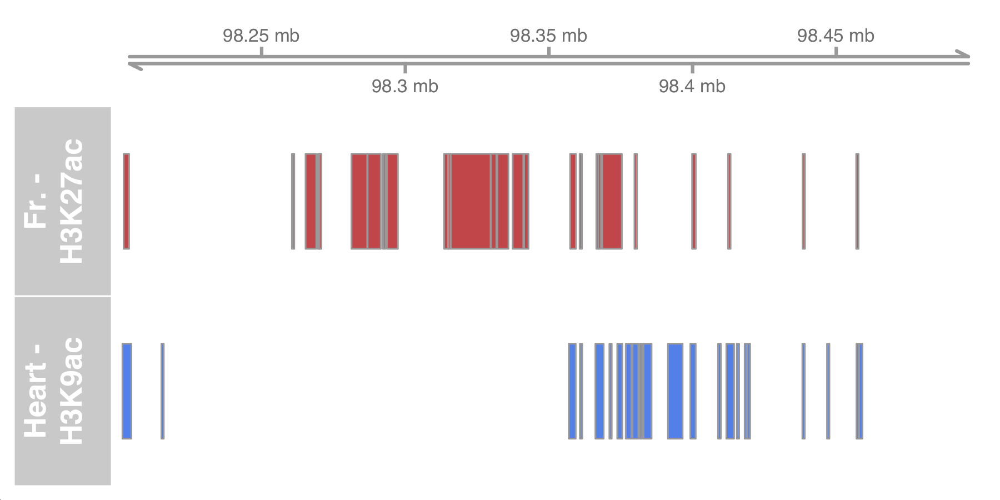
The plot clearly supports the hypothesis that H3K27ac profiles vary in this region between forebrain and heart tissues. However, there is some information this figure does not provide that would add useful context, for example: - which genes/transcripts do these regions overlap? - how do these profiles compare to other relevant published ChIP profiles? In order to address these questions, we need to obtain relevant annotation data. Fortunately, Bioconductor provides functions that allow you to interface directly with public databases like *UCSC*, *Ensembl*, and *NCBI* to obtain the most up to date annotation data available. **Genome annotation will be the focus of our next lesson**. --- ### Practical considerations: - I would not explore a new dataset using Bioconductor-based visualization packages. Generally, *IGV* will allow you to explore a new dataset faster, without having to do any coding. However, packages such as `Gviz` provide a comprehensive and flexible way to display data in numerous ways not possible in standard genome browsers, and therefore are an excellent way to explore candidate regions in more detail, or to generate a number of plots programmatically. - There are other ways to perform the sorts of tasks that we did in this lesson, both within and outside of R. For example, [*BEDTools*](https://bedtools.readthedocs.io/en/latest/), the so-called *"swiss-army knife for genomic-arithmetic"* allows you to intersect, subset, merge, count, and manipulate genomic regions directly via the UNIX shell. Alternatively, [*Biopython*](https://biopython.org/) provides similar functionality from within python.- The choice of which software you use for these types of operations is dependent on your task and analysis pipeline. For example, if plan to use other Bioconductor packages after determining overlap between sets of regions, you may choose to use R/Bioconductor. If you simply need to intersect two BED files quickly to be used as input into another UNIX-based software, it may be advantageous to use BEDTools. - This lesson is not intended to be a comprehensive introduction to the complete functionality of any of the packages discussed here, and would be impossible to achieve in the time we have. This lesson is based off of similar exercises available from far more comprehensive vignettes and documentation at the Bioconductor webpages for package. Use this lesson as a starting point to direct you toward these more comprehensive resources.
Genomics with R & Bioconductor II
Working with genomics data in R/Bioconductor - Part II
Genome annotation & reference genomes
Bioconductor provides a number of packages that allow users to perform advanced genome annotation tasks in a programmatic way. Furthermore, Bioconductor packages also offer convenient and efficient ways to interface with common reference genomes, and can facilitate complex sequence analysis tasks using these reference genomes.
In this lesson we will introduce you to some of these packages and explore their basic functionality. We also provide links to a number of additional optional lessons that provide more in depth examples of how these packages can be used to accomplish specific data analysis tasks common in genomics.
Learning objectives:
- Gain an appreciation for how Bioconductor packages can be used to perform genome annotation
- Understand how Bioconductor can be used to obtain & analyze common reference genomes
Set your working directory to point to the Day-3/data/ folder:
## You may need to ammend this path to the full path of where you have cloned the github repo on your machine
setwd("Bioinformatics_workshop-Dec-2021/Day-3/data")
Genome annotation with Bioconductor:
Commonly in genomic data analysis, we want to provide additional context to our data that helps us address our hypothesis. We often achieve this through integrating results from an analysis with publicly available annotation data. Bioconductor provides functionality to directly interface with many popular annotation databases (NCBI, Ensembl, GenBank, UniProt) and import these data into your R environment as Bioconductor type objects (e.g. GRanges).
Examples of common annotation tasks include:
* Mapping unique gene identifiers (e.g. ENSEMBL or NCBI IDs) to gene symbols in an RNA-seq experiment
* Identifying coding variants from a WGS/WES dataset based on transcriptional context (e.g. coding variants)
* Annotation of genomic context for peak sets from an ChIP- or ATAC-seq experiment (e.g. promoter, intron, exon, intergenic)
Numerous packages are available for such annotation through Bioconductor. Some are built to provide access to specific annotations from a particular database, while others are designed to provide broad access to a number of databases (e.g. Ensembl, NCBI, Biomart).
| Package/package-family | Contents & uses |
|---|---|
| AnnotationDbi | Methods for accessing data from SQLite-based annotation packages |
| GenomicFeatures | Methods for storing and manipulating transcriptome annotations using the TxDb object class |
| Org.X.db | Gene-based annotation for current genome versions, useful for mapping IDs, symbols and identifiers |
| EnsDb.X.vX | Access to the most up-to-date transcriptome annotations directly from Ensembl |
| biomaRT | Release-specific transcriptome annotations from Ensembl for any version or organism |
| BS.genome | Full sequences for common reference genomes |
| genomation | annotation of genomic context and basic data visualization |
In this lesson, we provide examples of how specific Bioconductor packages can be used for particular annotation tasks, however it is worth noting that we are really only scratching the surface in terms of potential annotation applications that Bioconductor packages can be used for. To provide a more expansive introduction to these applications, please see the optional lessons in the Day-3 folder.
Mapping gene identifiers with Org.X.DB
OrgDb represents a family of Bioconductor packages that store gene identifiers from a numerous annotation databases (e.g. gene ontologies) for a wide range or organisms. For example, org.Hs.eg.db loads the current annotations for human genes, org.Mm.eg.db for mouse, org.Sc.sgd.db for yeast, and so on.
OrgDb packages also provide access to some basic additional annotation data such as membership in gene ontology groups. Just as we did in the last lesson, you can navigate through Bioconductor's package index to view all of the existing Org.X.db packages here.
Note:OrgDb packages contain annotation data for the most recent genome annotation for that organism, and are therefore not build specific. If you need to annotation for a specific genome build (e.g. h19 vs hg38) you may want to use a different annotation package.
Load the org.db package for the human genome:
library(org.Hs.eg.db)
Once loaded, OrgDB allows access to the annotation data for the package you loaded through hidden objects that can be accessed using a set of common Org.Db functions. For example, we can access data from the org.Hs.eg.db package after loading it by using the hidden object org.Hs.eg.db.
org.Hs.eg.db
# what class is it
class(org.Hs.eg.db)
# what types of data can be extracted?
keytypes(org.Hs.eg.db)
OrgDb objects use the keytypes() function to access specific types of data from the annotation source. We can ask OrgDb to return a specific keytype that we are interested in.
# obtain all ENSEMBL IDs
entrez.ids <- keys(org.Hs.eg.db, keytype="ENSEMBL")
head(entrez.ids)
# how many are there
length(entrez.ids)
The situation we usually end up in however, is when we want to return a set of keytypes given one set of keytypes, for example, returning the gene symbol, entrez ID, and RefSeq ID from a list of Ensembl IDs. For this we can use the select() method or mapIds() method.
# use ensembl id of first 6 in entrez.ids to get desired keytypes
select(org.Hs.eg.db, keys = head(entrez.ids), columns = c("SYMBOL","ENTREZID", "REFSEQ"), keytype="ENSEMBL")
# using mapIds but only to get gene symbol
mapIds(org.Hs.eg.db, keys = head(entrez.ids), column = c("SYMBOL"), keytype="ENSEMBL")
RNA-seq results annotation using OrgDb
Lets apply this approach to annotate some real RNA-seq differential expression results. Start by reading in the data, currently stored in .csv format.
# read in data
results <- read.csv("diff-exp-results.csv", stringsAsFactors = F, row.names = "ensembl")
# check the first few lines
head(results)
Now use mapIDs to obtain 1:1 mappings between the Ensembl ID and the gene symbol.
# using mapIds but only to get gene symbol
gene.symbols <- mapIds(org.Hs.eg.db, keys = rownames(results), column = c("SYMBOL"), keytype="ENSEMBL")
# add a symbols column to results with the gene symbols we just retreived
results$symbol <- gene.symbols
# check the new results table
head(results)
# make sure there are no NAs in the symbols column we just created
table(is.na(results$symbol))
Uh Oh! There are lots of NAs, meaning many genes didn't have a symbol mapped to them... Turns out Org.Db is most built around entrez IDs from NCBI and does not contain the annotations for many Ensembl genes, which includes a lot of non-coding RNAs like lincRNAs. Instead, we can use an Ensembl package, EnsDb.Hsapiens.v86 to pull data directly from Ensembl.
library(EnsDb.Hsapiens.v86)
Now lets use EnsDb.Hsapiens.v86 to retrieve annotation data for our genes and see how many missing genes occur.
# using mapIds but only to get gene symbol
gene.symbols.2 <- mapIds(EnsDb.Hsapiens.v86, keys = entrez.ids, column = c("SYMBOL"), keytype="GENEID")
# how long is it
length(gene.symbols.2)
# how many NAs
table(is.na(gene.symbols.2))
Fewer NAs are identified, meaning we were able to annotate more of the genes in our dataset with gene symbols. There are still a few missing though, why might this be?
To ensure we annotate all possible genes, we need to make sure we are using annotation data from the genome annotation used to in the read count quantification process for these data (think back to the GTF file we used during alignment and quantification).
These data were annotated using Ensembl version 97 (which explains why the R-package based off of Ensembl v86 was not able to find matching symbols for all our Ensembl IDs) therefore we could read the GTF file directly into R and manually link ensembl IDs to gene symbols. However, the GTF file is very large and may exceed available memory on our local machines if we load it into R.
Alternatively, we can download annotation data for the human Ensembl annotation releases 97, and all other Ensembl genomes, using the BioMart annotation database. BioMart is an easy to use web-based tool that allows you to efficiently obtain annotation data for Ensembl genomes. Use BioMart to obtain annotation data for the human genome version hg38 from annotation release v97.
Now read this file into R:
anno <- read.table("GRCh38.p12_ensembl-97.txt", sep="\t", header=TRUE, stringsAsFactors = F)
# check the first few rows and dimensions
head(anno)
dim(anno)
# check how many Ensembl IDs overlap with our results
table(anno$Gene.stable.ID %in% rownames(results))
table(rownames(results) %in% anno$Gene.stable.ID)
# lets rename the ensembl ID column in both datasets so that we can merge them together based on those IDs
colnames(anno)[1] <- "ensembl"
results$ensembl <- rownames(results)
results_merge <- merge(results, anno, by="ensembl")
head(results_merge)
table(is.na(results_merge$Gene.name))
Great! We now have gene symbols for all the genes in our dataset, and some additional annotation data integrated directly with our results. Save these data and send it to your PI!
write.csv(results_merge, file = "diff-exp-results-annotated.csv")
As we have seen, while the R-packages discussed above can present powerful and quick ways to access lots of annotation data (e.g. gene ontology etc.), there are some obvious limitations which are important to understand when you are annotating your own datasets.
Optional lessons:
To provide a more significant introduction to Bioconductor functionality for genome annotation, we have made available a number of optional lessons, which can be completed at home or during any extra time you may have during the workshop. Links to these lessons are provided below.
They may also be accessed directrlty from in the Day-3 folder of the GitHub repo.
- Programmatic access to BioMart using the BioMart package.
- Transcript-based annotation using the Txdb objects.
- Annotation of ChIP-seq peaks with Ensembl gene & transcript IDs.
References genomes & sequence analysis with Bioconductor
Bioconductor also provides functionality for accessing and analyzing complete reference sequences for commonly used genomes. Namely, the BSgenome family of Bioconductor packages provides an efficient way to obtain, query, and manipulate genomic sequence data from reference genomes. You can return a vector of the currently available genomes to your console by printing available.genomes() after loading the BSgenome package.
Analyzing genomic sequence data directly can be used for a number of common research tasks, for example:
Extracting DNA/RNA/protein sequences for specific genomic features
Calculating nucleotide frequencies for defined sequences
* Searching for matching sequences of interest
# load the package
library(BSgenome)
# check currently available genomes
available.genomes()
Note: These genomes are focused predominantly on those available from NCBI and UCSC genomes, however functionality exists to forge a BSGenome package, allowing you to leverage the BSGenome framework for genomes not part of the currently available set.
Lets load the 'mm10' build of the mouse reference genome into our R session:
# assign the genome to a variable using getBSgenome() (you need to have the package for the BSgenome you are trying to load already installed)
genome <- getBSgenome("BSgenome.Mmusculus.UCSC.mm10")
genome
# check the structure
str(genome)
# print the metadata for the genome
metadata(genome)
By default, the BSGenomes come with no sequence masking. It is common when working with reference genomes to mask regions that may contain ambiguous sequences, such as repeat regions, that you wish to ignore in your analyses. To obtain a masked genome, you should set masked=TRUE in the getBSgenome() function. This will load a genome in which specific sequences have been masked in a hierarchical fashion using the following criteria:
1. Gaps in the genome assembly
2. Sequences with intra-contig ambiguities
3. regions flagged by RepeatMasker
4. regions flagged by Tandem Repeat Finder
Load the masked reference and compare to the unmasked version.
genome.m <- getBSgenome("BSgenome.Mmusculus.UCSC.mm10.masked")
class(genome.m)
genome.m
# unmasked genome
class(genome)
genome
# return basic sequence information summary
seqinfo(genome.m)
# print chromosome 1
genome.m$chr1
If we use the BSgenome.Mmusculus.UCSC.mm10.masked then any regions that have been identified as problematic will be ignored in any downstream analysis we perform of the sequences.
BSgenome is heavily dependent on functionality from another Bioconductor package: BioStrings, which defines a set of methods and object classes for storing and analyzing sequence data. BioStrings is loaded automatically when you loaded BSgenome.
Examples of sequence analysis tasks that can be performed by the BioStrings package:
- calculate frequencies of specific nucleotides or patterns in a sequence
- generate translated or reverse complemented sequences
- solve local, global, or pairwise alignment problems
- motif searches with a Position Weight Matrix (PWM) (e.g. for ChIP- or ATAC-seq)
Since BSGenome is dependent on the BioStrings package for much of its functionality, all of the methods implemented in BioStrings can be applied to BSGenome objects. For example:
# assign chr 1
chr1 <- genome$chr1
# what is the frequency of each base in your sequence
alphabetFrequency(chr1, baseOnly=TRUE, as.prob=TRUE)
# what is the frequency of your favourite base
letterFrequency(chr1, "A", as.prob=TRUE)
# where are all incidences of 'ATG'
matchPattern("ATG", chr1)
OPTIONAL EXERCISE: An optional exercise that provides that provides a more in depth introduction to functionality available in the BioStrings package can be found here.
An excellent BioStrings tutorial is available here from one of the BioStrings creators.
Example: Extracting sequences flanking ChIP-seq peaks
Once peak regions have been identified to describe the potential binding locations of transcription factor (TF) or histone modification, a common task in the analysis of ChIP-seq data is to scan the sequences immediately surrounding these peaks in order to identify sequences enriched over these peak regions that may represent the binding motif for that TF. To achieve this, we need to obtain the sequences for these peaks from the reference genome that the samples were aligned to (mm10). The cartoon below depicts this overall workflow.
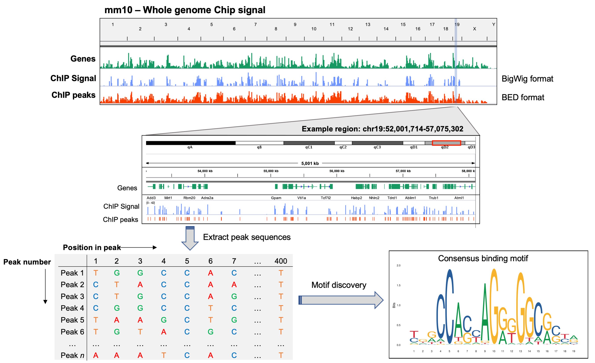
As an example, we will again use data from the ENCDOE project, where mouse forebrain tissues were ChIP'd for CTCF, a critical TF for diverse cellular processes that performs a wide range of transcriptional activation/repression functions at a genome-wide level. Called CTCF peaks for this experiment were downloaded from the ENCODE website here.
Read in the BED file as a GRanges object using rtracklayer function import() as we have done previously. We can then use the getSeq() function to return sequences from our previously assigned BSGenome object (UCSC - mm10, assigned to the variable genome) that cover the regions specified in the GRanges object.
# we need to establish a vector describing what the extra extended BED columns are
extraCols_narrowPeak <- c(signalValue = "numeric", pValue = "numeric",
qValue = "numeric", peak = "integer")
# read in peaks
bed <- import("CTCF-forebrain-mm10.bed",
format="BED",
extraCols = extraCols_narrowPeak,
genome = "mm10")
# extract sequences for peak regions and print to console
ctcf_seqs <- getSeq(genome, bed)
ctcf_seqs
Since the object returned by getSeq() is a DNAStringSet class object, we can use BioStrings based methods to perform operations on the sequences directly. For example, we might be interested in checking the nucleotide frequencies across all peaks.
# calculate nucleotide freqs.
nt_freqs <- alphabetFrequency(ctcf_seqs, baseOnly=TRUE, as.prob=TRUE)
# calculate mean value for nucleotide freqs across all peaks
round(apply(nt_freqs, 2, mean), digits=2)
We might also be interested in visualizing the distribution of the peak width, to get an idea of how much they vary. We can use the width accessor function to extract the width of each peak, and base R functions for plotting.
hist(width(ctcf_seqs),
col = "darkgray",
xlab = "Peak width (bp)",
main = "CTCF peak width distribution")
We could now export these sequences to a FASTA file (using writeXStringSet()) however several motif discovery softwares require that peaks be of the same size (width). To do this in a meaningful way for our ChIP-seq data, we will need to find the center of each peak, and then restrict to the a certain number of bases flanking either side of the center position. We will need to go back to the ranges from our original BED file to resize the peaks to the desired width around the center, then re-extract the sequences for those regions.
# resize the regions from the BED file
bed_centered <- resize(bed, width = 400, fix = "center")
bed_centered
# check their with
width(bed_centered)
# extract sequences again
ctcf_seqs_cent <- getSeq(genome, bed_centered)
ctcf_seqs_cent
Now we are ready to export these sequences in FASTA file format, which is used as the default format as input to many motif discovery algorithms. As mentioned above, we can do this for DNAStringSet objects with the function writeXStringSet().
# add names to peaks in ctcf_seqs so that FASTA entries have names
names(ctcf_seqs) <- paste0(seqnames(bed), ":", start(bed), "-", end(bed))
# export peaks to FASTA file
writeXStringSet(ctcf_seqs, file="CTCF-peaks-resized.fa")
After you write the file, go to your the UNIX command line and have a look at your FASTA file to confirm it looks correct.
Note: Other software tools (within and outside of R) could have been used to achieve the above tasks, such as those implemented in bedtools or biopython. The major advantage of performing this analysis in R is the built in interoperability between Bioconductor packages (e.g. BioStrings, BSGenome, GRanges) that can be leveraged for your analysis.
Intro to Statistics for Bioinformatics I
Introduction to statistics for bioinformatics - Part I
Bioinformatics draws on knowledge from multiple disciplines. To effectively solve many bioinformatic problems, knowledge from each of these disciplines must be applied to address the overall problem. Developing a working knowledge of statistics is critical for anyone hoping to solve bioinformatic problems, particularly in genomics.
In particular, this working knowledge of statistics is required to understand the downstream data analysis methods we employ after data reduction of NGS datasets (e.g. differential analysis on raw gene expression counts).

Adapted from Md Arman Hossen on Medium.
Statistics involves the analysis of numerical data that we wish to use for making inferences on a larger population. Generally, statistical learning refers to the models and procedures with which we analyze these numerical datasets. Statistical inference refers to the process of drawing conclusions from these models and procedures.
While a comprehensive introduction to statistical learning and inference is well beyond the scope of this workshop (and generally takes years of specific training and experience), we will introduce some fundamental concepts required for appropriate statistical analysis of genomics data sets that are relevant to wet- or dry-lab scientists alike.
What we will cover:
- What is statistical learning?
- Basics of supervised & unsupervised data analysis methods
- Basics of statistical inference & hypothesis testing
- P-values & the multiple testing problem
What we will not cover:
- Math & probability theory underlying statistical learning procedures
- Model selection procedures & how to assess model fit
- A comprehensive introduction to the methods used for statistical learning and inference in bioinformatics
Important note: Building a more complete understanding of the statistical procedures commonly used in bioinformatics, such that you are able to confidently implement, interpret, and troubleshoot these procedures, requires a working knowledge of relevant math and probability theory. Such training is best sought out through formal instruction, and is usually not included in applied bioinformatics courses. While developing an understanding of the fundamental concepts in statistical learning and inference covered here will allow you to begin leveraging more complex statistical analyses in your own research, and act as a solid foundation upon which to further your training in this domain, it is also important to recognize when more specialist expertise is needed to address your analytical questions.
Statistical learning
Statistical learning describes the models and procedures we use in order to understand data. The methods we use can be loosely grouped into two main categories:
- Supervised methods
- Unsupervised methods
Unsupervised methods
We are often interested in identifying clusters and groups that form naturally in our data, meaning that we do not supervise the analysis using any dependent variable (e.g. tx group, WT vs KO). This part of an analysis is often referred to as an exploratory data analysis, and make use of unsupervised statistical methods to perform this analysis.
Unsupervised data analysis is often used in bioinformatics to address questions like:
- How similar are my samples based on genome-wide profiles?
- Are any samples in the dataset clear outliers?
- Do any variables systematically affect genome-wide profiles (e.g. batch)?
Examples of unsupervised methods:
- Dimensionality reduction (e.g. PCA, NMF, t-SNE, UMAP)
- Clustering methods (e.g. hierarchical, K-means)
- Hidden Markov modeling
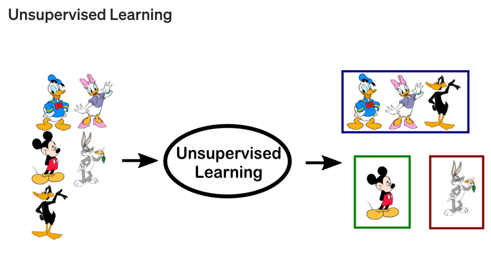
Image Credit: https://towardsdatascience.com/supervised-vs-unsupervised-learning-14f68e32ea8d
As depicted in the above example, an unsupervised approach could be used to group together similar characters (i.e. ducks, mice, bunnies), without using any information on the original identity of each.
Supervised methods
In contrast to unsupervised methods, we often wish to test a more specific question of hypothesis, for example in the context of a gene expression analysis, we might ask:
- Which genes are associated with disease?
- How much does a given gene contribute to the disease phenotype?
The statistical methods we use to address these sorts of questions are typically referred to as supervised statistical methods.
Examples of supervised methods:
- Linear regression
- Generalized linear regression models
- Decision trees
- Support vector machines
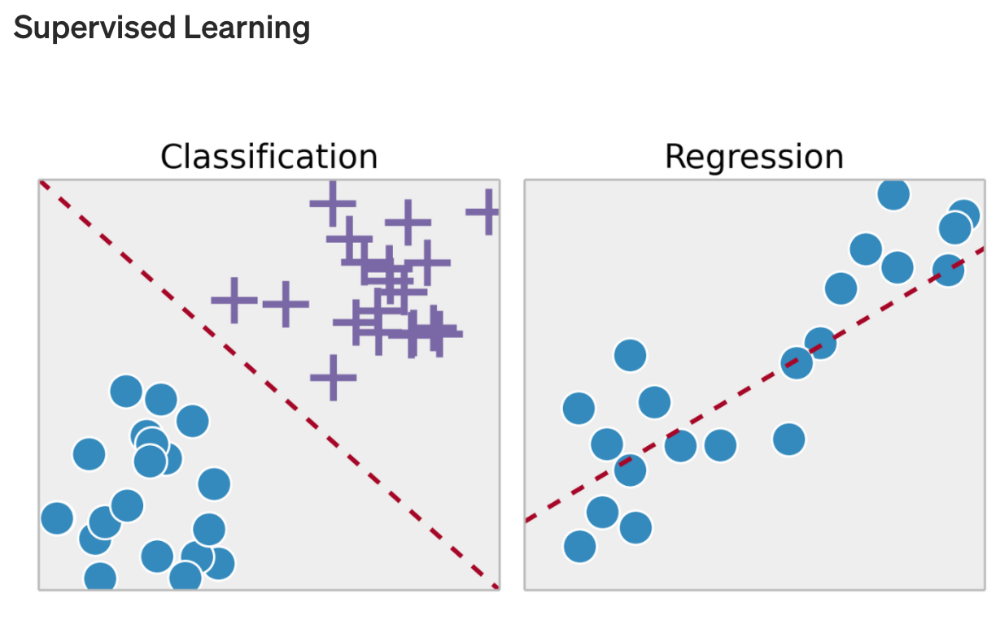
Image Credit: https://towardsdatascience.com/supervised-vs-unsupervised-learning-14f68e32ea8d
Supervised methods generally involve either classification or regression. In classification we attempt to assign labels to samples based on some sort of input data. In regression we aim to assess the relationship between a predictor variable, and one or more separate variable.
Below, we provide more specific introductions to both supervised and unsupervised learnings, using basic linear modeling as an example for supervised approaches, while exploring PCA and hierarchical clustering for unsupervised analysis.
A more comprehensive introduction to statistical learning can be found in the book: An Introduction to Statistical Learning, in addition to numerous other statistical texts and online resources.
Unsupervised learning - Dimension reduction & clustering
As mentioned above, unsupervised learning methods are very powerful tools to conduct exploratory data analysis. Two important groups of unsupervised methods include dimensionality reduction methods and clustering-based methods.
-
dimensionality reduction methods: involves the transformation of data from a high-dimensional space to a low-dimensional space, allowing intrinsic properties of the high-dimensional dataset to be identified. These approaches are valuable when you have a large number of features (p) but a much smaller sample number (n).
-
clustering-based methods: involves calculation of the similarity/dissimilarity between samples, resulting in organization of these samples into 'clusters' defined by their relatedness to one-another
We will explore an example of each approach below, using principal components analysis (PCA) as an example of dimensionality reduction, and unsupervised hierarchical clustering as an example of a clustering-based method.
Principal components analysis (PCA)
For high dimensional datasets (e.g. genomics data), where we have measured many thousands of features over a relatively smaller number of samples, it is often desirable to reduce the complexity of the dataset so that it can be viewed in fewer dimensions that hopefully reveal some intrinsic properties of the dataset.
We will not discuss the mathematical procedures used to perform PCA here, however this is discussed exhaustively elsewhere. One excellent resource is the StatQuest video linked here.
PCA is a very popular approach to perform dimensionality reduction. At its simplest level, PCA accepts a matrix of numerical values (e.g. gene expression matrix, ChIP-seq counts, etc.), and returns a set of numerical vectors (principal components) that represent the axes of greatest variation in the dataset.
The principal components (PCs) explain distinct sources of variation in the data, and represent the lower-dimensional space that the original dataset has been projected into. Importantly, each PC explains more variation in the dataset than the last (e.g. PC1 explains more variation than PC2).
By using the projection values of each sample along the PCs, we can visualize this lower-dimensional space to learn defining properties of the dataset.
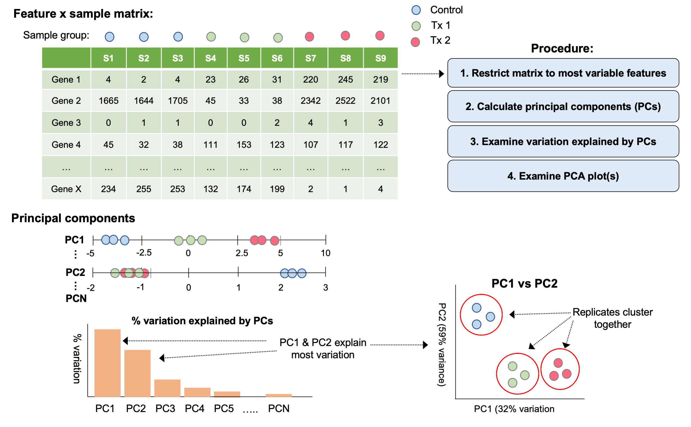
To demonstrate how you would perform a PCA analysis in R, we will use gene expression data (RNA-seq) collected as part of the same ENCODE study we discussed in previous lessons Gorkin et al, 2020, but published in the companion paper: The changing mouse embryo transcriptome at whole tissue and single-cell resolution.
The expression data includes samples collected as multiple time-points during development of the mouse embryo across 17 different tissues and organs (see Figure 1A from the manuscript below).
To help get you started, you have been provided with a matrix of FPKM counts (fragments per kilobase million mapped reads, which represent normalized expression values) and sample metadata. In the code chunks below, we will explore the relationships between samples from different tissues using PCA.
# read in data
fpkm <- read.table("fpkm_sub.txt", stringsAsFactors = FALSE, header=TRUE)
meta <- read.delim("metadata_sub.tsv", stringsAsFactors = FALSE, header = TRUE)
# have a quick look at top of files
head(fpkm[,1:6])
head(meta)
# log transform fpkm counts
log_fpkm <- log2(fpkm+1)
# calculate variance across samples for each gene
vars <- apply(log_fpkm, 1, var)
# order variances based on magnitude of variance
vars <- rev(vars[order(vars)])
# plot variance for genes across samples
plot(vars, las = 1, main="Sample gene expression variance", xlab = "Gene", ylab = "Variance")
abline(v=5000, col="red")
In-fact, most genes show little variance in expression levels across tissues. Features that do not vary across samples are not informative for dimensionality reduction or clustering methods, therefore it is generally useful to remove them.
In these data, it seems that ~ the top 5000 genes will explain most of the variance in these data, so we will only use these genes for the PCA.
# perform PCA and order by variance
vars_sub <- vars[1:5000]
# perform the PCA on the fpkm matrix
pca <- prcomp(t(log_fpkm[names(vars_sub), ]))
# look at the object returned
str(pca)
head(pca$x)
# construct data frame w/ PC loadings and add sample labels
pca_df <- as.data.frame(pca$x)
pca_df$tissue <- as.factor(meta$Biosample.term.name)
pca_df$sample_ids <- meta$File.accession
# extract percent variance explained by each PC
percentVar <- pca$sdev^2/sum(pca$sdev^2)
# add colors for plotting to df
cols <- grDevices::rainbow(length(levels(pca_df$tissue)))
# create an empty variable in pca_df to be filled with colors from cols
pca_df$col <- NA
# loop over tissue types in pca_df and assign colors for plotting
for(i in 1:length(levels(pca_df$tissue))){
ind1 <- which(pca_df$tissue == levels(pca_df$tissue)[i])
pca_df$col[ind1] <- cols[i]
}
# plot PC1 vs PC2
plot(pca_df[, 1], pca_df[, 2],
xlab = paste0("PC1 (", (round(percentVar[1], digits=3)*100), "% variance)"),
ylab = paste0("PC2 (", (round(percentVar[2], digits=3)*100), "% variance)"),
main = paste0("PC1 vs PC2 genome-wide RNA-seq tissue profiles"),
pch = 16, cex = 1.35, cex.lab = 1.3, cex.axis = 1.15, las = 1,
panel.first = grid(),
col = pca_df$col)
# add a legend to the plot
legend(1.5, 105, levels(pca_df$tissue), pch = 16, col = cols, cex = 0.9)
Viewing the dataset using this lower dimensional representation provides us with critical insights into the data that would be too challenging to obtain by looking at the expression levels of individual genes separately. We see that samples from similar tissues generally cluster together on the PCA plot, while more distinct tissue types appear further away from each other. This fits with our expectations, as samples from the same (or similar tissues) should have similar gene expression profiles.
Unsupervised hierarchical clustering
Generally, clustering analysis describes a collection of methods used to group samples into groups called clusters which define their relation to one-another. These relationships are defined by the distance metric used, which is simply a measure of how similar/dissimilar samples or features in a dataset are to each other. Several distance metrics exist, such as manhattan or euclidean distance, and are calculated differently (and affect the clustering).
Unsupervised hierarchical clustering describes a specific approach to performing clustering analysis, in which a tree-like structure is generated to describe the relatedness of samples and features. The results of this procedure are commonly represented using heatmaps, with samples defining columns and features (e.g. genes) defining the rows. Visualization using heatmaps is valuable as it allows us to identify 'modules' of similar/dissimilar features across samples, making approaches like hierarchical clustering complimentary to dimensionality-reductions methods like PCA.
To demonstrate how one could perform an unsupervised hierarchical clustering analysis in R, we will use the same RNA-seq dataset from He et al, describing transcriptomic changes in the developing mouse embryo.
Clustering can be quite computationally intensive, therefore we will first generate a subset of the gene expression data containing five specific tissues, rather than all 17.
# subset mnetadata to 5 tissues of interest
meta_ord <- meta[meta$Biosample.term.name=="forebrain" |
meta$Biosample.term.name=="heart" |
meta$Biosample.term.name=="limb" |
meta$Biosample.term.name=="liver" |
meta$Biosample.term.name=="intestine", ]
# subset FPKM matrix to contain the same subset of samples
log_fpkm_sub <- log_fpkm[, c(colnames(log_fpkm) %in% meta_ord$File.accession)]
Since we took a subset of the original dataset, we need to recalculate the variance of each gene across the samples in this subset, so that we can assess how many features will be informative for the clustering procedure.
# calculate variance of each gene across samples for new subset of data
vars <- apply(log_fpkm_sub, 1, var)
# order variances based on magnitude of variance
vars <- rev(vars[order(vars)])
# plot variance for genes across samples
plot(vars, las = 1, main="Sample gene expression variance",
xlab = "Gene", ylab = "Variance")
# add vertical line
abline(v=1000, col="red")
The per gene variances look similar to before, however we will focus on the top 2000 most variable genes to help speed up the hierarchical clustering.
# subset var to only top 2000 genes with most variance
vars_sub <- vars[1:2000]
# subset the fpkm matrix to these genes
mat <- log_fpkm_sub[names(vars_sub), ]
# order the samples in the same order they are in in the metadata file
mat <- mat[, c(match(meta_ord$File.accession, colnames(mat)))]
# scale the fpkm matrix by row
mat_scaled = t(apply(mat, 1, scale))
# set column names for this matrix (they were removed during transposition)
colnames(mat_scaled) <- colnames(mat)
We will be using the pheatmap() from the pheatmap package, which provides extensive functionality for performing and visualizing the results of clustering analyses using heatmaps.
# load the pheatmap package
library(pheatmap)
# create data frame to annotate heatmap with
annotation_col = data.frame(Tissue = meta_ord$Biosample.term.name)
rownames(annotation_col) = meta_ord$File.accession
# use pheatmap() to perform clustering on scaled data matrix
pheatmap(mat_scaled,
show_rownames=FALSE, show_colnames=FALSE,
annotation_col = annotation_col,
cluster_cols = TRUE,
clustering_method = "average",
clustering_distance_cols = "correlation")
The sample dendrogram and annotation bar tells us that all five tissues were assigned to their own cluster, with sub-clusters among each. It also allows us to compare between these groups to make inferences, for example, intestine seems to be the most dissimilar tissue from forebrain based on gene expression.
In addition, the heatmap shows us the genes and their accompanying dendrogram, which allows us to visualize sets of genes that show coordinated changes across the samples, providing insight into the differences described by the clusters. For example, there is a set of ~200-300 genes that are uniquely up-regulated in intestinal tissue, and an additional ~100-200 genes that are shared with liver tissue.
Intro to Statistics for Bioinformatics II
Introduction to statistics for bioinformatics - Part II
Supervised methods & statistical inference
Statistical inference
Before we discuss supervised methods, it is useful to first discuss the fundamental concepts behind statistical inference, and importantly hypothesis testing, as we build the hypothesis testing framework to infer biological insights from data that has been modeled using supervised statistical approaches.
Statistical inference refers to the process we use to draw conclusions from models and procedures applied to the sample of the population we are studying, and is often broken down into two parts:
- estimation where we learn or determine a population parameter through fitting a statistical model fitted to our data (e.g. though using supervised learning approaches)
- hypothesis testing which involves testing for a specific value of this parameter, so that we can make an inference about the population from which the sample comes.
An excellent article on the fundamentals of statistical inference and estimation from the PennState course: Stat 504, Analysis of Discrete Data is available here.
Hypothesis testing
In bioinformatic data analysis, we often conduct hypothesis testing to assess how meaningful our results are. For example, in RNA-seq analysis, we would like to know which genes showed meaningfully different gene expression between the experimental groups. Hypothesis testing describes the statistical framework that we use to assess how meaningful our results are.
General procedure for hypothesis testing:
1. Decide on the null hypothesis (H0, there is no meaningful difference between our samples)
2. Use the sample data to calculate a test statistic
3. Use the test-statistic to calculate a P-value
4. Reject the null hypothesis if P-value is below your a priori* threshold
To help understand the procedure for hypothesis testing, consider the below example:
You have performed a qPCR experiment to examine how the expression levels of gene X change after treatment with a novel compound. You performed the experiment on 5 samples treated with the novel compund, and 5 samples treated with a control. You wish to determine if a significant differnece exists between the expression of gene X in the control and treatment groups.
- The Null hypothesis is that there is no meaningful difference between the treatment groups.
- The Alternative hypothesis is that a meaningful difference exists between the treatment groups.
A common statistical test to compare the means between two groups of normally distirbuted data is the t-test, named due to the value upon which the test relies: the t-statistic. The t-statistic is an example of a test-statistic, a commonly used concept in statsitics that compares your results to those expected under the null hypothesis.
If the difference between the means of each sample group is large, and the standard deviation (spread of the data) is low, the t-statistic will have a larger value. If the means are closer together, or the standard deviation is large, the t-statistic will be small.
In the below example, you can see the difference between the means seems quite large, and the spread of each distribution does not seem excessive, suggesting we might expect a large t-statistic for these data.
To determine if our test-statistic suggests there is a signifiant difference between the two means, we compare our test-statistic to a distribution that would be generated if we repeadtedly ran this procedure on samples with no significant difference (i.e. the null hypothesis is true). In the case of the t-statistic, this distribution is referred to as the t-distribution.
Note that the t-distribution varies depending on a quantity referred to as degrees of freedom (sample number - 1), therefore the distribution will be slightly different each time our sample size for an experiment changes.
How to interpret the t-distribution:
- Values close to 0 are the most common because when the null hypothesis is true, we expect little to no difference between means for easch sample group, and therefore a small t-statistic
- Large positive or negative values are less common because when the null is true, it is very unlikely that the t-statistic will be large
We can use the t-distribution to calculate the probability that the t-statistic we observed was generated under the null hypothesis. This probability is referred to as a P-value and represents the area under the t-distribution made up of values larger than the t-statistic we observed.
In this example, the t-statistic is large enough that less than 5% of the t-distribution has a larger value, therefore our P-value will be < 0.05.
If we use the common P-value threshold (α) of 0.05, we should choose to accept the alternative hypothesis and reject the null. Intuitively, we can interpret this result as meaning that there is less than a 5 in 100 probability of the finding being due to chance.
In R, we could perform the t-test as follows:
# make numeric vectors containing your data
control <- c(10.548, 9.979, 8.388)
tx <- c(17.89 ,16.66, 17.73)
# run the test
t.test(control, tx)
The test-statistic and distribution will change depending on the type of statistical test you need to run based on your data, but the overarching procedure for hypothesis testing remains the same as presented here.
Definition: The P-value can be generally defined as: probability of observing data equal to or more extreme than that observed due to chance.
P-value thresholds: Although 5% is a commonly used P-value threshold, you can be more or less stringent depending on the nature of your experiment: if you want to be very conservative and restrict your results to few results that are likely to be true positives, you may wish to restrict the results to a more stringent threshold. If your experiment is very preliminary and you care less about capturing some false positives than missing true positives, you may wish to relax your threshold.
The multiple testing problem
In bioinformatics, we measure thousands of features simultaneously (e.g. genes, peaks, methylation sites) and often run a statistical test for each of them. Given that P-values represent the probability of observing data equal to or more extreme than that observed due to chance, if we run enough tests, eventually we will obtain very small P-values simply due to chance, rather than because of a real effect.
Consider an RNA-seq experiment, where we test 20,000 genes for differential expression. If we set 5% as our α, we will mistakenly claim that 5% (1000 genes) of the genes we tested are significantly differentially expressed!
Different types of errors made in hypothesis testing are classified based on the actual truth in nature vs. the decisions we make during hypothesis testing.
- False positives are generally referred to as Type I error.
- False-negatives are referred to as Type II error.
We can demonstrate the multiple testing problem by simulating some very simple data that come from exactly the same distribution, and therefore should have no significant differences between them, so we should never reject the null in theory.
# generate an empty vector to store P-values in
p.value <- c()
# generate 2 random variables (r.v.s) 1000 times and run a t.test on each pair of r.v.s
# the r.v.s will have the same mean and distribution
for(i in 1:1000){
# simulate random variables
x <- rnorm(n = 20, mean = 0, sd = 1)
y <- rnorm(n = 20, mean = 0, sd = 1)
# run t.test and extract p-value
p.value[i] <- t.test(x, y)$p.value
}
# count number of P-values less than our alpha
table(p.value < 0.05)
# order vector of P-values
p.value <- p.value[order(p.value)]
# visualize P-value magnitude
plot(-log10(p.value), las = 1,
col = "cornflowerblue",
main = "-log 10 P-values",
xlab = "ordered P-values")
#### Note: taking -log10 of small number gives big number!
# add a horizontal line
abline(h=-log10(0.05), col = "red", lty = 2)
# add some useful labels
text(600, 1.5, "Small P-values higher up")
text(600, 1.1, "Large P-values lower down")

Roughly 5% of the time, we commit a type I error. Left unchecked in genomics and bioinformatics studies, this error would cause a vast number of findings to be attributable to noise.
Methods for multiple testing correction
We address this problem through multiple testing correction, which describes a number of statistical approaches for controlling the type I error rate, preventing us from making a large number of false positive claims.
Bonferroni correction
The simplest multiple testing correction method is the Bonferroni correction.
This method adjusts the α threshold you have chosen for your experiment by dividing by the number of tests performed. Any P-value must achieve significance below this threshold to be described as significant. In our example above where we ran 1000 tests at a 5% significance level, the correct alpha would be 0.05/1000 = 5e-5, so any P-value needs to be < 5e-5 to be deemed significant.
We can demonstrate this by plotting the Bonferroni threshold on the plot for our previous example:
# visualize P-value magnitude
plot(-log10(p.value), las = 1,
col = "cornflowerblue",
main = "-log 10 P-values",
xlab = "ordered P-values", ylim = c(0,5))
# add a horizontal line
abline(h=-log10(0.05), col = "red", lty = 2)
text(600, 1.5, "Original threshold")
# add a horizontal line
abline(h=-log10(0.05/1000), col = "red", lty = 2)
text(600, 4.5, "Bonferroni")
We can also calculate a new set of P-values that have been adjusted by the Bonferroni method (P-values are multiplied by the number of comparisons), which can be evaluated at the 0.05 significance value.
# bonferroni correction
p.adj.bonf <- p.adjust(p.value, method = "bonferroni")
p.adj.bonf
# check if any are signifciant
table(p.adj.bonf < 0.05)
By definition, Bonferroni correction guards against making even 1 false-positive, which is often too conservative in genomics experiments where we are using trying to generate new hypotheses in an exploratory fashion. Consequently, we often use other multiple testing correction methods in genomics, such as the false discovery rate (FDR).
False discovery rate
The false discovery rate (FDR) is a less conservative method of multiple testing correction, and therefore potentially more powerful, as it will lead to fewer false-negatives, at the expense of increased false positives (compared to Bonferroni).
FDR is defined as the proportion of false discoveries among all significant results. Controlling the false discovery rate at 5% means we accept 1 in 20 of the results we call significant are actually false positives.
To control for the FDR, we can use a list of P-values to calculate a q-value for each of P-values in our list. A q-value for a specific test is defined as expected proportion of false-positives among all features called as or more extreme than the one in question.
For example, if an individual gene for an RNA-seq differential expression analysis has a q-value of 0.01, this means 1% of genes with a lower significance value than this gene will be false-positives.
You can calculate q-values using the Bioconductor package qvalue.
#BiocManager::install("qvalue")
library(qvalue)
qvalue(p.value)$qvalues
p.adj.fdr <- qvalue(p.value)$qvalues
# check how many are sig.
table(p.adj.fdr < 0.05)
No results were identified as significant after correcting for multiple testing, which is what we expected should be true since we drew our random samples from the exact same distributions.
This example highlights the short coming of hypothesis testing approaches, and demonstrates how important it is to correct for multiple hypothesis testing. Always perform multiple testing correction.
An good summary of multiple testing correction in high throughput genomics experiments can be found here. An excellent video describing the FDR-based methods can be found here by StatQuest.
Supervised learning - Linear modeling
Simple linear models, or linear regression, is used pervasively in bioinformatics and genomics for statistical inference. Linear models are relatively simple, flexible, & interpretable, meaning they make excellent tools for statistical inference and scale well to thousands of observations, which is critical for common genomics datasets. Example applications of linear models include:
- RNA-seq (differential expression)
- ChIP-seq (differential binding)
- ATAC-seq (differential accessibility)
- Microarray analysis (e.g. DNA methylation)
- Variant identification (WES/WGS/RNA-seq)
- Genome-wide association studies (GWAS)
Understanding the basics of linear modeling is central to being able to perform these types of analyses in a statistical programming environment such as R. Given their importance and pervasive use in bioinformatics and genomics, we will introduce the fundamental concepts of linear models, and how you can fit these models in R.
Note: Linear modeling is the topic of entire independent courses and again requires knowledge of appropriate mathematics and probability to understand completely. This lesson should be considered an introduction rather than a standalone resource.
Consider the key components of a simple linear model:
response = predictor(s) + error
-
The response is the dependent variable we wish to model based on some set of predictors
-
The predictor(s) is the independent variable(s) that we wish to model as a linear combination of the response
-
The error component represents the information not explained by the model (the models residuals)
We assume a response variable (Y) can be represented as a linear combination of some predictors (X, independent variable(s) ). The model estimates a set of coefficients that explain how the predictors are related to the response. We can use these coefficients for statistical inference to better understand which predictors are associated with our response, or for applying the model to new data where we wish to predict the response variable using only a set of predictors.
Using the statistical notation for a simple linear regression model:
Y = β0 + βi Xi + ε
- Y is a continuous response variable that we assume is normally distributed
- βi are the coefficients to be estimated (βi-value)
- Xi are the predictors
- β0 refers to the model intercept
- ε refers to the error term (residuals) and are assumed to follow a normal distribution
Each predictor is associated with a coefficient (also called the slope) that describes the relationship of that predictor to the response variable.
Fitting linear models in R
In R, the basic syntax for a linear model is: lm(response ~ predictor). Lets simulate some data that we can use to illustrate the theory described above and fit our first linear model in R.
# read in the example data
dat <- read.csv("lm-example-data.csv", stringsAsFactors=FALSE)
# explore it quickly
head(dat)
str(dat)
# plot
plot(dat$gene_exp ~ dat$hba1c,
ylab = "Expression (Gene X)",
xlab = "Hba1c score",
main = "Gene X exp. vs Hba1c",
col = "indianred", pch = 16, las = 1)
# fit a linear model with gene expression as the response
lm1 <- lm(dat$gene_exp ~ dat$hba1c)
lm1

The coefficient for the independent/predictor variable, Hba1c, describes its relation to the response variable, expression of gene X. Here, the coefficient is telling us that for every 1 unit increase in gene expression measured, Hba1c levels increase by ~0.96 units.
This is basic statistical inference, as we have used this procedure to model the relationship between two variables, and infer something about how those variables are related.
To help us better understand the model, we can plot the regression line on our scatterplot.
# generate plot again
plot(dat$gene_exp ~ dat$hba1c,
ylab = "Expression (Gene X)",
xlab = "Hba1c score",
main = "Gene X exp. vs Hba1c",
col = "indianred", pch = 16, las = 1)
# add the model on the scatterplot
abline(lm1, lty=2)
# calculate the predicted gene expression values using the model
pre <- predict(lm1)
# plot the difference between the predicted and the true values
segments(dat$hba1c, dat$gene_exp, dat$hba1c, pre,
col="cornflowerblue")
#### Note: These are the residuals!
The regression line (shown in black) illustrates the clear linear relationship between expression of gene X and Hba1c levels.
The residuals (blue lines) describe how far away each observation (the gene expression values) are from the predicted values from the linear model. All observations are close to the regression line, suggesting the model is a good fit for the data.
However, by virtue of this being a statistical model, all coefficients are estimated with some level of uncertainty. If the model is a poor fit for the data, there will be a high uncertainty in the coefficient. To evaluate how much meaning we should attribute to the coefficient, we can calculate a P-value for it through hypothesis testing, which we will explore below.
Note: Although standard models for modeling gene expression data would include expression values as the response variable, these models usually take on a more complicated form (see note on Generalized linear models at the end of this lesson), however we have set up a simple model for teaching purposes.
Hypothesis testing with linear models
In order to test how much certainty we have for a particular coefficient from a linear model, we estimate a quantity called the standard error (SE). Without discussing the underlying statistics that define it, the SE is essentially a measure of certainty around the coefficient, and is dependent on the variance of the residuals (ε).
Importantly, the SE can be used to perform hypothesis testing to determine if the coefficient is statistically significant. In this case, we can test the null hypothesis that the coefficient is equal to zero, using the following equation to calculate the t-score:
t-score = (βi) - 0 / SE(βi)
The t-score can then be used to calculate a P-value, as described in the hypothesis testing section. In R, the summary() function will test all model coefficients against the null hypothesis:
sum_lm1 <- summary(lm1)
sum_lm1
# get the coefficients table
coef(sum_lm1)
# get the coefficients themselves
coef(sum_lm1)[,1]
# get the P-value for the hba1c coefficient
coef(sum_lm1)[2,4]
The P-value is very small, so we can reject the null, and conclude that Hba1c levels are associated with expression of gene X, and interpret the coefficient as a meaningful quantity.
If the P-value does not pass the a priori significance threshold for your analysis, the coefficient should be ignored as that predictor is not associated with the response variable.
You can always confirm by looking at the slope in a simple linear model. To demonstrate this, explore the example below for Gene Y and its relation to Hba1c levels.
# read in the example data
dat2 <- read.csv("lm-example-data-geneY.csv", stringsAsFactors=FALSE)
# plot
plot(dat2$gene_exp ~ dat2$hba1c,
ylab = "Expression (Gene Y)",
xlab = "Hba1c score",
main = "Gene Y exp. vs Hba1c",
col = "indianred", pch = 16, las = 1)
# fit a linear model with gene expression as the response
lm1 <- lm(dat2$gene_exp ~ dat2$hba1c)
summary(lm1)
pre <- predict(lm1)
# add the model on the scatterplot
abline(lm1, lty=2)
# plot the difference between the predicted and the true values
segments(dat2$hba1c, dat2$gene_exp, dat2$hba1c, pre, col="cornflowerblue")
The flatter slope of the regression line, and larger values of the residuals, suggests there is no useful relationship between Hba1c levels and expression of gene Y, which is supported by the large P-value returned by the model.
Simple Linear modeling with categorical variables
In genomics, we commonly have categorial predictor variables, in contrast to the continuous variable (Hba1c) from our example above. Example of categorial variable include:
- Wild-type vs knockout
- Vehicle vs treatment
- Control vs diseased
Importantly, linear models are capable of incorporating categorical variables as predictors. Lets consider another example, where we have gene expression levels for gene X measured in 20 healthy tissues, and 20 diseased tissues, and we wish to use a linear model to explore the relationship between gene expression and disease status.
# read in the example data
dat3 <- read.csv("lm-example-3.csv", stringsAsFactors=FALSE, row.names = 1)
# quickly explore it
head(dat3)
table(dat3$subject_group)
# Note: Controls are coded as 0, cases are coded as 1
# visualize the data
boxplot(dat3$exp_geneX ~ dat3$subject_group ,
ylab = "Expression (Gene X)",
xlab = "Subject group",
main = "Gene X exp. vs Hba1c",
col = c("indianred", "cornflowerblue"), pch = 16, las = 1)
# run the linear model and evaluate
lm_2 <- lm(dat3$exp_geneX ~ dat3$subject_group)
summary(lm_2)
Looking at the model output, the P-value is very small, therefore we can conclude that there is an association between expression of gene X and disease status in this sample.
Again, the coefficient tells us about the relationship between the predictor and the response. The coefficient for the predictor subject_group tells us that for each unit increase in this variable, there is an increase of 11.2 expression units for gene X.
Since a 'unit increase' in subject_group simply means controls vs diseased subjects, we can interpret this as the difference in expression between controls and cases. This is analogous to how we would calculate a fold-change value in an RNA-seq analysis.
Final Note: Beyond simple linear models for NGS data analysis
While standard linear models are very useful, there are many situations in analysis of NGS data where their use is not appropriate. NGS data are count-based, since most applications rely on counting read numbers and using these for inference.
Count-based data have two major properties that violate the basic requirements for the dependent variable (Y) in basic linear models:
- their values are restricted (i.e. must be positive integer)
- the variance of an individual observation from such NGS count data depends on the mean
To address these issues, a family of statistical models called Generalized linear models (GLMs) are commonly used for analysis of NGS data. GLMs are an extension of more simple linear models that address the above limitations and allow their application to count data.
RNA-seq data is an excellent example, since we need to model read counts to make inferences on what we really care about: expression levels. Common software packages for differential expression analysis such as DESeq2 & edgeR utilize GLMs.
While an comprehensive introduction to GLMs is beyond the scope of the workshop, this topic is covered in many good statistical textbooks and online/in-person courses. Below are some suggested (but not comprehensive) resources for learning more about GLMs.
- edX course: Data Analysis for the Life Sciences
- Coursera course: Generalized Linear Models and Nonparametric Regression
- Book: An Introduction to Generalized Linear Models, Annette J. Dobson, Adrian G. Barnett
- PennState STAT-504 lesson: https://online.stat.psu.edu/stat504/lesson/6/6.1
If you plan to do a significant amount of downstream statistical analysis of NGS data, a working knowledge of GLMs will be extremely valuable.
Note: We cover the fundamentals of how GLMs are used in the context of RNA-seq data analysis in our RNA-seq data analysis workshop, typically offered in the summer.
Optional: BioMart R Package
Optional Exercise: Programmatic access of BioMart
This optional exercise accompanies lesson Working with genomics data in R/Bioconductor - Part II (Genome Annotation). You may complete this exercise at home after the workshop, or during any session where you have extra time.
Access BioMart data from within R
BioMart can be accessed programmatically from within R, using the BioMart package. This can be a slower than the approach described above, but allows more flexibility depending on the annotation data required.
library(biomaRt)
# check available martslistMarts(), 10)
head(listMarts())
You can see the same marts are listed as were available from the BiomaRt website. We need to choose one of these marts in order to see the available annotation datasets that can be accessed from that mart.
# use 'ensembl to select the 'ENSEMBL_MART_ENSEMBL' mart
ensembl <- useMart("ensembl")
# show available datasets to pull annotation data from
head(listDatasets(ensembl), 10)
tail(listDatasets(ensembl), 10)
nrow(listDatasets(ensembl))
# check for human dataset
table(listDatasets(ensembl)$dataset %in% "hsapiens_gene_ensembl")
Now select the hsapiens_gene_ensembl dataset from the mart and view the available attributes (values that can be returned, e.g. gene symbol) for that dataset.
# pick the ensembl mart for humans
ensembl <- useMart("ensembl", dataset="hsapiens_gene_ensembl")
# list the attributes for this dataset
head(listAttributes(ensembl), 10)
tail(listAttributes(ensembl), 10)
nrow(listAttributes(ensembl))
The flagship function of the BiomaRt package is getBM() (for get BiomaRt presumably) which allows us to obtain specific data (attributes) given a set of values that we provide (e.g. Ensembl IDs). The process is very similar to how we used the select() and mapIDs() functions from OrgDb. Lets use getBM() to return annotation data from BiomaRt for our RNA-seq data.
# submit query for 1st 2000 genes (to save time in class) in our RNAseq results
anno_bm <- getBM(attributes=c("ensembl_gene_id", "hgnc_symbol", "chromosome_name", "start_position", "end_position", "strand"),
filters = "ensembl_gene_id",
values = head(results$ensembl, 2000),
mart = ensembl,
useCache = FALSE)
head(anno_bm, 10)
You can see we now have a data.frame stored in anno_bm in our environment that looks similar to the text file that we downloaded directly from biomaRt and read into R. You could follow a similar protocol to that which we performed to merge the BiomaRt data downloaded in the text file with our RNA-seq results.
Optional: BioStrings Extra
Optional Exercise: Using the BioStrings package for sequence analysis
This optional exercise accompanies lesson Working with genomics data in R/Bioconductor - Part II. You may complete this exercise at home after the workshop, or during any session where you have extra time.
Basic object-classes and methods in the BioStrings package
BioStrings implements a number of basic object-classes to store sequence data, as well as methods to parse these sequences and perform complex tasks on them.
The most basic object class in BioStrings is the XString class, which is technically a 'virtual class' (meaning it cannot actually store objects itself, but can be used to set rules for a a group of classes) encompassing object classes for DNA, RNA, and protein sequences: DNAString, RNAString, and AAString. Today we will focus on DNA sequences using DNAString class objects.
Lets start by creating a simple DNAString object and looking at some of its basic features:
# use the DNAString constructor function to create a 10 letter DNA sequence
seq <- DNAString(x="AGCT", start=1, nchar=NA)
seq
# how long is it
length(seq)
# show the structure of the DNAString object
str(seq)
Now we will make a longer sequence using the pre-stored BioStrings object DNA_ALPHABET and some functions from base R.
# print DNA alphabet to see what it returns
DNA_ALPHABET
The four standard DNA bases are returned as the first 4 elements of this character string. The remaining elements represent ambiguous bases or specific combinations/relationships using something called the extended The International Union of Pure and Applied Chemistry (IUPAC) genetic alphabet. BioStrings and its object classes use the extended IUPAC genetic alphabet to describe nucleic acid sequences, therefore we will briefly cover the basics of the extended IUPAC alphabet now.
The extended IUPAC code is a nomenclature used to describe incompletely specified nucleic acids. This is useful when dealing with reference genomes, as we often encounter regions with ambiguous assemblies. The standard IUPAC code uses 16 characters to specify both single bases (A, G, C, T, U) or the possible states for that base.
The standard IUPAC code is used by numerous bioinformatics tools and softwares in order to represent complex sequences of nucleic acids for which we may not be confident in some individual base identities (e.g. complex genomic regions that are challenging to sequence using short read approaches).
Table 1. Standard IUPAC genetic alphabet.
| Symbol | Mnemonic | Translation |
|---|---|---|
| A | A | (adenine) |
| C | C | (cytosine) |
| G | G | (guanine) |
| T | T | (thymine) |
| U | U | (uracil) |
| R | puRine | A or G |
| Y | pYrimidine | C or T/U |
| S | Strong interaction | C or G |
| W | Weak interaction | A or T/U |
| M | aMino group | A or C |
| K | Keto group | G or T/U |
| H | not G | A, C or T/U |
| B | not A | C, G or T/U |
| V | not T/U | A, C or G |
| D | not C | A, G or T/U |
| N | aNy | A, C, G or T/U |
| - | none | Gap |
This table was adapted from Johnson, 2010, Bioinformatics.
An extended IUPAC genetic alphabet was also described in 2010 (Johnson, 2010, Bioinformatics). The extended code uses additional characters, underlining, and bolding as well as the original 16 character code (all meanings maintained) to denote all possible combinations or relationships between bases. Among other uses, this has been valuable for representing genetic variation in DNA sequences. You can explore the details on the extended code in Tables 2 & 3 of (Johnson, 2010).
If you're working with BioStrings objects, and need a reminder of the basic characters of the extended code, you can just type IUPAC_CODE_MAP when you have the BioStrings package loaded into your R session.
# print iupac code to console
IUPAC_CODE_MAP
For now, we will use use the standard, unambiguous DNA bases (A, G, C, T) for some examples.
# randomly sample from specific characters in DNA_ALPHABET to create a longer sequence
seq = sample(DNA_ALPHABET[c(1:4)], size=100, replace=TRUE)
seq
# use the paste command to collapse the characters into a single string
seq = paste(seq, collapse="")
seq
# use the DNAString constructor function to turn this sequence into a DNAString class object
seq.dnastring <- DNAString(seq)
seq.dnastring
Now collect some basic information on your sequence.
# confirm how long it is
length(seq.dnastring)
# what is the frequency of each base in your sequence
alphabetFrequency(seq.dnastring, baseOnly=TRUE, as.prob=TRUE)
# what is the frequency of your favourite base (which is obviously Adenine)
letterFrequency(seq.dnastring, "A", as.prob=TRUE)
# return the frequency of dinucleotide pairs
dinucleotideFrequency(seq.dnastring, as.prob=TRUE)
# or even trinucleotides
trinucleotideFrequency(seq.dnastring, as.prob=TRUE)
We can also perform some basic manipulations of our sequence using BioStrings functions.
# subset the sequence for 10 specific bases of interest
seq.dnastring[10:19]
# this can also be done with the `subseq()` function
subseq(seq.dnastring, 10, 19)
# get the reverse of our sequence
reverse(seq.dnastring)
# get the reverse COMPLEMENT sequence
reverseComplement(seq.dnastring)
# get the reverse complement of the first 10 bases in your sequence
reverseComplement(subseq(seq.dnastring, 1, 10))
# translate our DNA sequence
translate(seq.dnastring)
Again, our example is a little impractical since we are usually working with a set of sequences, for example the chromosomes in a reference genome. This is where the DNAStringSet object class becomes useful. DNAStringSet allows you to store, name, and manipulate multiple sequences in one BioStrings object.
# remove the old single sequence from our global R environment
rm(seq)
# create a new variable, and fill it with individual sequences created as we did above
seq.dnass <- NULL
seq.dnass[1] = paste(sample(DNA_ALPHABET[c(1:4)], size=50, replace=TRUE), collapse="")
seq.dnass[2] = paste(sample(DNA_ALPHABET[c(1:4)], size=50, replace=TRUE), collapse="")
seq.dnass[3] = paste(sample(DNA_ALPHABET[c(1:4)], size=50, replace=TRUE), collapse="")
seq.dnass[4] = paste(sample(DNA_ALPHABET[c(1:4)], size=50, replace=TRUE), collapse="")
seq.dnass[5] = paste(sample(DNA_ALPHABET[c(1:4)], size=50, replace=TRUE), collapse="")
seq.dnass
# how long is this object
length(seq.dnass)
# use the constructor function DNAStringSet to make the DNAStringSet object with your sequences
dna.st.set = DNAStringSet(seq.dnass)
# how long is the DNAStringSet object
length(seq.dnass)
# name all your sequences
names(seq.dnass) = paste("barcode-", 1:5, sep="")
seq.dnass
Like XString, a virtual class exists for DNAStringSet class objects called XStringSet, which also contains object classes for storing RNA and AA sequences (RNAStringSet and AAStringSet).
Example: Analyzing custom sequences with BioStrings
BioStrings can be used to analyze any set of sequences you are able to define in your R environment as an XString or XStringSet class object. For example, perhaps you have a FASTA file containing some sequences of interest from the organism you studying, Amphimedon queenslandica, a marine sponge organism native to the Great Barrier Reef, and want to explore some basic features of its coding sequences.
Image source: Wikipedia
We can retrieve a FASTA file for the coding sequences (13 overall) from NCBI (RefSeq ID: NC_008944.1) and read the FASTA file into R as a DNAStringSet object using the readDNAStringSet() function.
fasta.file <- "a.queenslandica.fasta"
a.queen <- readDNAStringSet(fasta.file, "fasta")
a.queen
Just as we have done earlier in this lesson, we can again use the BioStrings functions to perform basic operations on these sequences. For example:
# confirm how long it is
length(a.queen)
# what is the frequency of each base in your sequence
base.freqs <- alphabetFrequency(a.queen, baseOnly=TRUE, as.prob=TRUE)
base.freqs
# what is the frequency of your favourite base
a.freqs <- letterFrequency(a.queen, "A", as.prob=TRUE)
a.freqs
BioStrings also implements extensive functionality for pattern matching, allowing you to search sequences for specific patterns of interest. For example, we may want to confirm that each of our coding sequences begins with an ATG start codon. We can do this using the BioStrings functions matchPattern() and countPattern().
# return all matches in a DNAString subject sequence to a query pattern
matchPattern("ATG", a.queen[[1]])
# only return how many counts were found
countPattern("ATG", a.queen[[1]])
# what happens if we remove the indexing of the DNAStringSet object 'a.queen'? Why?
matchPattern("ATG", a.queen)
# match a query sequence against multiple sequences that you want to search in
vmatch <- vmatchPattern("ATG", a.queen)
vmatch
# look at the structure of this object
str(vmatch)
# extract the IRanges for matches in the first subject sequence
vmatch[[1]]
We may also have several patterns that we want to search for in each our coding sequences. For example, perhaps we want to search for standard stop codons (TAG, TAA, TGA) in the A.queenslandica coding sequences. BioStrings functions matchPDict() and vmatchPDict() provide functionality for such tasks. e.g.
# create a DNAStringSet of the stop codons
stop.codons <- DNAStringSet(c("TAG", "TAA", "TGA"))
# create a dictionary of patterns (PDict class object) that you want to search your sequences for
stop.codons.dict <- PDict(stop.codons)
# search in the first coding sequence
match1 <- matchPDict(stop.codons.dict, a.queen[[1]])
match1
match1[[3]]
# use a loop to search for stop codons in all our coding sequences
matches <- list()
for(i in 1:length(a.queen)){
matches[[i]] <- matchPDict(stop.codons.dict, a.queen[[i]])
}
length(matches)
str(matches)
matches[[4]]
matches[[4]][[3]]
Other functionality in BioStrings
BioStrings also provides functionality for a number of other analytical tasks that you may want to perform on a set of sequences stored using the XString and XStringSet method, for example:
* trimming sequence ends based on pattern matching using trimLRPatterns()
* local and global alignment problems using pairwiseAlignment()
* read in multiple sequence alignments using readDNAMultipleAlignment()
* motif searches with a Position Weight Matrix (PWM) using matchPWM() (commonly done in ChIP-seq & ATAC-seq)
* palindrome searching using findPalindromes findPalindromes()
* computing edit distances between sets of sequences using stringDist()
Optional: ChIPseq Annotation
Optional Exercise: Annotation of ChIP-seq data
This optional exercise accompanies lesson Working with genomics data in R/Bioconductor - Part II (Genome Annotation). You may complete this exercise at home after the workshop, or during any session where you have extra time.
Annotate GRangesList's using TxDb objects
In a previous example, we annotated genomic variants identified through The Cancer Genome Atlas (TCGA) Pan-Cancer Analysis of Whole Genomes (PCAWG) project with their associated genes and transcripts using a TxDb object.
Another example situation of how you might use a TxDb object is in the annotation of peak regions from a ChIP-seq experiment. To demonstrate how we could approach this task, we will return to the ChIP-seq data from Gorkin et al, Nature, 2020 used in the previous lesson, which describes the dynamic chromatin landscape of the developing mouse.
Start by reading the peak regions back in from the narrowpeak files:
# we will use a pre-loaded txdb for mm10 in this example
library(TxDb.Mmusculus.UCSC.mm10.knownGene)
# set txdb to variable
txdb <- TxDb.Mmusculus.UCSC.mm10.knownGene
# set extracols for reading in narrowpeak data
extraCols_narrowPeak <- c(signalValue = "numeric", pValue = "numeric",
qValue = "numeric", peak = "integer")
# forbrain H3K27ac ChIP-seq peaks
fr_h3k27ac <- rtracklayer::import("forebrain_E15.5_H3K27ac.bed",
format = "BED",
extraCols = extraCols_narrowPeak,
genome = "mm10")
# heart H3K27ac ChIP-seq peaks
ht_h3k27ac <- rtracklayer::import("heart_E15.5_H3K27ac.bed",
format = "BED",
extraCols = extraCols_narrowPeak,
genome = "mm10")
# forbrain H3K9ac ChIP-seq peaks
fr_h3k9ac <- rtracklayer::import("forebrain_E15.5_H3K9ac.bed",
format = "BED",
extraCols = extraCols_narrowPeak,
genome = "mm10")
# heart H3K9ac ChIP-seq peaks
ht_h3k9ac <- rtracklayer::import("heart_E15.5_H3K9ac.bed",
format = "BED",
extraCols = extraCols_narrowPeak,
genome = "mm10")
# combine with H3K27ac peak sets to make GrangesList objects
fr <- GRangesList("h3K27ac" = fr_h3k27ac, "h3K9ac" = fr_h3k9ac)
ht <- GRangesList("h3K27ac" = ht_h3k27ac, "h3K9ac" = ht_h3k9ac)
To annotate the genomic context of the ChIP peaks, we will use functionality from the Bioconductor package ChIPseeker which provides object classes and methods for ChIP-seq peak annotation and visualization.
The specific function we will use to perform the annotation is the annotatePeak function, which accepts a TxDb class object directly to define the regions that the peaks should be annotated based on. Lets annotatePeak on the forebrain H3K27ac peak set.
# load the chipseeker package
library('ChIPseeker')
# run annotatePeak
fr_h3K27ac_anno <- annotatePeak(fr$h3K27ac, tssRegion=c(-2000, 1000), TxDb = txdb)
fr_h3K27ac_anno
# extract and print the annotation data
fr_h3K27ac_anno <- fr_h3K27ac_anno@anno
fr_h3K27ac_anno
# what class is it
class(fr_h3K27ac_anno)
It would be useful if we could run annotatePeak() on all samples in one line. We can achieve this using lapply():
annolist <- lapply(list(fr$h3K27ac, ht$h3K27ac, fr$h3K9ac, ht$h3K9ac),
annotatePeak,
TxDb=txdb,
tssRegion=c(-2000, 1000), verbose=FALSE)
# set the names for each element of the list
names(annolist) <- c('Forebrain_H3K27ac', 'Heart_H3K27ac',
'Forebrain_H3K9ac', 'Heart_H3K9ac')
annolist
annolist[[1]]
annolist$Forebrain_H3K27ac
One way to explore the annotations and compare them across peak sets is to use the plotAnnoBar() function from ChIPseeker, which plots the proportion of peaks falling into each of the annotation categories.
plotAnnoBar(annolist)
While the proprotion of H3K27ac peaks distributed across the various annotation groups seem relatively stable between the forebrain and heart peak sets, there seems to be a substantially larger proportion of promoter-associated peaks in the H3K9ac peak set from heart tissue compared to that of the forebrain. Perhaps this suggests more transcriptional activity in the heart tissue.
If we were interested in specifically exploring the promoter-associated peaks further on their own, we could subset them.
#extract annotation data for heart h3k9ac
ht_h3K9ac_anno <- annolist$Heart_H3K9ac@anno
# subset for promoter-associated peaks
ht_h3K9ac_anno_promoter <- ht_h3K9ac_anno[ht_h3K9ac_anno$annotation=="Promoter (<=1kb)" |
ht_h3K9ac_anno$annotation=="Promoter (1-2kb)"]
ht_h3K9ac_anno_promoter
If we wanted to create a flat file storing the annotated peaks in a sharable file type, we could do this simply by converting the GRanges object to a data frame, and writing that dataframe to a .csv file.
# convert GRanges to dataframe
df1 <- as.data.frame(fr_h3K27ac_anno)
# write to csv
write.csv(df1, file = "forebrain_h3K27ac_peaks_annotated_mm10.csv")
A far more comprehensive tutorial and description of the ChIPseeker package is available online at the Bioconductor website.
Optional: Transcript Annotation
Optional Exercise: Transcript-specific annotation with Bioconductor
This optional exercise accompanies lesson Working with genomics data in R/Bioconductor - Part II. You may complete this exercise at home after the workshop, or during any session where you have extra time.
Another core Bioconductor package is the GenomicFeatures package, which implements the TxDb object class, and provides a convenient and efficient way to store and access transcript specific data from a genome annotation. TxDb objects store a wide-range of transcript-specific information including coordinates and sequences for promoters, exons, introns, and untranslated regions (UTRs).
TxDb objects for common genome annotations can be loaded directly by calling the corresponding annotation package. We can view the available TxDb packages by going to the Bioconductor website and using the search tool. Lets start by loading the TxDb package for the human genome and having a look at the contents.
library(TxDb.Hsapiens.UCSC.hg38.knownGene)
# assign to txdb variable
txdb <- TxDb.Hsapiens.UCSC.hg38.knownGene
txdb
You can see this available TxDb object is for gene annotations generated under the UCSC annotation pipeline. What if your genome is not included in the available TxDb packages, for example, if we wanted to continue using an Ensembl annotation? Or perhaps there is no pre-constructed TxDb object available for your organism. GenomicFeatures provides a number of functions specifically to address these issues, for example:
* makeTxDbFromEnsembl() - Construct a TxDb object from Ensembl
* makeTxDbPackageFromBiomaRt() - Construct a TxDb object from Biomart
* makeTxDbPackageFromGFF() - Construct a TxDb object from a GFF/GTF file
Lets construct a TxDb object from the latest release for human genes from Ensembl. We won't actually build it from scratch right now as it takes a bit of time, but we have a pre-made TxDb ready for you to read into your environment and work with.
#### DO NOT RUN ####
txdb <- makeTxDbFromEnsembl("homo_sapiens", release = 101)
Fetch transcripts and genes from Ensembl ... OK
Fetch exons and CDS from Ensembl ... OK
Fetch chromosome names and lengths from Ensembl ...OK
Gather the metadata ... OK
Make the TxDb object ... OK
#### DO RUN ####
### If you have not already done so you will first need to unzip this file before loading it
txdb <- loadDb("TxDb.Hsapiens.Ensembl.101.db")
txdb
Printing the object to the console tells us some basic information about the annotation. For example, you can see the data include hundreds of thousands of rows for unique transcripts, exons, and coding sequences. We can access this information with some basic accessor functions provided by the GenomicFeatures package.
# retrieve all transcript level info
txs <- transcripts(txdb)
txs
# what class is it?
class(txs)
# how long is it
length(txs)
# what is the distribution of transcripts across strands
table(strand(txs))
The transcripts() function conveniently returns a GRanges class object. This means we can apply all the same methods and accessor functions we used in the previous lesson to the transcript data here (e.g. seqnames(), strand(), findOverlaps(), etc.). There are also several other useful accessor functions that we can use to return specific subsets of the data in our TxDb object.
# retireve all the exon ranges
ex <- exons(txdb)
# retireve all the gene ranges
ge <- genes(txdb)
# promoter ranges for a specified width around TSS
prom <- promoters(txdb, upstream=1000, downstream=0)
# non-overlapping introns or exons
# these commands each take a minute to run
exonicParts(txdb)
intronicParts(txdb)
Some of these ranges might be more useful if they were organized by their relation to a specific transcript or gene. There are several accessor functions that provide functionality to achieve this, and return a GRangesList class object rather than ordinary Granges objects.
# return all transcript ranges organized by gene
txs_by_gene <- transcriptsBy(txdb, by = "gene")
txs_by_gene
# index by gene.id of interest to get all transcripts annotated to that gene
txs_by_gene["ENSG00000000419"]
# index by exons by transcript (to identify unique exons)
ex_by_gene <- exonsBy(txdb, by = "tx")
ex_by_gene
Equivalent functions exist to return organized GRangesLists for specific features, including:
* exonsBy() - exons by feature
* intronsByTranscript() - introns by transcript
* exonsByTranscript() - exons by transcript
* threeUTRsByTranscript() - 3'UTRs by transcript
* fiveUTRsByTranscript() - 5'-UTRs by transcript
Data can also be accessed from a TxDb object using the select() method with the columns and keytypes arguments just as we did for OrgDBb objects. This convenient approach is made possible by the fact that TxDb objects inherit from AnnotationDbi objects, just as OrgDb objects do. Using select in this way allows us to return data for a large list of features, or a specific subset that we request using the keys argument. For example, we might wish to return transcript to gene mapping for specific gene IDs, or we may want to obtain all the exon IDs and their genomic location info for a specific set of transcripts.
# look at the columns available to be returned in the Txdb
columns(txdb)
# return the transcripts annotated to a specific gene of interest
gene_to_tx <- select(txdb, keys = "ENSG00000273696", columns="TXNAME", keytype="GENEID")
gene_to_tx
# return tx to gene mapping for top 500 RNA-seq diff. exp. results
gene_to_tx <- select(txdb, keys = head(rownames(results), 500) ,
columns="TXNAME",
keytype="GENEID")
head(gene_to_tx)
dim(gene_to_tx)
# check for duplicate entries
table(duplicated(gene_to_tx$GENEID))
table(duplicated(gene_to_tx$TXNAME))
# return exons IDs, their coordinates, and strand for top 10 transcripts from RNA-seq results
tx_to_exon <- select(txdb, keys = head(gene_to_tx, 10)$TXNAME ,
columns=c("EXONCHROM", "EXONNAME", "EXONSTART",
"EXONEND", "EXONSTRAND", "GENEID"),
keytype="TXNAME")
# again, check for duplicate entries
table(duplicated(tx_to_exon$TXNAME))
Example application: Variant annotation
Transcript annotation data can be used in many ways. One common usage example is in the annotation of variant calls, where we need to identify the transcriptional context of a variant set (e.g. promoter-associated, exon, intron, untranslated regions, etc.).
To demonstrate how we could achieve this in Bioconductor, we will also use the VariantAnnotation package that uses TxDb objects directly to annotate a set of variants. An example set of variant calls is provided, representing variants present over multiple cancer types, identified as part of The Cancer Genome Atlas (TCGA) Pan-Cancer Analysis of Whole Genomes (PCAWG) project. Genomic coordinates (hg38) for all identified variants present on chromosome 17 are included in the file ../data/TCGA.pcawg.chr17.bed.
Note that 'variant annotation' also commonly includes annotating variants with their functional consequence
To demonstrate how we could use our TxDb object created above to annotate variants, we will leverage functionality from another BioConductor package, VariantAnnotation that uses TxDb objects directly to annotate a set of variants (that can be in GRanges format).
library(VariantAnnotation)
# import the variant locations in bed file format
bed <- import("data/TCGA.pcawg.chr17.bed", format="BED")
bed
# annotate the variants based on our Ensembl Txdb
vars <- locateVariants(bed, txdb, AllVariants())
vars
As you can see by printing this object to the console, we now have variants annotated by their transcriptional context, as it relates to the human Ensembl annotation release 101. We can perform some simple operations on this object to explore it further and answer some basic questions, such as how many variants are annotated in each group variant class.
# sum up variants in each group
sum.tab <- table(vars$LOCATION)
sum.tab
# calculate a quick proprtions table
round(prop.table(sum.tab), digits = 2)
# quick visualization
barplot(round(prop.table(table(vars$LOCATION)), digits = 2))
It would also be nice to have the gene symbols included in the TxDb object. We can add gene symbols in the same way we did using above using annotation data downloaded from Biomart. For these data, we need annotation release 101, which has been provided for you in the Day-3/data/ directory.
#
anno <- read.table("GRCh38.p12_ensembl-101.txt", sep="\t", header=TRUE, stringsAsFactors = F)
# return indicies of ENSEMBL geneIDs from variants annotation in the Ensembl v101 annotation data
indicies_of_matches <- match(vars$GENEID, anno$Gene.stable.ID)
# add gene symbols to vars object
vars$GENE.SYMBOL <- anno$Gene.name[indicies_of_matches]
Adding gene symbols allows us to easily search for genes of interest, by their transcript ID, gene ID, or gene symbol. We demonstrate this below by restricting to variants identified in the CD79B gene.
# exmaple gene of interest:
vars_cd79b <- vars[vars$GENE.SYMBOL %in% "CD79B",]
vars_cd79b
# check how many of each variant type
table(vars_cd79b$LOCATION)
We could also use the visualization approaches we learned in the last lesson to plot the variants in this region using the Gviz package.
# required to set expectation for format of chromosome names ('chr17' vs '17')
options(ucscChromosomeNames=FALSE)
# set gene region track from our txdb
txTr <- GeneRegionTrack(txdb,
chromosome = "17",
start = (min(start(vars_cd79b)) - 500),
end = (max(start(vars_cd79b) + 500)),
name = "Ensembl v101")
# create the annotation track for the variants of interest
track1 <- AnnotationTrack(granges(vars_cd79b), name = "TCGA variants",
col.line = "red", fill = "red")
# add the genome axis for scale
gtrack <- GenomeAxisTrack()
# generate the plot
plotTracks(list(gtrack, txTr, track1), main="CD97B variants")
Closing Remarks
Closing remarks
Workshop goals:
- Develop a working understanding what Bioinformatic data analysis involves, how it is done, and what skills it requires
- Gain an appreciation for how next-generation sequencing data is generated (NGS) and how the information generated is stored
- Learn the major file-types used in bioinformatic data analysis and how to manipulate them
- Learn how to install standard bioinformatic software using Conda
- Understand the concepts of reference genomes and genome annotations and where to find them
- Learn how to leverage the Integrative Genomics Viewer (IGV) for exploring genomics data
- Gain a working knowledge of basic programming in R and how it can be used for Bioinformatics
- Understand the basic principles for statistical learning and inference as they apply to bioinformatics
- Learn how to leverage high performance computing systems (HPCs) to perform Bioinformatic data-analysis
Some final take-aways from the workshop:
- Spend the time (and money) to plan, consult, and practice bioinformatics to generate high quality data that will provide robust inferences
- If you are going to do a lot of Bioinformatics, you should get really good at the command-line (Bash), otherwise, pre-processing will be slow & painful (the first several times it will be slow and painful)
- Independently Seek out the appropriate level of statistical training for the analyses you want to conduct
How to consolidate your learning:
- Re-run the code a week or two after the workshop, as this is a great way to consolidate what you have learned at the command-line
- Edit the code, run sub-sections, read the
manpages for commands, etc. to build a solid understanding of how everything works - Read manuals for the tools that we used today and try to understand the flags that we choose not to show you as well as the flags that we did not explain
- When you get an error (and you will) google it and see what you can find, we learn a lot through community forums, mysterious errors are part of coding
- Seek out additional resources for learning to use tools that are of interest to you
- Software carpentry
- edX
- LinkedIn Learning
- R vignettes
Feedback:
We ask that you all complete the survey that has been sent out over email so that we can gauge what worked well and what we need to improve for our next workshop. If you have additional thoughts that were not addressed in the survey, please feel free to contact any one of us, or reach out to the DAC email directly (DataAnalyticsCore@groups.dartmouth.edu).
.jpg)
We plan to offer this workshop again, in addition to two RNA-seq specific workshops:
- Data pre-processing & quality control for RNA-seq
- Differential expression analysis for RNA-seq
If you have suggestions for workshops you would like to see in the future, please let us know!
Please feel free to reach out to us with questions about concepts discussed in the workshop, or for a analysis consultations. Our bioinformatics office hours on Fridays 1-2pm are a great place to do this! (currently on zoom: https://dartmouth.zoom.us/s/96998379866, pword: bioinfo)